หน้าแรก › การเติบโต
รายการสกิล ใช้ได้
สกิลทุกตัวทุกขั้นของทั้ง 13 หมวด — เลเวลหมวดที่ต้องมี แต้มที่ใช้ ผล และสูตร/แบบแปลน/สัตว์ที่ปลด
สกิลทุกตัวในเกม เรียงตามหมวดและกลุ่มย่อย — วิธีเรียน/ย้อนสกิล แต้มสกิล และการวิจัยอยู่ที่ สกิลและอาชีพ · ผลต่อค่าสถานะดูที่ ค่าสถานะตัวละคร
- หมวด Lv = เลเวลหมวดสกิลที่ต้องถึงก่อนเรียนขั้นนั้น · ต้องเรียนขั้นก่อนหน้าก่อน
- แต้ม = แต้มสกิลที่ใช้ (ได้ 10 + 5 ต่อเลเวลตัวละคร — Lv60 มี 305 แต้ม ไม่พอเรียนทุกอย่าง เลือกสายที่ใช้)
- ผล / ปลด = คำอธิบายในเกม + สูตรคราฟต์ แบบแปลน ของที่เก็บได้ ท่าต่อสู้ หรือสัตว์ที่จับได้ ที่ขั้นนั้นปลดให้
| หมวด | สกิล | ขั้นทั้งหมด | แต้มรวมถ้าเรียนครบ |
|---|---|---|---|
| การอยู่รอด | 7 | 32 | 97 |
| การต่อสู้ระยะประชิด | 21 | 80 | 267 |
| การยิงธนู | 8 | 36 | 124 |
| ป้องกัน | 5 | 25 | 80 |
| การแล่เนื้อ | 13 | 29 | 99 |
| รวบรวม | 22 | 78 | 283 |
| ทำอาหาร | 22 | 94 | 309 |
| อาวุธ/เครื่องมือ | 36 | 126 | 455 |
| ตัดเย็บ | 28 | 81 | 300 |
| สิ่งปลูกสร้าง | 45 | 115 | 373 |
| เพาะปลูก | 39 | 54 | 202 |
| แปรรูป | 21 | 44 | 172 |
| ซีซัน 2 (เกาะอีเวนต์) | 8 | 18 | 0 |
การอยู่รอด
| สกิล | หมวด Lv | แต้ม | ผล / ปลด | |
|---|---|---|---|---|
| การฝึกสัตว์ | ||||
| จับไดโนเสาร์สี่ขา 1 | 15 | 2 | จับไดโนเสาร์สี่ขาได้บางชนิด · ปลด: ซีบราเซอราทอปส์, โปรโตเซอราทอปส์, โปรโตเซอราทอปส์สีชมพูอ่อน, ไทรเซราทอปส์ | |
| จับไดโนเสาร์สี่ขา 2 | 45 | 4 | จับไดโนเสาร์สี่ขาได้หลากชนิดขึ้น · ปลด: เซนโทรซอรัส, สไตราโคซอรัส, แคสโมซอรัสเถ้าถ่านภูเขาไฟ, แองคิโลซอรัส, ยูโอโพลเซอฟารัส | |
| คุมสัตว์ I | 35 | 4 | สร้างสายใยกับสัตว์มากขึ้น (รวมทั้งหมด 10 ตัว) | |
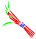 | เครื่องมือจับสัตว์ I | 15 | 1 | ทำเครื่องมือจับสัตว์ขั้นต้นที่สามารถนำไปใช้จับสัตว์ได้ · ปลด: สมุนไพรฝึกสัตว์ระดับขั้นต้น |
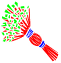 | เครื่องมือจับสัตว์ II | 20 | 3 | ทำเครื่องมือจับสัตว์แบบมาตรฐานที่สามารถนำไปใช้จับสัตว์ได้ · ปลด: สมุนไพรฝึกสัตว์ระดับมาตรฐาน |
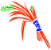 | เครื่องมือจับสัตว์ III | 40 | 5 | ทำเครื่องมือจับสัตว์ขั้นสูงที่สามารถนำไปใช้จับสัตว์ได้ · ปลด: สมุนไพรฝึกสัตว์ระดับสูง |
| ระดับการอยู่รอด | ||||
| อยู่รอดใน Durango I | 5 | 0 | เริ่มต้นก้าวแรกใน Durango | |
| อยู่รอดใน Durango II | 10 | 0 | เอาชีวิตรอดในพื้นที่เลเวล 10 | |
| อยู่รอดใน Durango III | 20 | 0 | เอาชีวิตรอดในพื้นที่เลเวล 20 | |
| อยู่รอดใน Durango IV | 30 | 0 | เอาชีวิตรอดในพื้นที่เลเวล 30 | |
| อยู่รอดใน Durango V | 40 | 0 | เอาชีวิตรอดในพื้นที่เลเวล 40 | |
| อยู่รอดใน Durango VI | 50 | 0 | เอาชีวิตรอดในพื้นที่เลเวล 50 | |
| อยู่รอดใน Durango VII | 60 | 0 | เอาชีวิตรอดในพื้นที่เลเวล 60 | |
| สกิลสำรวจ | ||||
| เพิ่มกล้ามเนื้อ II | 20 | 3 | เพิ่มพลังงานสูงสุด คุณสามารถเพิ่มสุขภาพและความเร็วในการฟื้นฟูสูงสุดได้ในหมวดหมู่การป้องกัน | |
| เพิ่มกล้ามเนื้อ III | 25 | 3 | เพิ่มพลังงานสูงสุด คุณสามารถเพิ่มสุขภาพและความเร็วในการฟื้นฟูสูงสุดได้ในหมวดหมู่การป้องกัน | |
| เพิ่มกล้ามเนื้อ IV | 30 | 4 | เพิ่มพลังงานสูงสุด คุณสามารถเพิ่มสุขภาพและความเร็วในการฟื้นฟูสูงสุดได้ในหมวดหมู่การป้องกัน | |
| เพิ่มกล้ามเนื้อ V | 35 | 4 | เพิ่มพลังงานสูงสุด คุณสามารถเพิ่มสุขภาพและความเร็วในการฟื้นฟูสูงสุดได้ในหมวดหมู่การป้องกัน | |
| เพิ่มกล้ามเนื้อ VI | 40 | 4 | เพิ่มพลังงานสูงสุด คุณสามารถเพิ่มสุขภาพและความเร็วในการฟื้นฟูสูงสุดได้ในหมวดหมู่การป้องกัน | |
| เพิ่มกล้ามเนื้อ VII | 45 | 5 | เพิ่มพลังงานสูงสุด คุณสามารถเพิ่มสุขภาพและความเร็วในการฟื้นฟูสูงสุดได้ในหมวดหมู่การป้องกัน | |
| เพิ่มกล้ามเนื้อ VIII | 50 | 5 | เพิ่มพลังงานสูงสุด คุณสามารถเพิ่มสุขภาพและความเร็วในการฟื้นฟูสูงสุดได้ในหมวดหมู่การป้องกัน | |
| เพิ่มกล้ามเนื้อ IX | 55 | 5 | เพิ่มพลังงานสูงสุด คุณสามารถเพิ่มสุขภาพและความเร็วในการฟื้นฟูสูงสุดได้ในหมวดหมู่การป้องกัน | |
| เพิ่มกล้ามเนื้อ X | 60 | 6 | เพิ่มพลังงานสูงสุด คุณสามารถเพิ่มสุขภาพและความเร็วในการฟื้นฟูสูงสุดได้ในหมวดหมู่การป้องกัน | |
| เพิ่มกล้ามเนื้อ I | 15 | 2 | เพิ่มพลังงานสูงสุด คุณสามารถเพิ่มสุขภาพและความเร็วในการฟื้นฟูสูงสุดได้ในหมวดหมู่การป้องกัน | |
| หลบซ่อน I | 10 | 2 | ลดโอกาสในการโดนสัตว์ที่ยังไม่ถูกยั่วโจมตี | |
| หลบซ่อน II | 20 | 3 | ลดโอกาสในการโดนสัตว์ที่ยังไม่ถูกยั่วโจมตี | |
| หลบซ่อน III | 30 | 4 | ลดโอกาสในการโดนสัตว์ที่ยังไม่ถูกยั่วโจมตี | |
| หลบซ่อน IV | 40 | 4 | ลดโอกาสในการโดนสัตว์ที่ยังไม่ถูกยั่วโจมตี | |
| หลบซ่อน V | 50 | 5 | ลดโอกาสในการโดนสัตว์ที่ยังไม่ถูกยั่วโจมตี | |
| หลบซ่อน VI | 60 | 6 | ลดโอกาสในการโดนสัตว์ที่ยังไม่ถูกยั่วโจมตี | |
| สำรวจ I | 20 | 3 | ค้นหาปล่องภูเขาไฟ หลุมวาร์ป และรอยแยกได้ง่ายขึ้น | |
| สำรวจ II | 40 | 4 | ค้นหาปล่องภูเขาไฟ หลุมวาร์ป และรอยแยกได้ง่ายขึ้น | |
| สำรวจ III | 60 | 6 | ค้นหาปล่องภูเขาไฟ หลุมวาร์ป และรอยแยกได้ง่ายขึ้น |
การต่อสู้ระยะประชิด
| สกิล | หมวด Lv | แต้ม | ผล / ปลด | |
|---|---|---|---|---|
| พัฒนาการโจมตีประชิดตัว | ||||
| ความชำนาญอาวุธประชิดตัว I | 5 | 1 | เพิ่มความเสียหายจากการโจมตีคริติคอลของอาวุธระยะประชิด | |
| ความชำนาญอาวุธประชิดตัว II | 15 | 2 | เพิ่มความเสียหายจากการโจมตีคริติคอลของอาวุธระยะประชิด | |
| ความชำนาญอาวุธประชิดตัว III | 25 | 3 | เพิ่มความเสียหายจากการโจมตีคริติคอลของอาวุธระยะประชิด | |
| ความชำนาญอาวุธประชิดตัว IV | 35 | 4 | เพิ่มความเสียหายจากการโจมตีคริติคอลของอาวุธระยะประชิด | |
| ความชำนาญอาวุธประชิดตัว V | 45 | 5 | เพิ่มความเสียหายจากการโจมตีคริติคอลของอาวุธระยะประชิด | |
| ความชำนาญอาวุธประชิดตัว VI | 55 | 5 | เพิ่มความเสียหายจากการโจมตีคริติคอลของอาวุธระยะประชิด | |
| ความเชี่ยวชาญอาวุธประชิดตัว I | 5 | 1 | เพิ่มความเสียหายจากการโจมตีปกติของอาวุธระยะประชิด | |
| ความเชี่ยวชาญอาวุธประชิดตัว II | 15 | 2 | เพิ่มความเสียหายจากการโจมตีปกติของอาวุธระยะประชิด | |
| ความเชี่ยวชาญอาวุธประชิดตัว III | 25 | 3 | เพิ่มความเสียหายจากการโจมตีปกติของอาวุธระยะประชิด | |
| ความเชี่ยวชาญอาวุธประชิดตัว IV | 35 | 4 | เพิ่มความเสียหายจากการโจมตีปกติของอาวุธระยะประชิด | |
| ความเชี่ยวชาญอาวุธประชิดตัว V | 45 | 5 | เพิ่มความเสียหายจากการโจมตีปกติของอาวุธระยะประชิด | |
| ความเชี่ยวชาญอาวุธประชิดตัว VI | 55 | 5 | เพิ่มความเสียหายจากการโจมตีปกติของอาวุธระยะประชิด | |
| แอ๊คชันมือเปล่า | ||||
| ต่อย | 1 | 0 | โจมตีด้วยมือเปล่าใส่คู่ต่อสู้ของคุณ · ปลด: ต่อย | |
| รัวกำปั้น | 20 | 3 | กระหน่ำโจมตีด้วยมือเปล่าใส่คู่ต่อสู้ของคุณ · ปลด: โจมตีรัวอย่างรวดเร็ว | |
| เตะ | 1 | 0 | เตะฝ่ายตรงข้ามเพื่อสร้างความเสียหาย · ปลด: เตะ | |
| โถมทับร่าง | 2 | 1 | ใช้ร่างกายของคุณกระแทกฝ่ายตรงข้าม มีประโยชน์ในการทำให้คู่ต่อสู้ของคุณมึนงง · ปลด: โถมทับร่าง | |
| ความชำนาญการต่อสู้ระยะประชิด | ||||
| เชี่ยวชาญอาวุธประเภททุบ I | 10 | 2 | เพิ่มอัตรามึนงงของอาวุธประเภททุบ | |
| เชี่ยวชาญอาวุธประเภททุบ II | 20 | 3 | เพิ่มอัตรามึนงงของอาวุธประเภททุบ | |
| เชี่ยวชาญอาวุธประเภททุบ III | 30 | 4 | เพิ่มอัตรามึนงงของอาวุธประเภททุบ | |
| เชี่ยวชาญอาวุธประเภททุบ IV | 40 | 4 | เพิ่มอัตรามึนงงของอาวุธประเภททุบ | |
| เชี่ยวชาญอาวุธประเภททุบ V | 50 | 5 | เพิ่มอัตรามึนงงของอาวุธประเภททุบ | |
| เชี่ยวชาญหอก I | 10 | 2 | เพิ่มความเสียหายการโจมตีคริติคอลของหอก | |
| เชี่ยวชาญหอก II | 20 | 3 | เพิ่มความเสียหายการโจมตีคริติคอลของหอก | |
| เชี่ยวชาญหอก III | 30 | 4 | เพิ่มความเสียหายการโจมตีคริติคอลของหอก | |
| เชี่ยวชาญหอก IV | 40 | 4 | เพิ่มความเสียหายการโจมตีคริติคอลของหอก | |
| เชี่ยวชาญหอก V | 50 | 5 | เพิ่มความเสียหายการโจมตีคริติคอลของหอก | |
| เชี่ยวชาญขวาน I | 10 | 2 | เพิ่มความเสียหายจากการโจมตีคริติคอลของขวาน | |
| เชี่ยวชาญขวาน II | 20 | 3 | เพิ่มความเสียหายจากการโจมตีคริติคอลของขวาน | |
| เชี่ยวชาญขวาน III | 30 | 4 | เพิ่มความเสียหายจากการโจมตีคริติคอลของขวาน | |
| เชี่ยวชาญขวาน IV | 40 | 4 | เพิ่มความเสียหายจากการโจมตีคริติคอลของขวาน | |
| เชี่ยวชาญขวาน V | 50 | 5 | เพิ่มความเสียหายจากการโจมตีคริติคอลของขวาน | |
| เชี่ยวชาญดาบ I | 10 | 2 | เพิ่มโอกาสการโจมตีคริติคอลของดาบ | |
| เชี่ยวชาญดาบ II | 20 | 3 | เพิ่มโอกาสการโจมตีคริติคอลของดาบ | |
| เชี่ยวชาญดาบ III | 30 | 4 | เพิ่มโอกาสการโจมตีคริติคอลของดาบ | |
| เชี่ยวชาญดาบ IV | 40 | 4 | เพิ่มโอกาสการโจมตีคริติคอลของดาบ | |
| เชี่ยวชาญดาบ V | 50 | 5 | เพิ่มโอกาสการโจมตีคริติคอลของดาบ | |
| ชำนาญอาวุธ II | ||||
| ความเร็วในการเคลื่อนที่ขณะใช้หอก I | 20 | 2 | เพิ่มความเร็วในการเคลื่อนที่เมื่อใช้หอกระหว่างการต่อสู้ | |
| ความเร็วในการเคลื่อนที่ขณะใช้หอก II | 40 | 4 | เพิ่มความเร็วในการเคลื่อนที่เมื่อใช้หอกระหว่างการต่อสู้ | |
| ความเร็วในการเคลื่อนที่ขณะใช้หอก III | 60 | 6 | เพิ่มความเร็วในการเคลื่อนที่เมื่อใช้หอกระหว่างการต่อสู้ | |
| ความเร็วในการเคลื่อนที่ขณะใช้อาวุธประเภททุบ I | 20 | 2 | เพิ่มความเร็วในการเคลื่อนที่เมื่อใช้อาวุธประเภททุบระหว่างการต่อสู้ | |
| ความเร็วในการเคลื่อนที่ขณะใช้อาวุธประเภททุบ II | 40 | 4 | เพิ่มความเร็วในการเคลื่อนที่เมื่อใช้อาวุธประเภททุบระหว่างการต่อสู้ | |
| ความเร็วในการเคลื่อนที่ขณะใช้อาวุธประเภททุบ III | 60 | 6 | เพิ่มความเร็วในการเคลื่อนที่เมื่อใช้อาวุธประเภททุบระหว่างการต่อสู้ | |
| ความเร็วในการเคลื่อนที่ขณะใช้ขวาน I | 10 | 1 | เพิ่มความเร็วในการเคลื่อนที่เมื่อใช้ขวานระหว่างการต่อสู้ | |
| ความเร็วในการเคลื่อนที่ขณะใช้ขวาน II | 30 | 3 | เพิ่มความเร็วในการเคลื่อนที่เมื่อใช้ขวานระหว่างการต่อสู้ | |
| ความเร็วในการเคลื่อนที่ขณะใช้ขวาน III | 50 | 5 | เพิ่มความเร็วในการเคลื่อนที่เมื่อใช้ขวานระหว่างการต่อสู้ | |
| ความเร็วในการเคลื่อนที่ขณะใช้ดาบ I | 10 | 1 | เพิ่มความเร็วในการเคลื่อนที่เมื่อใช้ดาบระหว่างการต่อสู้ | |
| ความเร็วในการเคลื่อนที่ขณะใช้ดาบ II | 30 | 3 | เพิ่มความเร็วในการเคลื่อนที่เมื่อใช้ดาบระหว่างการต่อสู้ | |
| ความเร็วในการเคลื่อนที่ขณะใช้ดาบ III | 50 | 5 | เพิ่มความเร็วในการเคลื่อนที่เมื่อใช้ดาบระหว่างการต่อสู้ | |
| แอ๊คชันสองมือ | ||||
| การกระจาย I | 25 | 3 | โจมตีบดขยี้ด้วยอาวุธสองมือ · ปลด: กระจายออก | |
| การกระจาย II | 35 | 4 | เพิ่มความเสียหายของการสะบั้น | |
| การกระจาย III | 45 | 5 | เพิ่มความเสียหายของการสะบั้น | |
| การกระจาย IV | 55 | 5 | เพิ่มความเสียหายของการสะบั้น | |
| กวัดแกว่ง I | 15 | 2 | โจมตีใส่ศัตรูหลายตัวพร้อมกันด้วยอาวุธแบบสองมือ · ปลด: กวัดแกว่ง | |
| กวัดแกว่ง II | 25 | 3 | เพิ่มความเสียหายของการฟันผ่า | |
| กวัดแกว่ง III | 35 | 4 | เพิ่มความเสียหายของการฟันผ่า | |
| กวัดแกว่ง IV | 45 | 5 | เพิ่มความเสียหายของการฟันผ่า | |
| บดขยี้ I | 5 | 1 | บดขยี้ศัตรูของคุณด้วยอาวุธสองมือ · ปลด: บดขยี้ | |
| บดขยี้ II | 15 | 2 | เพิ่มความเสียหายของการบดขยี้ | |
| บดขยี้ III | 25 | 3 | เพิ่มความเสียหายของการบดขยี้ | |
| บดขยี้ IV | 35 | 4 | เพิ่มความเสียหายของการบดขยี้ | |
| แอ๊คชันหอก | ||||
| เข้าชาร์จ I | 25 | 3 | วิ่งเข้าใส่ศัตรูพร้อมกับหอกเพื่อสร้างความเสียหายจำนวนมาก · ปลด: เข้าชาร์จ | |
| เข้าชาร์จ II | 35 | 4 | เพิ่มความเสียหายของการพุ่งโจมตี | |
| เข้าชาร์จ III | 45 | 5 | เพิ่มความเสียหายของการพุ่งโจมตี | |
| เข้าชาร์จ IV | 55 | 5 | เพิ่มความเสียหายของการพุ่งโจมตี | |
| ทำให้บาดเจ็บ | 5 | 1 | ใช้หอกแทงศัตรูของคุณให้ทะลุ · ปลด: ทำให้บาดเจ็บ | |
| บาดเจ็บ II | 15 | 2 | เพิ่มความเสียหายของการแทง | |
| บาดเจ็บ III | 25 | 3 | เพิ่มความเสียหายของการแทง | |
| บาดเจ็บ IV | 35 | 4 | เพิ่มความเสียหายของการแทง | |
| แอ๊คชันมือเดียว | ||||
| แทงข้างหลัง I | 25 | 3 | แทงข้างหลังด้วยอาวุธมือเดียว · ปลด: แทงข้างหลัง | |
| แทงข้างหลัง II | 35 | 4 | เพิ่มความเสียหายในการแทงข้างหลัง | |
| แทงข้างหลัง III | 45 | 5 | เพิ่มความเสียหายในการแทงข้างหลัง | |
| แทงข้างหลัง IV | 55 | 5 | เพิ่มความเสียหายในการแทงข้างหลัง | |
| ทุบ I | 15 | 2 | ทุบด้วยอาวุธมือเดียว · ปลด: ทุบ | |
| ทุบ II | 25 | 3 | เพิ่มความเสียหายในการทุบ | |
| ทุบ III | 35 | 4 | เพิ่มความเสียหายในการทุบ | |
| ทุบ IV | 45 | 5 | เพิ่มความเสียหายในการทุบ | |
| จู่โจม I | 5 | 1 | ตีด้วยอาวุธมือเดียว · ปลด: จู่โจม | |
| จู่โจม II | 15 | 2 | เพิ่มความเสียหายในการโจมตี | |
| จู่โจม III | 25 | 3 | เพิ่มความเสียหายในการโจมตี | |
| จู่โจม IV | 35 | 4 | เพิ่มความเสียหายในการโจมตี |
การยิงธนู
| สกิล | หมวด Lv | แต้ม | ผล / ปลด | |
|---|---|---|---|---|
| แอ๊คชันการยิงธนู | ||||
| ยิงเล็งเป้า: ความเสียหาย I | 35 | 4 | เพิ่มความเสียหายของการยิงเล็งเป้า | |
| ยิงเล็งเป้า: ความเสียหาย II | 45 | 5 | เพิ่มความเสียหายของการยิงเล็งเป้า | |
| ยิงเล็งเป้า: ความเสียหาย III | 55 | 5 | เพิ่มความเสียหายของการยิงเล็งเป้า | |
| ยิงเล็งเป้า | 25 | 3 | เล็งเป้าหมายของคุณอย่างแม่นยำเพื่อสร้างความเสียหายอย่างมาก · ปลด: ยิงเล็งเป้า | |
| ระดมยิง: ความเสียหาย I | 15 | 2 | เพิ่มความเสียหายของการระดมยิง | |
| ระดมยิง: ความเสียหาย II | 25 | 3 | เพิ่มความเสียหายของการระดมยิง | |
| ระดมยิง: ความเสียหาย III | 35 | 4 | เพิ่มความเสียหายของการระดมยิง | |
| ระดมยิง | 5 | 1 | ยิงลูกธนูหลายดอกแบบต่อเนื่องอย่างรวดเร็ว · ปลด: ระดมยิง | |
| พัฒนาสกิลการโจมตีระยะไกล | ||||
| ชำนาญอาวุธยิง I | 5 | 1 | เพิ่มความเสียหายจากการโจมตีคริติคอลของธนูและหน้าไม้ | |
| ชำนาญอาวุธยิง II | 15 | 2 | เพิ่มความเสียหายจากการโจมตีคริติคอลของธนูและหน้าไม้ | |
| ชำนาญอาวุธยิง III | 25 | 3 | เพิ่มความเสียหายจากการโจมตีคริติคอลของธนูและหน้าไม้ | |
| ชำนาญอาวุธยิง IV | 35 | 4 | เพิ่มความเสียหายจากการโจมตีคริติคอลของธนูและหน้าไม้ | |
| ชำนาญอาวุธยิง IV | 45 | 5 | เพิ่มความเสียหายจากการโจมตีคริติคอลของธนูและหน้าไม้ | |
| ชำนาญอาวุธยิง VI | 55 | 5 | เพิ่มความเสียหายจากการโจมตีคริติคอลของธนูและหน้าไม้ | |
| เชี่ยวชาญอาวุธยิง I | 5 | 1 | เพิ่มความเสียหายจากการโจมตีปกติของธนูและหน้าไม้ | |
| เชี่ยวชาญอาวุธยิง II | 15 | 2 | เพิ่มความเสียหายจากการโจมตีปกติของธนูและหน้าไม้ | |
| เชี่ยวชาญอาวุธยิง III | 25 | 3 | เพิ่มความเสียหายจากการโจมตีปกติของธนูและหน้าไม้ | |
| เชี่ยวชาญอาวุธยิง IV | 35 | 4 | เพิ่มความเสียหายจากการโจมตีปกติของธนูและหน้าไม้ | |
| เชี่ยวชาญอาวุธยิง V | 45 | 5 | เพิ่มความเสียหายจากการโจมตีปกติของธนูและหน้าไม้ | |
| เชี่ยวชาญอาวุธยิง VI | 55 | 5 | เพิ่มความเสียหายจากการโจมตีปกติของธนูและหน้าไม้ | |
| ความชำนาญอาวุธระยะไกล III | ||||
| ความเชี่ยวชาญหน้าไม้ I | 10 | 2 | เพิ่มโอกาสโจมตีคริติคอลของหน้าไม้ | |
| ความเชี่ยวชาญหน้าไม้ II | 20 | 3 | เพิ่มโอกาสโจมตีคริติคอลของหน้าไม้ | |
| ความเชี่ยวชาญหน้าไม้ III | 30 | 4 | เพิ่มโอกาสโจมตีคริติคอลของหน้าไม้ | |
| ความเชี่ยวชาญหน้าไม้ IV | 40 | 4 | เพิ่มโอกาสโจมตีคริติคอลของหน้าไม้ | |
| ความเชี่ยวชาญหน้าไม้ V | 50 | 5 | เพิ่มโอกาสโจมตีคริติคอลของหน้าไม้ | |
| ความเชี่ยวชาญธนู I | 10 | 2 | เพิ่มอัตราการโจมตีของธนู | |
| ความเชี่ยวชาญธนู II | 20 | 3 | เพิ่มอัตราการโจมตีของธนู | |
| ความเชี่ยวชาญธนู III | 30 | 4 | เพิ่มอัตราการโจมตีของธนู | |
| ความเชี่ยวชาญธนู IV | 40 | 4 | เพิ่มอัตราการโจมตีของธนู | |
| ความเชี่ยวชาญธนู V | 50 | 5 | เพิ่มอัตราการโจมตีของธนู | |
| ชำนาญอาวุธระยะไกล II | ||||
| ความเร็วในการเคลื่อนที่ขณะใช้หน้าไม้ I | 20 | 2 | เพิ่มความเร็วในการเคลื่อนที่เมื่อใช้คันธนูระหว่างการต่อสู้ | |
| ความเร็วในการเคลื่อนที่ขณะใช้หน้าไม้ II | 40 | 4 | เพิ่มความเร็วในการเคลื่อนที่เมื่อใช้คันธนูระหว่างการต่อสู้ | |
| ความเร็วในการเคลื่อนที่ขณะใช้หน้าไม้ III | 60 | 6 | เพิ่มความเร็วในการเคลื่อนที่เมื่อใช้คันธนูระหว่างการต่อสู้ | |
| ความเร็วในการเคลื่อนที่ขณะใช้ธนู I | 10 | 1 | เพิ่มความเร็วในการเคลื่อนที่เมื่อใช้คันธนูระหว่างการต่อสู้ | |
| ความเร็วในการเคลื่อนที่ขณะใช้ธนู II | 30 | 3 | เพิ่มความเร็วในการเคลื่อนที่เมื่อใช้คันธนูระหว่างการต่อสู้ | |
| ความเร็วในการเคลื่อนที่ขณะใช้ธนู III | 50 | 5 | เพิ่มความเร็วในการเคลื่อนที่เมื่อใช้คันธนูระหว่างการต่อสู้ |
ป้องกัน
| สกิล | หมวด Lv | แต้ม | ผล / ปลด | |
|---|---|---|---|---|
| สกิลป้องกัน | ||||
| ม้วนตัว | 1 | 0 | ม้วนตัวในการต่อสู้เพื่อหลีกเลี่ยงการโจมตี · ปลด: ม้วนตัว | |
| ฝึกฝนร่างกาย | ||||
| สุขภาพ I | 5 | 1 | เพิ่มสุขภาพสูงสุด | |
| สุขภาพ II | 15 | 2 | เพิ่มสุขภาพสูงสุด | |
| สุขภาพ III | 25 | 3 | เพิ่มสุขภาพสูงสุด | |
| สุขภาพ IV | 35 | 4 | เพิ่มสุขภาพสูงสุด | |
| สุขภาพ V | 45 | 5 | เพิ่มสุขภาพสูงสุด | |
| สุขภาพ VI | 55 | 5 | เพิ่มสุขภาพสูงสุด | |
| ป้องกัน I | 5 | 1 | เพิ่มการป้องกันพื้นฐาน | |
| ป้องกัน II | 15 | 2 | เพิ่มการป้องกันพื้นฐาน | |
| ป้องกัน III | 25 | 3 | เพิ่มการป้องกันพื้นฐาน | |
| ป้องกัน IV | 35 | 4 | เพิ่มการป้องกันพื้นฐาน | |
| ป้องกัน V | 45 | 5 | เพิ่มการป้องกันพื้นฐาน | |
| ป้องกัน VI | 55 | 5 | เพิ่มการป้องกันพื้นฐาน | |
| ฟื้นฟู | ||||
| ฟื้นฟูความแข็งแรง I | 5 | 1 | ฟื้นฟูความแข็งแรงได้รวดเร็วยิ่งขึ้น ความแข็งแรงคือพลังงานของคุณในระหว่างการต่อสู้ คุณสามารถเพิ่มพลังงานสูงสุดได้จากหมวดหมู่การเอาชีวิตรอด | |
| ฟื้นฟูความแข็งแรง II | 15 | 2 | ฟื้นฟูความแข็งแรงได้รวดเร็วยิ่งขึ้น ความแข็งแรงคือพลังงานของคุณในระหว่างการต่อสู้ คุณสามารถเพิ่มพลังงานสูงสุดได้จากหมวดหมู่การเอาชีวิตรอด | |
| ฟื้นฟูความแข็งแรง III | 25 | 3 | ฟื้นฟูความแข็งแรงได้รวดเร็วยิ่งขึ้น ความแข็งแรงคือพลังงานของคุณในระหว่างการต่อสู้ คุณสามารถเพิ่มพลังงานสูงสุดได้จากหมวดหมู่การเอาชีวิตรอด | |
| ฟื้นฟูความแข็งแรง IV | 35 | 4 | ฟื้นฟูความแข็งแรงได้รวดเร็วยิ่งขึ้น ความแข็งแรงคือพลังงานของคุณในระหว่างการต่อสู้ คุณสามารถเพิ่มพลังงานสูงสุดได้จากหมวดหมู่การเอาชีวิตรอด | |
| ฟื้นฟูความแข็งแรง V | 45 | 5 | ฟื้นฟูความแข็งแรงได้รวดเร็วยิ่งขึ้น ความแข็งแรงคือพลังงานของคุณในระหว่างการต่อสู้ คุณสามารถเพิ่มพลังงานสูงสุดได้จากหมวดหมู่การเอาชีวิตรอด | |
| ฟื้นฟูความแข็งแรง VI | 55 | 5 | ฟื้นฟูความแข็งแรงได้รวดเร็วยิ่งขึ้น ความแข็งแรงคือพลังงานของคุณในระหว่างการต่อสู้ คุณสามารถเพิ่มพลังงานสูงสุดได้จากหมวดหมู่การเอาชีวิตรอด | |
| ฟื้นฟูพลังชีวิต I | 5 | 1 | ฟื้นฟูชีวิตได้รวดเร็วยิ่งขึ้น ชีวิตคือสุขภาพของคุณในระหว่างการต่อสู้ | |
| ฟื้นฟูพลังชีวิต II | 15 | 2 | ฟื้นฟูชีวิตได้รวดเร็วยิ่งขึ้น ชีวิตคือสุขภาพของคุณในระหว่างการต่อสู้ | |
| ฟื้นฟูพลังชีวิต III | 25 | 3 | ฟื้นฟูชีวิตได้รวดเร็วยิ่งขึ้น ชีวิตคือสุขภาพของคุณในระหว่างการต่อสู้ | |
| ฟื้นฟูพลังชีวิต IV | 35 | 4 | ฟื้นฟูชีวิตได้รวดเร็วยิ่งขึ้น ชีวิตคือสุขภาพของคุณในระหว่างการต่อสู้ | |
| ฟื้นฟูพลังชีวิต V | 45 | 5 | ฟื้นฟูชีวิตได้รวดเร็วยิ่งขึ้น ชีวิตคือสุขภาพของคุณในระหว่างการต่อสู้ | |
| ฟื้นฟูพลังชีวิต VI | 55 | 5 | ฟื้นฟูชีวิตได้รวดเร็วยิ่งขึ้น ชีวิตคือสุขภาพของคุณในระหว่างการต่อสู้ |
การแล่เนื้อ
| สกิล | หมวด Lv | แต้ม | ผล / ปลด | |
|---|---|---|---|---|
| การถลกหนัง | ||||
| แผงกระดูก 1 | 35 | 4 | เก็บแผงกระดูกขนาดเล็ก ใช้เมื่อคุณต้องการกระดูกหรือจาน และยังสามารถใช้ในการทำเสื้อผ้าที่มีคุณภาพได้ · ปลด: แผงกระดูกเล็ก | |
| แผงกระดูก 2 | 55 | 5 | เก็บแผงกระดูก ใช้เมื่อคุณต้องการกระดูกหรือจาน แผงกระดูกที่ตัดแต่งแล้วสามารถนำมาใช้ทำเสื้อผ้าที่มีคุณภาพได้ · ปลด: แผงกระดูก | |
| ขนนก | 20 | 3 | เก็บขนนก ใช้เป็นวัสดุสำหรับเสื้อผ้าและอุปกรณ์เสริม และยังสามารถทำหนังติดขนได้โดยการเพิ่มขนนกลงบนหนัง · ปลด: ขนนก | |
| หนังติดขน 1 | 30 | 4 | เก็บหนังติดขนผืนเล็ก ใช้เมื่อคุณต้องการรูปทรงแบบหนังหรือผ้า เสื้อผ้าและอุปกรณ์ที่ทำจากหนังติดขนเหมาะที่จะใช้ต้านทานความเย็น · ปลด: หนังติดขนแผ่นเล็ก | |
| หนังติดขน 2 | 50 | 5 | เก็บหนังติดขน ใช้เมื่อคุณต้องการรูปทรงแบบหนังหรือผ้า เสื้อผ้าและอุปกรณ์ที่ทำจากหนังติดขนเหมาะที่จะใช้ต้านทานความเย็น · ปลด: หนังติดขน | |
| หนัง 1 | 10 | 2 | รวมรวมหนัง ใช้เพื่อการทำเสื้อผ้าและสิ่งปลูกสร้าง · ปลด: หนัง | |
| หนัง 2 | 45 | 5 | เก็บเกราะ ใช้เมื่อคุณต้องการเข้ารูปหนังหรือผ้า หนังตากแห้งยังสามารถนำไปใช้ทำชุดต่อสู้ที่มีคุณภาพได้ · ปลด: เกราะ | |
| เก็บเนื้อสัตว์ | ||||
| เนื้อ 1 | 1 | 0 | เก็บรวบรวมเนื้อ กินแบบดิบหรือนำไปทำอาหารก็ได้ · ปลด: เนื้อ | |
| เนื้อ 2 | 40 | 4 | เก็บไขมัน จะกินแบบนั้นเลย นำไปใช้ปรุงอาหาร หรือใช้ทำสายธนูและตะเกียงได้ · ปลด: ไขมัน | |
| เนื้อ 3 | 40 | 4 | เก็บลำไส้ จะใช้กินแทนเนื้อ หรือใช้เป็นวัตถุดิบทำไส้กรอกและอาหารสัตว์กินเนื้อได้ · ปลด: ไส้ | |
| เนื้อ 4 | 50 | 5 | เก็บเนื้อส่วนที่ดีที่สุดที่เป็นเนื้อก้อนใหญ่ เช่น เนื้อสัน · ปลด: ชิ้นเนื้อคุณภาพดี | |
| เนื้อ 5 | 55 | 5 | เก็บเส้นเอ็น ใช้กิน หรือใช้ทำสายรัด หรือใช้เป็นวัสดุสำหรับทำชุด อุปกรณ์เสริม และสายธนู · ปลด: เอ็น | |
| พื้นฐานการแล่เนื้อ | ||||
| ชำแหละ I | 20 | 3 | เพิ่มอัตราความสำเร็จของการเก็บรวบรวมจากสัตว์ | |
| ชำแหละ II | 30 | 4 | เพิ่มอัตราความสำเร็จของการเก็บรวบรวมจากสัตว์ | |
| ชำแหละ III | 40 | 4 | เพิ่มอัตราความสำเร็จของการเก็บรวบรวมจากสัตว์ | |
| ชำแหละ IV | 50 | 5 | เพิ่มอัตราความสำเร็จของการเก็บรวบรวมจากสัตว์ | |
| ชำแหละ V | 60 | 6 | เพิ่มอัตราความสำเร็จของการเก็บรวบรวมจากสัตว์ | |
| เลาะกระดูก | ||||
| กระดูก 1 | 1 | 0 | เก็บกระดูกขา ใช้เมื่อคุณต้องการกระดูกหรือรูปทรงแท่ง · ปลด: กระดูกขา | |
| กระดูก 2 | 15 | 2 | เก็บกระดูกขาใหญ่ ใช้เมื่อคุณต้องการกระดูกหรือรูปทรงเสา · ปลด: กระดูกขาขนาดใหญ่ | |
| กระดูก 3 | 25 | 3 | เก็บซี่โครง ใช้เมื่อคุณต้องการกระดูกหรือรูปทรงแท่ง ซี่โครงที่แปรรูปแล้วสามารถนำไปใช้ทำธนูและหน้าไม้ได้ · ปลด: ซี่โครง | |
| เขา | 30 | 4 | เก็บเขาสัตว์ ใช้เมื่อคุณต้องการกระดูก หรือใช้เป็นใบมีดคมหรือใบมีดทำงาน เขาสัตว์ที่ตัดแต่งแล้วสามารถใช้ทำเสื้อผ้าและอุปกรณ์เสริมได้ · ปลด: เขา | |
| หัวกะโหลก 1 | 20 | 3 | เก็บกะโหลกขนาดเล็ก ใช้เมื่อคุณต้องการกระดูกหรือรูปทรงที่เป็นก้อน และยังสามารถใช้เป็นภาชนะบรรจุได้ · ปลด: กะโหลกขนาดเล็ก | |
| หัวกะโหลก 2 | 45 | 5 | เก็บกะโหลก ใช้เมื่อคุณต้องการกระดูกหรือรูปทรงที่เป็นก้อน และยังสามารถใช้เป็นภาชนะบรรจุได้ · ปลด: หัวกะโหลก | |
| หัวกะโหลก 3 | 60 | 6 | เก็บกะโหลกขนาดใหญ่ ใช้เมื่อคุณต้องการกระดูกหรือรูปทรงที่เป็นก้อนขนาดใหญ่ และยังสามารถใช้เป็นภาชนะบรรจุได้ · ปลด: กะโหลกขนาดใหญ่ | |
| เขี้ยว 1 | 25 | 3 | เก็บฟัน ใช้เมื่อคุณต้องการกระดูก หรือใช้เป็นใบมีดคมหรือใบมีดทำงาน ฟันที่ตัดแต่งแล้วสามารถใช้ทำเสื้อผ้าและอุปกรณ์เสริมได้ · ปลด: เขี้ยว | |
| เขี้ยว 2 | 50 | 5 | เก็บงาช้าง ใช้เมื่อคุณต้องการกระดูกหรือเสา งาช้างที่ตัดแต่งแล้วสามารถนำมาทำอุปกรณ์เสริมได้ · ปลด: งา | |
| อาหารทะเล | ||||
| หอยตลับ | 1 | 0 | เก็บเนื้อหอยตลับและเปลือกหอย ใช้เพื่อทำสีย้อมและวัสดุแปรรูป คุณต้องเรียนรู้สกิลการแยกจากหมวดหมู่การเก็บแร่ธาตุเพื่อเก็บไข่มุก · ปลด: หอย | |
| ปู | 1 | 0 | จับปู · ปลด: ปู | |
| กุ้ง | 1 | 0 | จับกุ้งจากทะเล · ปลด: กุ้ง |
รวบรวม
| สกิล | หมวด Lv | แต้ม | ผล / ปลด | |
|---|---|---|---|---|
| แร่ธาตุ | ||||
| ขุดอัญมณี I | 40 | 4 | เก็บไข่มุกจากหอย ใช้เป็นสารแต่งสีหรือวัสดุอุปกรณ์เสริม · ปลด: ไข่มุก | |
| ขุดอัญมณี II | 50 | 5 | เก็บรวบรวมทับทิมและบุษราคัม ใช้อัญมณีเป็นตัวเพิ่มสีหรือวัตถุดิบสำหรับอุปกรณ์เสริม · ปลด: ทับทิม, บุษราคัม | |
| ขุดอัญมณี III | 55 | 5 | เก็บรวบรวมไพลินและเพชร ใช้อัญมณีเป็นตัวเพิ่มสีหรือวัตถุดิบสำหรับอุปกรณ์เสริม · ปลด: ไพลิน, เพชร | |
| ขุดอัญมณี IV | 60 | 6 | เก็บรวบรวมมรกตและแอเมทิสต์ ใช้อัญมณีเป็นตัวเพิ่มสีหรือวัตถุดิบสำหรับอุปกรณ์เสริม · ปลด: มรกต, แอเมทิสต์ | |
| ขุดโลหะ I | 40 | 4 | เก็บแร่ดีบุก สามารถนำไปถลุงแล้วใช้เป็นวัสดุสำหรับอาวุธและเครื่องมือ หรือสามารถนำไปผสมกับทองแดงเพื่อสร้างโลหะผสมได้ · ปลด: แร่ดีบุก | |
| ขุดโลหะ II | 45 | 5 | เก็บแร่สังกะสี สามารถนำไปถลุงแล้วใช้เป็นวัสดุสำหรับอาวุธและเครื่องมือ หรือสามารถนำไปผสมกับทองแดงเพื่อสร้างโลหะผสมได้ · ปลด: แร่สังกะสี | |
| ขุดโลหะ III | 50 | 5 | เก็บแร่ทองแดง สามารถนำไปถลุงแล้วใช้เป็นวัสดุสำหรับอาวุธและเครื่องมือ หรือสามารถนำไปผสมกับดีบุกหรือสังกะสีเพื่อสร้างโลหะผสมได้ · ปลด: แร่ทองแดง | |
| ขุดโลหะ IV | 60 | 6 | เก็บแร่เหล็ก สามารถนำไปถลุงแล้วใช้เป็นวัสดุสำหรับอาวุธและเครื่องมือได้ · ปลด: แร่เหล็ก | |
| ขุดโลหะล้ำค่า I | 50 | 5 | เก็บแร่เงิน สามารถนำไปถลุงแล้วใช้เป็นวัสดุอุปกรณ์เสริมได้ · ปลด: แร่เงิน | |
| ขุดโลหะล้ำค่า II | 60 | 6 | เก็บแร่ทองคำ สามารถนำไปถลุงแล้วใช้เป็นวัสดุอุปกรณ์เสริมได้ · ปลด: แร่ทอง | |
| โคลน I | 1 | 0 | เก็บมูลสัตว์ ใช้เป็นปุ๋ยหมักและใช้งานเป็นวัสดุก่อสร้างหรือวัสดุการประดิษฐ์แทนโคลนได้ · ปลด: มูลสัตว์ | |
| โคลน II | 10 | 2 | เก็บโคลน ใช้เป็นวัสดุในการประดิษฐ์ · ปลด: โคลน | |
| กรวด | 1 | 0 | เก็บก้อนกรวด ใช้ทำเครื่องมือ เช่น ใบมีดหิน · ปลด: กรวด | |
| หินก้อนใหญ่ | 5 | 0 | เก็บหินก้อนใหญ่ ใช้ทำเครื่องมือขนาดใหญ่ สามารถตัดแต่งเพื่อใช้เป็นวัสดุก่อสร้างได้ · ปลด: หินก้อนใหญ่ | |
| ออบซิเดียน | 35 | 4 | เก็บออบซิเดียน ใช้เป็นวัสดุในการทำใบมีด และยังสามารถใช้เป็นวัสดุก่อสร้างได้ด้วย · ปลด: ออบซิเดียน | |
| หินอ่อน | 40 | 4 | เก็บหินอ่อน ใช้เป็นวัสดุก่อสร้างได้เนื่องจากมีลวดลายที่สวยงาม · ปลด: หินอ่อน | |
| สารส้ม | 45 | 5 | เก็บสารส้มจากหินก้อนใหญ่ที่มีระดับ 45 ขึ้นไป ใช้ทำน้ำยาคงสภาพสีย้อมและสารฟอกขาวสำหรับย้อมสี และยังสามารถใช้เป็นสารเติมแต่งสำหรับการฟอกหนังได้ · ปลด: สารส้ม | |
| หินภูเขาไฟ | 55 | 5 | เก็บรวบรวมลาวา ลาวาแข็งตัว กำมะถัน หินบะซอล และหินแกรนิตที่พบรอบ ๆ ภูเขาไฟ · ปลด: ลาวา, ลาวาแข็งตัว, กำมะถัน, หินแกรนิต, หินบะซอล | |
| ไม้ | ||||
| พุ่มไม้ | 1 | 0 | เก็บพุ่มไม้จากต้นไม้ · ปลด: พุ่มไม้ | |
| กิ่ง | 1 | 0 | เก็บกิ่งไม้จากต้นไม้ · ปลด: กิ่ง | |
| กิ่งยาว | 45 | 5 | เก็บกิ่งไม้ยาวจากต้นไม้ · ปลด: กิ่งยาว | |
| ใบไม้ | 1 | 0 | เก็บใบไม้จากต้นไม้ · ปลด: ใบไม้, วัสดุสำหรับกิจกรรม | |
| ท่อนซุง I | 1 | 0 | เก็บท่อนซุงบางจากต้นไม้ · ปลด: ท่อนซุงขนาดเล็ก | |
| ท่อนซุง II | 5 | 3 | เก็บท่อนซุงจากต้นไม้ใบกว้าง · ปลด: ใบท่อนซุงหยาบ | |
| ท่อนซุง III | 25 | 4 | เก็บท่อนซุงจากต้นสน · ปลด: ท่อนซุงต้นสน | |
| ท่อนซุง IV | 60 | 6 | เก็บรวบรวมท่อนซุงจากต้นไม้บนเกาะภูเขาไฟ · ปลด: ท่อนซุงต้นขี้เถ้า, กิ่งต้นขี้เถ้า, กิ่งปลายแหลม | |
| ยางไม้ I | 30 | 4 | เก็บน้ำเลี้ยงจากต้นไม้ · ปลด: ยางไม้ | |
| เก็บแมลง | ||||
| แมลง I | 1 | 0 | เก็บตัวหนอน · ปลด: หนอนผีเสื้อ | |
| แมลง II | 40 | 4 | เก็บผึ้ง · ปลด: ผึ้ง | |
| แมลง III | 45 | 5 | เก็บหอยทาก เพลี้ย ปลวก ฯลฯ ที่อาศัยอยู่ในหนอง · ปลด: แมลงหนองน้ำ | |
| พืช | ||||
| ก้าน | 1 | 0 | เก็บก้านไม้จากต้นไม้ · ปลด: ก้านพืช | |
| ใย I | 20 | 3 | เก็บเส้นใยปอป่า · ปลด: ปอ | |
| ใย II | 30 | 4 | เก็บเส้นใยฝ้ายป่า · ปลด: ใยฝ้าย | |
| ผลไม้ I | 1 | 0 | เก็บผลไม้จากต้นไม้ · ปลด: ผลไม้ | |
| ผลไม้ II | 25 | 3 | เก็บผลไม้หายากจากต้นไม้ · ปลด: ผลไม้หายาก | |
| พื้นฐานการเก็บเกี่ยว | ||||
| รื้อถอน I | 40 | 4 | เพิ่มอัตราความสำเร็จเมื่อขณะเก็บไอเทมยุคปัจจุบันจากร่องรอยการวาร์ป | |
| รื้อถอน II | 45 | 5 | เพิ่มอัตราความสำเร็จเมื่อขณะเก็บไอเทมยุคปัจจุบันจากร่องรอยการวาร์ป | |
| รื้อถอน III | 50 | 5 | เพิ่มอัตราความสำเร็จเมื่อขณะเก็บไอเทมยุคปัจจุบันจากร่องรอยการวาร์ป | |
| รื้อถอน IV | 55 | 5 | เพิ่มอัตราความสำเร็จเมื่อขณะเก็บไอเทมยุคปัจจุบันจากร่องรอยการวาร์ป | |
| รื้อถอน V | 60 | 6 | เพิ่มอัตราความสำเร็จเมื่อขณะเก็บไอเทมยุคปัจจุบันจากร่องรอยการวาร์ป | |
| เก็บพืชพันธุ์ I | 20 | 3 | เพิ่มอัตราความสำเร็จขณะเก็บพืช | |
| เก็บพืชพันธุ์ II | 30 | 4 | เพิ่มอัตราความสำเร็จขณะเก็บพืช | |
| เก็บพืชพันธุ์ III | 40 | 4 | เพิ่มอัตราความสำเร็จขณะเก็บพืช | |
| เก็บพืชพันธุ์ IV | 50 | 5 | เพิ่มอัตราความสำเร็จขณะเก็บพืช | |
| เก็บพืชพันธุ์ V | 60 | 6 | เพิ่มอัตราความสำเร็จขณะเก็บพืช | |
| ทำเหมือง I | 40 | 4 | เพิ่มอัตราความสำเร็จขณะเก็บแร่ธาตุ | |
| ทำเหมือง II | 45 | 5 | เพิ่มอัตราความสำเร็จขณะเก็บแร่ธาตุ | |
| ทำเหมือง III | 50 | 5 | เพิ่มอัตราความสำเร็จขณะเก็บแร่ธาตุ | |
| ทำเหมือง IV | 55 | 5 | เพิ่มอัตราความสำเร็จขณะเก็บแร่ธาตุ | |
| ทำเหมือง V | 60 | 6 | เพิ่มอัตราความสำเร็จขณะเก็บแร่ธาตุ | |
| เก็บพืชพิเศษ | ||||
| หญ้าภูเขาไฟ | 55 | 5 | เก็บรวบรวมต้นออกซาลิซ ดอกไม้ไหม้เกรียม และเผือกที่เติบโตบนภูเขาไฟ · ปลด: ออกซาลิซ, ดอกไม้ไหม้เกรียม, เผือก, เมล็ดออกซาลิซป่า, เมล็ดเผือกป่า | |
| สมุนไพรศาสตร์ I | 15 | 2 | เก็บหัวหอมป่า สามารถนำไปปรุงแล้วกินเป็นผักหรือใช้เป็นส่วนผสมยาได้ · ปลด: หัวหอมป่า | |
| สมุนไพรศาสตร์ II | 15 | 2 | เก็บดอกหญ้าปล้องข้าวและดอกลาเวนเดอร์ ใช้เป็นส่วนผสมของยา · ปลด: ดอกหญ้าปล้องข้าว, ลาเวนเดอร์ป่า | |
| สมุนไพรศาสตร์ III | 20 | 3 | เก็บดอกกุหลาบป่า ใช้เป็นส่วนผสมของยา · ปลด: กุหลาบป่า | |
| สมุนไพรศาสตร์ IV | 25 | 3 | เก็บดอกอาเฟลันดราและอ้อยป่า ดอกอาเฟลันดราใช้เป็นส่วนผสมของยา ส่วนอ้อยใช้ทำน้ำตาลและน้ำผลไม้ได้ · ปลด: อาเฟลันดรา, อ้อยป่า | |
| สมุนไพรศาสตร์ V | 30 | 4 | เก็บดอกไซริงกาและใบชา ใช้เป็นส่วนผสมของยา · ปลด: ไซริงกา, ใบของต้นทรีป่า | |
| สมุนไพรศาสตร์ VI | 35 | 4 | เก็บกระบองเพชร เนื้ออะกาเวทะเลทรายป่า และดอกของต้นโจชัว ใช้เป็นส่วนผสมของยา · ปลด: กระบองเพชร, เนื้ออะกาเวทะเลทรายป่า, ดอกโจชัว | |
| สมุนไพรศาสตร์ VII | 40 | 4 | เก็บสมุนไพรเซนต์พอล ใช้เป็นส่วนผสมของยา · ปลด: ดอกไม้ทะเล | |
| สมุนไพรศาสตร์ VIII | 45 | 5 | เก็บดอกบัวและดอกกกธูป ใช้เป็นส่วนผสมของยาและสารแต่งสี · ปลด: ดอกบัว, ดอกกกธูป | |
| สมุนไพรศาสตร์ IX | 50 | 5 | เก็บส่วนหัวและส่วนดอกของทิวลิปป่าสีม่วง ใช้เป็นส่วนผสมของยา · ปลด: ดอกทิวลิปป่าสีม่วง, หัวของต้นทิวลิปป่าสีม่วง | |
| สมุนไพรศาสตร์ X | 50 | 5 | เก็บดอกอะกาเวทะเลทราย ใช้เป็นส่วนผสมของยา · ปลด: ดอกอะกาเวทะเลทรายป่า | |
| สมุนไพรศาสตร์ XI | 55 | 5 | เก็บดอกกัซมาเนียและรัฟเฟิลเซีย ใช้เป็นส่วนผสมของยา · ปลด: กัซมาเนีย, รัฟเฟิลเซีย | |
| สมุนไพรศาสตร์ XII | 60 | 6 | เก็บดอกเฮลิโคเนีย ใช้เป็นส่วนผสมของยา · ปลด: เฮลิโคเนีย | |
| เห็ด | 30 | 4 | เก็บเห็ดป่า · ปลด: เห็ด | |
| เมล็ดพันธุ์ธรรมชาติ 1 | 10 | 2 | เก็บเมล็ดหัวหอมป่า เรียนรู้วิธีปลูกพืชพันธุ์นี้ได้จากหมวดหมู่สกิลการเพาะปลูก · ปลด: เมล็ดหัวหอมป่า | |
| เมล็ดพันธุ์ธรรมชาติ 2 | 25 | 2 | เก็บเมล็ดปอป่า เรียนรู้วิธีปลูกพืชพันธุ์นี้ได้จากหมวดหมู่สกิลการเพาะปลูก · ปลด: เมล็ดปอป่า, เมล็ดปอป่าเขตร้อน | |
| เมล็ดพันธุ์ธรรมชาติ 3 | 35 | 2 | เก็บเมล็ดกุหลาบป่า เรียนรู้วิธีปลูกพืชพันธุ์นี้ได้จากหมวดหมู่สกิลการเพาะปลูก · ปลด: เมล็ดกุหลาบป่า | |
| เมล็ดพันธุ์ธรรมชาติ 4 | 40 | 2 | เก็บสปอร์เห็ดป่า เรียนรู้วิธีปลูกพืชพันธุ์นี้ได้จากหมวดหมู่สกิลการเพาะปลูก · ปลด: สปอร์เห็ดป่า | |
| เมล็ดพันธุ์ธรรมชาติ 5 | 40 | 2 | เก็บเมล็ดอ้อยป่า เรียนรู้วิธีปลูกพืชพันธุ์นี้ได้จากหมวดหมู่สกิลการเพาะปลูก · ปลด: เมล็ดต้นอ้อยป่า | |
| เมล็ดพันธุ์ธรรมชาติ 6 | 45 | 3 | เก็บเมล็ดฝ้ายป่า เรียนรู้วิธีปลูกพืชพันธุ์นี้ได้จากหมวดหมู่สกิลการเพาะปลูก · ปลด: เมล็ดต้นฝ้ายป่า | |
| เมล็ดพันธุ์ธรรมชาติ 7 | 45 | 3 | เก็บเมล็ดลาเวนเดอร์ป่า เรียนรู้วิธีปลูกพืชพันธุ์นี้ได้จากหมวดหมู่สกิลการเพาะปลูก · ปลด: เมล็ดลาเวนเดอร์ป่า | |
| เมล็ดพันธุ์ธรรมชาติ 8 | 50 | 3 | เก็บต้นชาป่าและเมล็ดดอกทิวลิปสีม่วง เรียนรู้วิธีปลูกพืชพันธุ์นี้ได้จากหมวดหมู่สกิลการเพาะปลูก · ปลด: เมล็ดต้นชาป่า, เมล็ดทิวลิปป่าสีม่วง | |
| เมล็ดพันธุ์ธรรมชาติ 9 | 55 | 3 | เก็บเมล็ดมะเดื่อป่า เรียนรู้วิธีปลูกพืชพันธุ์นี้ได้จากหมวดหมู่สกิลการเพาะปลูก · ปลด: เมล็ดมะเดื่อป่า | |
| เมล็ดพันธุ์ธรรมชาติ 10 | 60 | 4 | เก็บเมล็ดอะกาเวทะเลทรายป่า เรียนรู้วิธีปลูกพืชพันธุ์นี้ได้จากหมวดหมู่สกิลการเพาะปลูก · ปลด: เมล็ดอะกาเวทะเลทรายป่า | |
| เมล็ดพันธุ์ธรรมชาติ 11 | 60 | 4 | เก็บเมล็ดกล้วยป่า เรียนรู้วิธีปลูกพืชพันธุ์นี้ได้จากหมวดหมู่สกิลการเพาะปลูก · ปลด: เมล็ดกล้วยป่า | |
| เมล็ดพันธุ์ธรรมชาติ 12 | 60 | 4 | เก็บเมล็ดพริกหวานป่า เรียนรู้วิธีปลูกพืชพันธุ์นี้ได้จากหมวดหมู่สกิลการเพาะปลูก · ปลด: เมล็ดพริกหวานป่า | |
| เมล็ดพันธุ์ธรรมชาติ 13 | 60 | 4 | เก็บเมล็ดกาแฟป่า เรียนรู้วิธีปลูกพืชพันธุ์นี้ได้จากหมวดหมู่สกิลการเพาะปลูก · ปลด: เมล็ดกาแฟป่า | |
| เมล็ดพันธุ์ธรรมชาติ 14 | 60 | 4 | เก็บเมล็ดพริกไทยป่า เรียนรู้วิธีปลูกพืชพันธุ์นี้ได้จากหมวดหมู่สกิลการเพาะปลูก · ปลด: เมล็ดพริกไทยป่า |
ทำอาหาร
| สกิล | หมวด Lv | แต้ม | ผล / ปลด | |
|---|---|---|---|---|
| เทคนิคการทำอาหาร | ||||
| ไม้เสียบ | 1 | 0 | ทำอาหารเสียบไม้ ทำการปิ้งหลายครั้งเพื่อเพิ่มปริมาณพลังงานที่ฟื้นฟูได้ · ปลด: ไม้เสียบ | |
| บาร์บีคิวจานหิน | 20 | 2 | ทำบาร์บีคิวจานหิน เพิ่มปริมาณพลังงานที่ฟื้นฟูได้และเวลาเอฟเฟ็กต์ของสถานะ · ปลด: บาร์บีคิวจานหิน | |
| บาร์บีคิวจานหินปรุงรส | 25 | 2 | ทำบาร์บีคิวจานหินปรุงรส เพิ่มปริมาณพลังงานที่ฟื้นฟูได้และเวลาเอฟเฟ็กต์ของสถานะ เติมเครื่องเทศเพื่อเพิ่มเอฟเฟ็กต์ · ปลด: บาร์บีคิวจานหินปรุงรส | |
| อบ | 35 | 3 | ทำเนื้ออบ เพิ่มปริมาณพลังงานที่ฟื้นฟูได้และเวลาเอฟเฟ็กต์ของสถานะ · ปลด: อบ | |
| อบรสเผ็ด | 40 | 3 | ทำเนื้ออบเครื่องเทศ เพิ่มปริมาณพลังงานที่ฟื้นฟูได้และเวลาเอฟเฟ็กต์ของสถานะ เติมเครื่องเทศเพื่อเพิ่มเอฟเฟ็กต์ · ปลด: อบรสเผ็ด | |
| ย่าง | 50 | 4 | ทำเนื้อย่าง เพิ่มปริมาณพลังงานที่ฟื้นฟูได้และเวลาเอฟเฟ็กต์ของสถานะ · ปลด: ย่าง | |
| ย่างแบบปรุงรส | 55 | 4 | ทำเนื้อย่างปรุงรสเพื่อเพิ่มเวลาเอฟเฟ็กต์ของสถานะ เติมเครื่องเทศเพื่อเพิ่มเอฟเฟ็กต์ · ปลด: ย่างแบบปรุงรส | |
| สเต็กย่าง | 60 | 5 | ทำสเต็ก สามารถทำสเต็กชนิดต่าง ๆ ได้ตามเนื้อสัตว์ที่ใช้ · ปลด: สเต็กย่าง | |
| ทอดกรอบ | 45 | 4 | ทำอาหารทอดเพื่อเพิ่มพลังงาน แต่จะสูญเสียบัฟพลังงานสูงสุดไป · ปลด: ทอดกรอบ | |
| ไก่ | 55 | 4 | ทำไก่ทอด กินเพื่อเพิ่มพละกำลังและความทนทาน · ปลด: ไก่ | |
| ไก่ทอดรสเผ็ด | 60 | 5 | ทำไก่ทอดรสเผ็ด กินเพื่อเพิ่มพละกำลัง เติมซอสเพื่อเพิ่มเอฟเฟ็กต์ · ปลด: ไก่ทอดรสเผ็ด | |
| ผัด | 40 | 3 | ทำอาหารผัดเพื่อเพิ่มพลังงาน แต่จะสูญเสียบัฟพลังงานสูงสุดไป · ปลด: ผัด | |
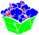 | พัฟข้าว | 45 | 4 | ทำพัฟข้าว กินเพื่อเพิ่มความมุ่งมั่น · ปลด: พัฟข้าว |
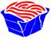 | บะหมี่ผัด | 55 | 4 | ทำบะหมี่ผัด กินเพื่อเพิ่มความเฉลียวฉลาด เติมซอสเพื่อเพิ่มเอฟเฟ็กต์ · ปลด: บะหมี่ผัด |
| บะหมี่ผัดปรุงแต่ง | 60 | 5 | ทำบะหมี่ผัดพร้อมของแต่งจาน กินเพื่อเพิ่มความเฉลียวฉลาด เติมซอสและของแต่งจานเพื่อเพิ่มเอฟเฟ็กต์ · ปลด: บะหมี่ผัดปรุงแต่ง | |
| เคี่ยว | 15 | 1 | เคี่ยวอาหารเพื่อเพิ่มเวลาเอฟเฟ็กต์ของวัตถุดิบ · ปลด: เคี่ยว | |
| ต้ม | 20 | 2 | ต้มอาหารเพื่อเพิ่มเวลาเอฟเฟ็กต์ของวัตถุดิบ อาหารจะร้อนและง่ายต่อการย่อย · ปลด: ต้ม | |
| นึ่ง | 25 | 2 | นึ่งอาหารเพื่อเพิ่มเวลาเอฟเฟ็กต์ของวัตถุดิบ อาหารจะร้อนจัด · ปลด: นึ่ง | |
| เนื้อสัตว์ต้ม | 30 | 3 | ทำเนื้อต้ม กินเพื่อเพิ่มพละกำลัง · ปลด: เนื้อสัตว์ต้ม | |
| สตู | 35 | 3 | ทำสตูว์ กินเพื่อเพิ่มการรับรู้ · ปลด: สตู | |
| ข้าวสวย | 40 | 3 | หุงข้าว กินเพื่อเพิ่มพลังงานสูงสุด · ปลด: ข้าวสวย | |
| น้ำซุป | 45 | 4 | ทำซุป กินเพื่อเพิ่มพละกำลัง ความทนทาน หรือความว่องไวโดยจะขึ้นอยู่กับวัตถุดิบที่ใช้ · ปลด: ทำซุป | |
| ต็อก | 50 | 4 | ทำเค้กข้าว กินเพื่อเพิ่มพลังงานสูงสุด · ปลด: ต็อก | |
| สตูกรุบกรอบ | 55 | 4 | ทำสตูว์เนื้อก้อน กินเพื่อเพิ่มพละกำลัง เติมของแต่งจานเพื่อเพิ่มเอฟเฟ็กต์ · ปลด: สตูกรุบกรอบ | |
| บะหมี่ | 60 | 5 | ทำก๋วยเตี๋ยว กินเพื่อเพิ่มความเฉลียวฉลาด สามารถรับเอฟเฟ็กต์เพิ่มได้ โดยจะขึ้นอยู่กับประเภทน้ำซุปที่ใช้ · ปลด: บะหมี่ | |
| ถนอมอาหาร | ||||
| รมควัน | 10 | 1 | รมควันอาหารเพื่อยืดอายุการเก็บรักษา แต่จะสูญเสียเอฟเฟ็กต์ของวัตถุดิบบางอย่างไป · ปลด: รมควัน | |
| อาหารตากแห้ง | 20 | 2 | ตากอาหารให้แห้งเพื่อยืดอายุการเก็บรักษา แต่จะสูญเสียเอฟเฟ็กต์ของวัตถุดิบไปและอาหารจะกลายเป็นอาหารแห้ง · ปลด: อาหารตากแห้ง | |
| อาหารรมควันปรุงรส | 25 | 2 | รมควันและเติมกลิ่นรสให้อาหารเพื่อยืดอายุการเก็บรักษา แต่เอฟเฟ็กต์ของวัตถุดิบจะลดลงไปเล็กน้อย · ปลด: อาหารรมควันปรุงรส | |
| ของดอง | 30 | 3 | ดองเกลืออาหารเพื่อถนอมอาหาร แต่เอฟเฟ็กต์ของวัตถุดิบจะลดลงไปเล็กน้อย · ปลด: ของดอง | |
| ตากอาหารปรุงรสให้แห้ง | 35 | 3 | ทำอาหารแห้งแบบเติมกลิ่นรส ยืดอายุการเก็บรักษา แต่เอฟเฟ็กต์ของวัตถุดิบจะลดลงไปเล็กน้อย · ปลด: ตากอาหารปรุงรสให้แห้ง | |
| ไส้กรอก | 40 | 3 | ทำไส้กรอก ยืดอายุการเก็บรักษา แต่เอฟเฟ็กต์ของวัตถุดิบจะลดลงไปเล็กน้อย กินเพื่อเพิ่มพละกำลัง · ปลด: ไส้กรอก | |
| เครื่องเทศและของดอง | 45 | 4 | ดองเกลือและเติมกลิ่นรสให้อาหารเพื่อถนอมอาหาร แต่เอฟเฟ็กต์ของวัตถุดิบจะลดลงไปเล็กน้อย · ปลด: เครื่องเทศและของดอง | |
| อาหารกระป๋องแบบทำเอง | 50 | 4 | ทำอาหารกระป๋องแบบทำเอง ยืดอายุการเก็บรักษาได้อย่างมาก แต่เอฟเฟ็กต์ของวัตถุดิบจะลดลงไปเล็กน้อย · ปลด: อาหารกระป๋องแบบทำเอง | |
| ไส้กรอกพิเศษ | 55 | 4 | ทำไส้กรอกพิเศษ ยืดอายุการเก็บรักษา แต่เอฟเฟ็กต์ของวัตถุดิบจะลดลงไปเล็กน้อย กินเพื่อเพิ่มพละกำลัง · ปลด: ไส้กรอกพิเศษ | |
| อาหารกระป๋องแบบมาตรฐาน | 60 | 5 | ทำอาหารกระป๋องแบบมาตรฐาน ยืดอายุการเก็บรักษาได้อย่างมาก แต่เอฟเฟ็กต์ของวัตถุดิบจะลดลงไปเล็กน้อย · ปลด: อาหารกระป๋องแบบมาตรฐาน | |
| แปรรูปอาหาร | ||||
| โจ๊กโปรโต | 20 | 1 | ทำอาหารสัตว์พื้นฐานสำหรับสัตว์กินพืชจากผลไม้ ผัก และใบไม้ · ปลด: โจ๊กโปรโต | |
| อาหารจากเนื้อสัตว์ | 25 | 1 | ทำอาหารสัตว์พื้นฐานสำหรับสัตว์กินเนื้อจากเนื้อ ปลา ธัญพืช และผัก · ปลด: อาหารจากเนื้อสัตว์ | |
| อาหารของสัตว์กินพืช | 30 | 2 | ทำอาหารสำหรับสัตว์กินพืชจากผลไม้ ผัก และใบไม้ · ปลด: อาหารของสัตว์กินพืช | |
| อาหารของสัตว์กินเนื้อ | 35 | 2 | ทำอาหารสำหรับสัตว์กินเนื้อจากเนื้อ ปลา ธัญพืช และผัก · ปลด: อาหารของสัตว์กินเนื้อ | |
| อาหารสำหรับสัตว์กินพืช/กินเนื้อโดยเฉพาะ | 50 | 4 | ทำอาหารสัตว์เฉพาะทางเพื่อส่งเสริมการเจริญเติบโตของสัตว์กินพืชและสัตว์กินเนื้อ · ปลด: อาหารสำหรับสัตว์กินพืชแบบพิเศษ, อาหารสำหรับสัตว์กินเนื้อแบบพิเศษ | |
| น้ำส้มสายชู | 40 | 3 | ใช้ยีสต์ทำน้ำส้มสายชู · ปลด: น้ำส้มสายชู | |
| ใบชาหมัก | 45 | 4 | ทำใบชาสีแดงโดยการหมักใบชา · ปลด: ใบชาหมัก | |
| ไวน์ผลไม้ | 50 | 4 | ทำไวน์ผลไม้ ดื่มเพื่อเพิ่มความคล่องแคล่วและความสามารถพิเศษ · ปลด: ไวน์ผลไม้ | |
| ชีสบ่ม | 60 | 5 | ทำชีสบ่ม กินเพื่อเพิ่มการรับรู้ ใช้เป็นของโรยหน้าหรือแต่งจานเพื่อเพิ่มความสามารถในการเก็บรวบรวมและการแล่เนื้อ · ปลด: ชีสบ่ม | |
| เกี๊ยวเนื้อสัตว์ | 20 | 2 | ทำเกี๊ยวเนื้อ กินทันทีเพื่อเพิ่มพละกำลัง แต่ถ้าทำให้สุกจะเพิ่มพลังงานได้มากขึ้น · ปลด: เกี๊ยวเนื้อสัตว์ | |
| เกลือ น้ำตาล | 25 | 2 | ผลิตเกลือและน้ำตาลเพื่อใช้ปรุงรส ปรุงด้วยเกลือเพื่อเพิ่มพละกำลังและการรับรู้ ปรุงด้วยน้ำตาลเพื่อเพิ่มความมุ่งมั่น การรับรู้ และความสามารถพิเศษ · ปลด: เกลือ, น้ำตาล | |
| บดธัญพืช | 30 | 3 | บดธัญพืชเป็นแป้ง · ปลด: บดธัญพืช | |
| น้ำผลไม้ | 35 | 3 | คั้นน้ำผลไม้ วัตถุดิบต่างชนิดกันจะให้เอฟเฟ็กต์ต่างกัน · ปลด: น้ำผลไม้ | |
| ชาคั่ว | 35 | 3 | ทำใบชาเขียวจากใบของต้นชา · ปลด: ชาคั่ว | |
| ปลาดิบ | 40 | 3 | หั่นซาชิมิสามชิ้นจากเนื้อสัตว์หนึ่งชิ้น · ปลด: ปลาดิบ | |
| บดกาแฟ | 60 | 5 | บดเมล็ดกาแฟให้เป็นผงกาแฟบด · ปลด: บดกาแฟ | |
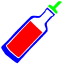 | น้ำมันงา | 30 | 3 | ทำซอสน้ำมันจากน้ำมัน ปรุงด้วยสิ่งนี้เพื่อเพิ่มความมุ่งมั่น · ปลด: น้ำมันงา |
| ซอสผลไม้ / ผัก | 45 | 4 | ทำซอสจากผลไม้หรือน้ำผัก ปรุงด้วยซอสผลไม้เพื่อเพิ่มความสามารถพิเศษ ปรุงด้วยซอสผักเพื่อเพิ่มความคล่องแคล่ว · ปลด: ซอสผลไม้ / ผัก | |
| ซอสครีม | 60 | 5 | ทำซอสจากครีม ปรุงด้วยสิ่งนี้เพื่อเพิ่มการรับรู้ · ปลด: ซอสครีม | |
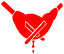 | สกัดน้ำมันธัญพืช | 30 | 3 | สกัดน้ำมันจากธัญพืช ใช้เป็นวัตถุดิบในหลาย ๆ สูตรอาหาร · ปลด: สกัดธัญพืช |
| สกัดน้ำมันผลไม้ | 40 | 3 | สกัดน้ำมันจากผลไม้ ใช้เป็นวัตถุดิบในหลาย ๆ สูตรอาหาร · ปลด: คั้นน้ำมัน | |
| ยีสต์ที่บ่มเชื้อ | 30 | 3 | เพาะยีสต์เพื่อทำขนมปัง · ปลด: ยีสต์ที่บ่มเชื้อ | |
| ราที่บ่มเชื้อ | 50 | 4 | เพาะเห็ดราสำหรับผลิตชีส ไวน์ผลไม้ และอื่นๆ · ปลด: ราที่บ่มเชื้อ | |
| ยา | ||||
| สารย้อมสีจากถ่าน | 15 | 1 | ทำสีย้อมจากถ่านเพื่อใช้เป็นสารคงสภาพสีบนโต๊ะทำงานย้อม ใช้เพื่อย้อมสีเสื้อผ้า · ปลด: สารย้อมสีจากถ่าน | |
| สีย้อมผสมสองสี | 15 | 1 | ทำสีย้อมใหม่โดยการรวมสีย้อมสองสีเข้าด้วยกันบนโต๊ะทำงานย้อม · ปลด: สีย้อมผสมสองสี | |
| สารฟอกจากเปลือกไข่ | 15 | 1 | ทำสารฟอกสีจากเปลือกไข่บนโต๊ะทำงานย้อม · ปลด: สารฟอกจากเปลือกไข่ | |
| สารย้อมสีจากสารส้ม | 45 | 4 | ทำสีย้อมจากสารส้มเพื่อใช้เป็นสารคงสภาพสีบนโต๊ะทำงานย้อม · ปลด: สารย้อมสีจากสารส้ม | |
| สีย้อมผสมสามสี | 45 | 4 | ทำสีย้อมใหม่โดยการรวมสีย้อมสามสีเข้าด้วยกันบนโต๊ะทำงานย้อม · ปลด: สีย้อมผสมสามสี | |
| สารฟอกจากสารส้ม | 45 | 4 | ทำสารฟอกสีจากสารส้มบนโต๊ะทำงานย้อม · ปลด: สารฟอกจากสารส้ม | |
| ชาสมุนไพร | 20 | 2 | ทำชาสมุนไพร ใช้เพื่อฟื้นฟูสุขภาพ · ปลด: ชาสมุนไพร | |
| ยาเม็ดปรุงเอง | 40 | 3 | ปรุงยาทำเอง ใช้เพื่อฟื้นฟูสุขภาพได้มากกว่าชาสมุนไพร · ปลด: ยาเม็ดปรุงเอง | |
| ยาเม็ดทั่วไป | 55 | 4 | ปรุงยาธรรมดา ใช้เพื่อฟื้นฟูสุขภาพได้มากกว่ายาทำเอง · ปลด: ยาเม็ดทั่วไป | |
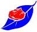 | ยาสำหรับสัตว์ | 15 | 1 | ทำยาเพื่อรักษาสัตว์ที่ไม่ใช่สัตว์ต่อสู้ · ปลด: ยาสำหรับสัตว์ |
| ยาเสริมภูมิคุ้นกันที่ผลิตจากพืช | 30 | 3 | ผลิตยาเสริมภูมิคุ้มกันจากพืช เพื่อป้องกันเอฟเฟ็กต์ของสถานะด้านลบหลาย ๆ ประเภท · ปลด: ยาเสริมภูมิคุ้นกันที่ผลิตจากพืช | |
| ยาเสริมภูมิคุ้นกันที่ผลิตจากแมลง | 45 | 4 | ผลิตยาเสริมภูมิคุ้มกันจากส่วนผสมอาหารประเภทแมลง เพื่อป้องกันเอฟเฟ็กต์ของสถานะด้านลบหลาย ๆ ประเภท · ปลด: ยาเสริมภูมิคุ้นกันที่ผลิตจากแมลง | |
| ยาเสริมภูมิคุ้นกันที่ผลิตจากถุงพิษ | 45 | 4 | ผลิตยาเสริมภูมิคุ้มกันจากถุงพิษ เพื่อป้องกันเอฟเฟ็กต์ของสถานะด้านลบหลาย ๆ ประเภท · ปลด: ยาเสริมภูมิคุ้นกันที่ผลิตจากถุงพิษ | |
| พื้นฐานการทำอาหาร | ||||
| พื้นฐานการทำอาหาร I | 20 | 2 | เพิ่มอัตราความสำเร็จของการทำอาหาร | |
| พื้นฐานการทำอาหาร II | 30 | 3 | เพิ่มอัตราความสำเร็จของการทำอาหาร | |
| พื้นฐานการทำอาหาร III | 40 | 3 | เพิ่มอัตราความสำเร็จของการทำอาหาร | |
| พื้นฐานการทำอาหาร IV | 50 | 4 | เพิ่มอัตราความสำเร็จของการทำอาหาร | |
| พื้นฐานการทำอาหาร V | 60 | 5 | เพิ่มอัตราความสำเร็จของการทำอาหาร | |
| อาหารประจำภูมิภาค | ||||
| สลัด | 30 | 3 | ทำสลัด กินเพื่อเพิ่มความคล่องแคล่ว · ปลด: สลัด | |
| แซนด์วิช | 45 | 4 | ทำแซนด์วิช กินเพื่อเพิ่มความคล่องแคล่วและความมุ่งมั่น · ปลด: แซนด์วิช | |
| แฮมเบอร์เกอร์ | 60 | 5 | ทำแฮมเบอร์เกอร์ กินเพื่อเพิ่มความคล่องแคล่วและความมุ่งมั่น เติมของโรยหน้าเพื่อเพิ่มเอฟเฟ็กต์ · ปลด: แฮมเบอร์เกอร์ | |
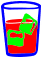 | เครื่องดื่มผสมน้ำแข็ง | 50 | 4 | ทำเครื่องดื่มเย็น ดื่มเพื่อลดความเหนื่อยล้าในพื้นที่เขตร้อน · ปลด: เครื่องดื่มผสมน้ำแข็ง |
| น้ำแข็งใส | 55 | 4 | ทำน้ำแข็งไส กินเพื่อลดความเหนื่อยล้าในพื้นที่ร้อน · ปลด: น้ำแข็งใส | |
| ซูชิ | 40 | 3 | ทำซูชิ กินเพื่อเพิ่มความว่องไวและความทนทาน · ปลด: ซูชิ | |
| ต๊อกโบกี | 50 | 4 | ทำต๊อกป๊อกกี กินเพื่อเพิ่มความทนทาน เติมซอสเพื่อเพิ่มเอฟเฟ็กต์ · ปลด: ต๊อกโบกี | |
| การอบ / นม | ||||
| ขนมปัง | 30 | 3 | ทำขนมปัง กินเพื่อเพิ่มพลังงานสูงสุด · ปลด: ขนมปัง | |
| ขนมปังยัดไส้ | 40 | 3 | ทำขนมปังยัดไส้ กินเพื่อเพิ่มความมุ่งมั่น ใส่ไส้เพื่อเพิ่มเอฟเฟ็กต์ · ปลด: ขนมปังยัดไส้ | |
| เค้ก | 50 | 4 | ทำเค้ก กินเพื่อเพิ่มความมุ่งมั่นและการรับรู้ · ปลด: เค้ก | |
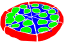 | พิซซ่า | 55 | 4 | ทำพิซซ่า กินเพื่อเพิ่มความมุ่งมั่น เติมของโรยหน้าเพื่อเพิ่มเอฟเฟ็กต์ · ปลด: พิซซ่า |
| เค้กครีม | 60 | 5 | ทำเค้กครีม กินเพื่อเพิ่มความมุ่งมั่นและการรับรู้ เติมผลไม้เพื่อเพิ่มเอฟเฟ็กต์ · ปลด: เค้กครีม | |
| แป้งขนมปัง | 30 | 3 | ทำแป้งขนมปัง · ปลด: แป้งขนมปัง | |
| แป้งเค้ก | 50 | 4 | ทำแป้งเค้ก · ปลด: แป้งเค้ก | |
| แป้งบะหมี่ | 55 | 4 | ทำแป้งก๋วยเตี๋ยว · ปลด: แป้งบะหมี่ | |
| เนย | 50 | 4 | ทำเนยจากนม ใช้เป็นวัตถุดิบทำอาหาร กินเพื่อเพิ่มการรับรู้ · ปลด: เนย | |
| ชีส | 55 | 4 | ทำชีสจากนม ใช้เป็นของโรยหน้าหรือแต่งจานเพื่อเพิ่มความสามารถในการแล่เนื้อ กินเพื่อเพิ่มการรับรู้ · ปลด: ชีส | |
| ครีม | 60 | 5 | ทำครีมจากนม ใช้เป็นวัตถุดิบทำอาหาร กินเพื่อเพิ่มการรับรู้ · ปลด: ครีม |
อาวุธ/เครื่องมือ
| สกิล | หมวด Lv | แต้ม | ผล / ปลด | |
|---|---|---|---|---|
| เครื่องมือ | ||||
| ฉมวกไม้ | 3 | 1 | ทำฉมวกไม้ ใช้เพื่อจับปลา · ปลด: ฉมวกไม้ | |
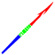 | ฉมวกกระดูก | 25 | 3 | ทำฉมวกกระดูก ใช้เพื่อจับปลา (เลเวล 35 ขึ้นไป) · ปลด: ฉมวกกระดูก |
| ฉมวกโลหะ | 45 | 5 | ทำฉมวกโลหะ ใช้เพื่อจับปลา (เลเวล 55 ขึ้นไป) · ปลด: ฉมวกโลหะ | |
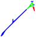 | จอบหิน | 10 | 2 | ทำจอบหิน ใช้เพื่อเตรียมที่ดินขนาดเล็ก · ปลด: จอบหิน |
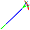 | จอบกระดูก | 25 | 3 | ทำจอบกระดูกและใบจอบกระดูก ใช้เพื่อเตรียมที่ดิน · ปลด: จอบกระดูก, ใบมีดจอบกระดูก |
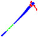 | จอบโลหะ | 45 | 5 | ทำจอบโลหะและใบจอบโลหะ ใช้เพื่อเตรียมที่ดิน · ปลด: จอบโลหะ, ใบมีดจอบโลหะ |
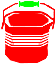 | ถังโลหะ | 55 | 5 | ทำถังจากโลหะ ใช้เพื่อใส่น้ำหรือลาวา · ปลด: ถังโลหะ |
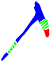 | อีเต้อหิน | 10 | 2 | ทำอีเต้อหิน ใช้เพื่อขุดแร่ธาตุ · ปลด: อีเต้อหิน |
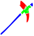 | อีเต้อกระดูก | 25 | 3 | ทำอีเต้อกระดูกและหัวอีเต้อกระดูก ใช้เพื่อขุดแร่ธาตุ (เลเวล 35 ขึ้นไป) · ปลด: อีเต้อกระดูก, หัวอีเต้อกระดูก |
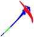 | อีเต้อโลหะ | 45 | 5 | ทำอีเต้อโลหะและหัวอีเต้อโลหะ ใช้เพื่อขุดแร่ธาตุ (เลเวล 55 ขึ้นไป) · ปลด: อีเต้อโลหะ, หัวอีเต้อโลหะ |
| เครื่องมือซ่อมเครื่องมือยอดนิยม | 15 | 2 | สร้างเครื่องมือซ่อมแบบประหยัด (ใช้งานได้ 30 ครั้ง) ที่สามารถใช้ซ่อมแซมอาวุธและเครื่องมือได้ · ปลด: เครื่องมือซ่อมเครื่องมือยอดนิยม | |
| เครื่องมือซ่อมเครื่องมืออเนกประสงค์ | 35 | 4 | สร้างเครื่องมือซ่อมแบบมาตรฐาน(ใช้งานได้ 90 ครั้ง) ที่สามารถใช้ซ่อมแซมอาวุธและเครื่องมือได้ · ปลด: เครื่องมือซ่อมเครื่องมืออเนกประสงค์ | |
| เครื่องมือซ่อมเครื่องมือคุณภาพ | 55 | 5 | สร้างเครื่องมือซ่อมแบบมีคุณภาพ (ใช้งานได้ 150 ครั้ง) ที่สามารถใช้ซ่อมแซมอาวุธและเครื่องมือได้ · ปลด: เครื่องมือซ่อมเครื่องมือคุณภาพ | |
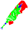 | เลื่อยหิน | 10 | 2 | สร้างเลื่อยหินและใบเลื่อยหิน ใช้เพื่อเก็บไม้และแปรรูปวัสดุ · ปลด: เลื่อยหิน, ใบมีดเลื่อยหิน |
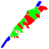 | เลื่อยกระดูก | 25 | 3 | สร้างเลื่อยกระดูกและใบเลื่อยกระดูก ใช้เพื่อเก็บไม้ (เลเวล 35 ขึ้นไป) และแปรรูปวัสดุ · ปลด: เลื่อยกระดูก, ใบมีดเลื่อยกระดูก |
| เลื่อยโลหะ | 45 | 5 | สร้างเลื่อยโลหะและใบเลื่อยโลหะ ใช้เพื่อเก็บไม้ (เลเวล 55 ขึ้นไป) และแปรรูปวัสดุ · ปลด: เลื่อยโลหะ, ใบมีดเลื่อยโลหะ | |
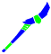 | พลั่วไม้ | 10 | 2 | สร้างพลั่วไม้ ใช้เพื่อเก็บโคลน · ปลด: พลั่วไม้ |
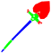 | พลั่วกระดูก | 25 | 3 | ทำพลั่วกระดูกและใบพลั่วกระดูก ใช้เพื่อเก็บโคลน (เลเวล 35 ขึ้นไป) · ปลด: พลั่วกระดูก, ใบมีดพลั่วกระดูก |
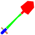 | พลั่วโลหะ | 45 | 5 | ทำพลั่วโลหะและใบพลั่วโลหะ ใช้เพื่อเก็บโคลน (เลเวล 55 ขึ้นไป) · ปลด: พลั่วโลหะ, ใบมีดพลั่วโลหะ |
| พลั่วหรือจอบใช้งานชั่วคราว | 1 | 1 | ทำพลั่วและจอบหินแบบชั่วคราว ใช้พลั่วเพื่อเก็บโคลนและใช้จอบเพื่อเตรียมที่ดิน · ปลด: พลั่วชั่วคราว, จอบหินชั่วคราว | |
| ขวาน | ||||
 | ขวานมือเดียวที่ทำขึ้นเอง | 2 | 0 | ทำขวานมือเดียวแบบทำเองจากใบมีด สายรัด และแท่งไม้ · ปลด: ขวานมือเดียวที่ทำขึ้นเอง |
| ใบมีดกระดูก | 15 | 0 | ทำใบมีดกระดูกที่มีพลังโจมตีมากกว่าใบมีดหิน · ปลด: ใบมีดกระดูก | |
| ขวานมือเดียวแบบมาตรฐาน | 20 | 3 | ทำขวานมือเดียวแบบมาตรฐานจากหัวขวาน เชือก และมือจับ ทำหัวขวานหินที่มีพลังโจมตีมากกว่าใบมีดกระดูก · ปลด: ขวานมือเดียวแบบมาตรฐาน, หัวขวานหิน | |
| หัวขวานกระดูก | 30 | 4 | ทำหัวขวานกระดูกที่มีพลังโจมตีมากกว่าหัวขวานหิน · ปลด: หัวขวานกระดูก | |
| หัวขวานกระดูกโค้ง | 35 | 4 | ทำหัวขวานกระดูกโค้งที่มีพลังโจมตีมากกว่าหัวขวานกระดูก · ปลด: หัวขวานกระดูกโค้ง | |
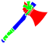 | ขวานมือเดียวที่ได้รับการปรับปรุง | 40 | 4 | ทำขวานมือเดียวคุณภาพดีจากหัวขวาน โคนขวาน และมือจับคุณภาพดี ทำหัวขวานสงครามโลหะที่มีพลังโจมตีมากกว่าหัวขวานกระดูกโค้ง · ปลด: ขวานมือเดียวที่ได้รับการปรับปรุง, หัวขวานสงครามโลหะ |
| หัวขวานเลื่อยกระดูก | 50 | 5 | ทำหัวขวานเลื่อยกระดูกที่มีพลังโจมตีมากกว่าหัวขวานสงครามโลหะ · ปลด: หัวขวานเลื่อยกระดูก | |
| หัวขวานตัดเข้าเหลี่ยมโลหะ | 55 | 5 | ทำหัวขวานโลหะเข้ามุมที่มีพลังโจมตีมากกว่าหัวขวานเลื่อยกระดูก · ปลด: หัวขวานตัดเข้าเหลี่ยมโลหะ | |
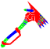 | ขวานมือเดียวระดับโปร | 60 | 6 | ทำขวานมือเดียวระดับโปรจากหัวขวาน โคนขวาน และด้ามจับ ทำหัวขวานนกหัวขวานเหล็กที่มีพลังโจมตีมากกว่าหัวขวานโลหะเข้ามุม · ปลด: ขวานมือเดียวระดับโปร, หัวขวานนกหัวขวานเหล็ก |
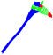 | ขวานสองมือที่ทำขึ้นเอง | 10 | 2 | ทำขวานสองมือแบบทำเองจากใบมีดใหญ่ สายรัด และแท่งไม้ · ปลด: ขวานสองมือที่ทำขึ้นเอง, ใบมีดหินขนาดใหญ่ |
| ใบมีดกระดูกขนาดใหญ่ | 15 | 0 | ทำใบมีดกระดูกขนาดใหญ่ที่มีพลังโจมตีมากกว่าใบมีดหินขนาดใหญ่ · ปลด: ใบมีดกระดูกขนาดใหญ่ | |
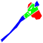 | ขวานสองมือแบบมาตรฐาน | 20 | 3 | ทำขวานสองมือวแบบมาตรฐานจากหัวขวานใหญ่ เชือก และมือจับ ทำหัวขวานหินขนาดใหญ่ที่มีพลังโจมตีมากกว่าใบมีดกระดูกขนาดใหญ่ · ปลด: ขวานสองมือแบบมาตรฐาน, หัวขวานหินขนาดใหญ่ |
| หัวขวานกระดูกขนาดใหญ่ | 30 | 4 | ทำหัวขวานกระดูกขนาดใหญ่ที่มีพลังโจมตีมากกว่าหัวขวานหินขนาดใหญ่ · ปลด: หัวขวานกระดูกขนาดใหญ่ | |
| หัวขวานกระดูกโค้งขนาดใหญ่ | 35 | 4 | ทำหัวขวานกระดูกโค้งขนาดใหญ่ที่มีพลังโจมตีมากกว่าหัวขวานกระดูกขนาดใหญ่ · ปลด: หัวขวานกระดูกโค้งขนาดใหญ่ | |
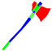 | ขวานสองมือที่ได้รับการปรับปรุง | 40 | 4 | ทำขวานสองมือคุณภาพดีจากหัวขวานขนาดใหญ่ โคนขวาน และมือจับแบบยาวคุณภาพดี ทำหัวขวานสงครามโลหะขนาดใหญ่ที่มีพลังโจมตีมากกว่าหัวขวานกระดูกโค้งขนาดใหญ่ · ปลด: ขวานสองมือที่ได้รับการปรับปรุง, หัวขวานสงครามโลหะชนาดใหญ่ |
| หัวขวานเลื่อยกระดูกขนาดใหญ่ | 50 | 5 | ทำหัวขวานเลื่อยกระดูกขนาดใหญ่ที่มีพลังโจมตีมากกว่าหัวขวานสงครามโลหะขนาดใหญ่ · ปลด: หัวขวานเลื่อยกระดูกขนาดใหญ่ | |
| หัวขวานเข้าเหลี่ยมโลหะขนาดใหญ่ | 55 | 5 | ทำหัวขวานโลหะเข้ามุมขนาดใหญ่ที่มีพลังโจมตีมากกว่าหัวขวานเลื่อยกระดูกขนาดใหญ่ · ปลด: หัวขวานเข้าเหลี่ยมโลหะขนาดใหญ่ | |
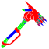 | ขวานสองมือระดับโปร | 60 | 6 | ทำขวานสองมือระดับโปรจากหัวขวานขนาดใหญ่ โคนขวาน และด้ามจับแบบยาว ทำหัวขวานนกหัวขวานเหล็กขนาดใหญ่ที่มีพลังโจมตีมากกว่าหัวขวานโลหะเข้ามุมขนาดใหญ่ · ปลด: ขวานสองมือระดับโปร, หัวขวานเหล็กรูปนกขนาดใหญ่ |
| ขวานงานหิน | 25 | 0 | ทำขวานงานหิน ใช้เพื่อเก็บทรัพยากรธรรมชาติ (เลเวล 35 ขึ้นไป) และประดิษฐ์เครื่องมือ · ปลด: ขวานงานหิน, ใบมีดงานหิน | |
| ขวานงานกระดูก | 45 | 5 | ทำขวานงานกระดูก ใช้เพื่อเก็บทรัพยากรธรรมชาติ (เลเวล 55 ขึ้นไป) และประดิษฐ์เครื่องมือ · ปลด: ขวานงานกระดูก, ใบมีดงานกระดูก | |
| อาวุธประเภททุบ | ||||
| กระบองไม้ | 1 | 0 | ทำกระบองไม้จากกิ่งไม้ · ปลด: กระบองไม้ | |
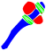 | ค้อนมือเดียวที่ทำขึ้นเอง | 3 | 0 | ทำค้อนมือเดียวแบบทำเองจากก้อนโลหะ สายรัด และแท่งไม้ · ปลด: ค้อนมือเดียวที่ทำขึ้นเอง |
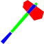 | ค้อนมือเดียวแบบมาตรฐาน | 20 | 3 | ทำค้อนมือเดียวแบบมาตรฐานจากหัวค้อน เชือก และมือจับ ทำหัวค้อนหิน · ปลด: ค้อนมือเดียวแบบมาตรฐาน, หัวค้อนหิน |
| หัวค้อนกระดูก | 30 | 4 | ทำหัวค้อนกระดูกที่มีพลังโจมตีมากกว่าหัวค้อนหิน · ปลด: หัวค้อนกระดูก | |
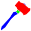 | ค้อนมือเดียวที่ได้รับการปรับปรุง | 40 | 4 | ทำค้อนมือเดียวคุณภาพดีจากหัวค้อน โคนค้อน และมือจับคุณภาพดี ทำหัวค้อนโลหะที่มีพลังโจมตีมากกว่าหัวค้อนกระดูก · ปลด: ค้อนมือเดียวที่ได้รับการปรับปรุง, หัวค้อนโลหะ |
| หัวค้อนบดขยี้ศีรษะ | 50 | 5 | ทำหัวค้อนป่นกะโหลกที่มีพลังโจมตีมากกว่าหัวค้อนโลหะ · ปลด: หัวค้อนบดขยี้ศีรษะ | |
| หัวค้อนหนามแหลม | 55 | 5 | ทำหัวค้อนกระชากสันหลังที่มีพลังโจมตีมากกว่าหัวค้อนป่นกะโหลก · ปลด: หัวค้อนหนามแหลม | |
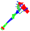 | ค้อนมือเดียวระดับโปร | 60 | 6 | ทำค้อนมือเดียวระดับโปรจากหัวค้อน โคนค้อน และด้ามจับ ทำหัวค้อนสำหรับคนขี่ม้าที่มีพลังโจมตีมากกว่าหัวค้อนกระชากสันหลัง · ปลด: ค้อนมือเดียวระดับโปร, หัวค้อนสำหรับคนขี่ม้า |
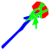 | ค้อนสองมือที่ทำขึ้นเอง | 10 | 2 | ทำค้อนสองมือแบบทำเองจากก้อนโลหะ สายรัด และแท่งไม้ · ปลด: ค้อนสองมือที่ทำขึ้นเอง |
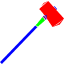 | ค้อนสองมือแบบมาตรฐาน | 20 | 3 | ทำค้อนสองมือแบบมาตรฐานจากหัวค้อนขนาดใหญ่ เชือก และมือจับ ทำหัวค้อนหินขนาดใหญ่ · ปลด: ค้อนสองมือแบบมาตรฐาน, หัวค้อนหินใหญ่ |
| หัวค้อนกระดูกใหญ่ | 30 | 4 | ทำหัวค้อนกระดูกขนาดใหญ่ที่มีพลังโจมตีมากกว่าหัวค้อนหินขนาดใหญ่ · ปลด: หัวค้อนกระดูกใหญ่ | |
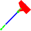 | ค้อนสองมือที่ได้รับการปรับปรุง | 40 | 4 | ทำค้อนสองมือคุณภาพดีจากหัวค้อนขนาดใหญ่ โคนค้อน และมือจับแบบยาวคุณภาพดี ทำหัวค้อนโลหะที่มีพลังโจมตีมากกว่าหัวค้อนกระดูกขนาดใหญ่ · ปลด: ค้อนสองมือที่ได้รับการปรับปรุง, หัวค้อนโลหะใหญ่ |
| หัวค้อนบดขยี้ขนาดใหญ่ | 50 | 5 | ทำหัวค้อนป่นกะโหลกขนาดใหญ่ที่มีพลังโจมตีมากกว่าหัวค้อนโลหะขนาดใหญ่ · ปลด: หัวค้อนบดขยี้ขนาดใหญ่ | |
| หัวค้อนหนามแหลมขนาดใหญ่ | 55 | 5 | ทำหัวค้อนกระชากสันหลังขนาดใหญ่ที่มีพลังโจมตีมากกว่าหัวค้อนป่นกะโหลกขนาดใหญ่ · ปลด: หัวค้อนหนามแหลมขนาดใหญ่ | |
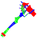 | ค้อนสองมือระดับโปร | 60 | 6 | ทำค้อนสองมือระดับโปรจากหัวค้อนขนาดใหญ่ โคนค้อน และด้ามจับแบบยาว ทำหัวค้อนสำหรับคนขี่ม้าขนาดใหญ่ที่มีพลังโจมตีมากกว่าหัวค้อนกระชากสันหลังขนาดใหญ่ · ปลด: ค้อนสองมือระดับโปร, หัวค้อนขนาดใหญ่สำหรับคนขี่ม้า |
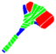 | ค้อนงานหิน | 25 | 0 | ทำค้อนงานหิน ใช้เพื่อเก็บทรัพยากรธรรมชาติ (เลเวล 35 ขึ้นไป) และสร้างสิ่งก่อสร้าง · ปลด: ค้อนงานหิน |
| ค้อนงานกระดูก | 45 | 5 | ทำค้อนงานกระดูก ใช้เพื่อเก็บทรัพยากรธรรมชาติ (เลเวล 55 ขึ้นไป) และสร้างสิ่งก่อสร้าง · ปลด: ค้อนงานกระดูก | |
| ปรับแต่งอาวุธ | ||||
| ตอกตะปู I | 25 | 3 | เพิ่มการโจมตีของอาวุธ เพิ่มประสิทธิภาพด้วยการสนับสนุนทางเทคนิคที่ศูนย์วิจัยส่วนบุคคล (เลเวล 60 ขึ้นไป) · ปลด: ตอกตะปู I | |
| การเพิ่มความแข็งแรงด้วยลาวา I | 60 | 3 | เพิ่มพลังการโจมตีและความรุนแรงของอาวุธ ปรับปรุงประสิทธิภาพด้วยการสนับสนุนทางเทคนิคที่ศูนย์วิจัยส่วนตัว (เลเวล 60 ขึ้นไป) · ปลด: การเพิ่มความแข็งแรงด้วยลาวา I | |
| สร้างส่วนประกอบ | ||||
| ด้ามจับ | 20 | 3 | ทำมือจับ ใช้เพื่อทำอาวุธมาตรฐาน · ปลด: ด้ามจับ | |
| ด้ามจับที่ได้รับการปรับปรุง | 40 | 4 | ทำมือจับคุณภาพดี ใช้เพื่อสร้างอาวุธคุณภาพดี · ปลด: ด้ามจับที่ได้รับการปรับปรุง, ด้ามจับแบบยาวที่ได้รับการปรับปรุง | |
| ด้าม | 60 | 6 | ทำด้าม ใช้เพื่อสร้างอาวุธระดับโปร · ปลด: ด้าม, ด้ามแบบยาว | |
| โคนมีด | 40 | 4 | ทำโคน ต้องใช้เพื่อสร้างอาวุธคุณภาพดีและอาวุธระดับโปร · ปลด: โคนมีด | |
| การสร้างเครื่องดนตรี | ||||
| กลอง Durango | 10 | 2 | ทำเครื่องเคาะ ใช้เครื่องดนตรีที่สร้างขึ้นมาเพื่อเล่นดนตรี · ปลด: กลอง Durango | |
| ชุดกลอง | 40 | 4 | ทำกลอง ใช้เครื่องดนตรีที่สร้างขึ้นมาเพื่อเล่นดนตรี · ปลด: ชุดกลอง | |
| เบส | 15 | 3 | ทำเบส ใช้เครื่องดนตรีที่สร้างขึ้นมาเพื่อเล่นดนตรี · ปลด: เบส | |
| tool_instrument_guitar | 30 | 4 | ทำกีตาร์ ใช้เครื่องดนตรีที่สร้างขึ้นมาเพื่อเล่นดนตรี | |
| แตร | 56 | 3 | ทำแตร ใช้เครื่องดนตรีที่สร้างขึ้นมาเพื่อเล่นดนตรี · ปลด: แตร | |
| ระนาด | 20 | 2 | ทำระนาด ใช้เครื่องดนตรีที่สร้างขึ้นมาเพื่อเล่นดนตรี · ปลด: ระนาด | |
| เครื่องซินทีไซเซอร์ | 35 | 3 | ทำเครื่องซินทีไซเซอร์ ใช้เครื่องดนตรีที่สร้างขึ้นมาเพื่อเล่นดนตรี · ปลด: เครื่องซินทีไซเซอร์ | |
| เปียโน | 50 | 4 | ทำเปียโน ใช้เครื่องดนตรีที่สร้างขึ้นมาเพื่อเล่นดนตรี · ปลด: เปียโน | |
| สร้างเครื่องมือการทำอาหาร | ||||
| เขียงไม้ | 30 | 4 | ทำเขียงไม้ ใช้สำหรับทำซูชิ แป้งขนมปัง แซนวิช ฯลฯ · ปลด: เขียงไม้ | |
| เขียงแก้ว | 50 | 5 | ทำเขียงแก้ว จำเป็นต้องใช้ในการทำแป้งเค้ก แป้งก๋วยเตี๋ยว แป้งพาย แฮมเบอร์เกอร์ ฯลฯ · ปลด: เขียงแก้ว | |
| จานหิน | 20 | 3 | ทำจานหิน ใช้เพื่อทำบาร์บีคิวจานหินและบาร์บีคิวจานหินปรุงรส · ปลด: จานหิน | |
| กระทะ | 40 | 4 | ทำกระทะทอด ใช้เพื่อผัดหรือทอดส่วนผสมอาหาร · ปลด: กระทะ | |
| ตะแกรงเหล็ก | 50 | 5 | ทำตะแกรงเหล็ก ใช้เพื่อทำอาหารย่างและอาหารย่างแบบปรุงรส · ปลด: ตะแกรงเหล็ก | |
| ครกหิน | 20 | 3 | ทำครกหิน ใช้เพื่อผสม บด หรือขยี้ส่วนผสม · ปลด: ครกหิน | |
| ครกดินเผา | 40 | 4 | ทำครกดินเผา ใช้เพื่อผสม บด หรือขยี้ส่วนผสม จำเป็นต้องใช้ในการทำไส้กรอก ยา บดกาแฟ และสกัดน้ำมัน · ปลด: ครกดินเผา | |
| ครกโลหะ | 60 | 6 | ทำครกโลหะ ใช้เพื่อผสม บด หรือป่นส่วนผสม จำเป็นต้องใช้สำหรับการทำยาที่มีคุณภาพและอื่น ๆ · ปลด: ครกโลหะ | |
| หม้อไม้ | 15 | 2 | ทำหม้อไม้ ใช้เพื่อเก็บน้ำ หรือเพื่อเคี่ยว ต้ม หรือนึ่งส่วนผสมอาหาร · ปลด: หม้อไม้ | |
| หม้อภาชนะดินเผา | 35 | 4 | ทำหม้อดินเผา ใช้เพื่อเก็บน้ำ หรือเพื่อเคี่ยว ต้ม หรือนึ่งส่วนผสมอาหาร จำเป็นต้องใช้ในการทำสตูว์ น้ำซุป หุงข้าว เค้กข้าว ยาเสริมภูมิคุ้มกัน ฯลฯ · ปลด: หม้อภาชนะดินเผา | |
| หม้อแก้ว | 55 | 5 | ทำหม้อแก้ว ใช้เพื่อเก็บน้ำ หรือเพื่อเคี่ยว ต้ม หรือนึ่งส่วนผสมอาหาร จำเป็นต้องใช้ในการทำก๋วยเตี๋ยว สตูว์เนื้อก้อน ฯลฯ · ปลด: หม้อแก้ว | |
| ฝึกการสร้าง | ||||
| สร้างอาวุธ I | 20 | 3 | ฝึกสร้างอาวุธเพื่อเพิ่มอัตราความสำเร็จของการทำงานที่เกี่ยวข้อง | |
| สร้างอาวุธ II | 25 | 3 | ฝึกสร้างอาวุธเพื่อเพิ่มอัตราความสำเร็จของการทำงานที่เกี่ยวข้อง | |
| สร้างอาวุธ III | 30 | 4 | ฝึกสร้างอาวุธเพื่อเพิ่มอัตราความสำเร็จของการทำงานที่เกี่ยวข้อง | |
| สร้างอาวุธ IV | 35 | 4 | ฝึกสร้างอาวุธเพื่อเพิ่มอัตราความสำเร็จของการทำงานที่เกี่ยวข้อง | |
| สร้างอาวุธ V | 40 | 4 | ฝึกสร้างอาวุธเพื่อเพิ่มอัตราความสำเร็จของการทำงานที่เกี่ยวข้อง | |
| หอก | ||||
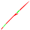 | หอกแบบมาตรฐาน | 20 | 3 | ทำหอกมาตรฐานจากหัวหอก เชือก และแท่งไม้ยาว ทำหัวหอกหิน · ปลด: หอกแบบมาตรฐาน, หัวหอกหิน |
| หัวหอกกระดูก | 30 | 4 | ทำหัวหอกกระดูกที่มีพลังโจมตีมากกว่าหัวหอกหิน · ปลด: หัวหอกกระดูก | |
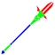 | หอกที่ได้รับการปรับปรุง | 40 | 4 | ทำหอกคุณภาพดีจากหัวหอก โคนหอก และด้ามหอก ทำหัวหอกโลหะที่มีพลังโจมตีมากกว่าหัวหอกหิน · ปลด: หอกที่ได้รับการปรับปรุง, หัวหอกโลหะ, ด้ามหอกไม้ |
| หัวหอกป่นกระดูก | 50 | 5 | ทำหัวหอกเศษกระดูกที่มีพลังโจมตีมากกว่าหัวหอกโลหะ · ปลด: หัวหอกป่นกระดูก | |
| หัวหอกเขาคู่ | 55 | 5 | ทำหัวหอกเขาคู่ที่มีพลังโจมตีมากกว่าหัวหอกเศษกระดูก · ปลด: หัวหอกเขาคู่ | |
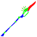 | หอกระดับโปร | 60 | 6 | ทำหอกระดับโปรจากหัวหอก โคนหอก และด้ามหอก ทำหัวหอกจะงอยเหล็กที่มีพลังโจมตีมากกว่าหัวหอกเขาคู่ · ปลด: หอกระดับโปร, หัวหอกจะงอยเหล็ก, ด้ามหอก |
| หอกไม้ไผ่ | 20 | 3 | ทำหอกไม้ไผ่จากไม้ไผ่และเชือก · ปลด: หอกไม้ไผ่ | |
| มีด | ||||
| ใบมีดหิน | 1 | 0 | ทำใบมีดหินจากก้อนกรวด ใช้เพื่อเก็บทรัพยากรธรรมชาติและทำการประดิษฐ์ · ปลด: ใบมีดหิน | |
| มีดมือเดียวที่ทำขึ้นเอง | 3 | 0 | ทำมีดมือเดียวแบบทำเองจากใบมีด สายรัด และแท่งไม้ · ปลด: มีดมือเดียวที่ทำขึ้นเอง | |
| ใบมีดกระดูก | 15 | 0 | ทำใบมีดกระดูกที่มีพลังโจมตีมากกว่าใบมีดหิน · ปลด: ใบมีดกระดูก | |
| มีดมือเดียวแบบมาตรฐาน | 20 | 3 | ทำมีดมือเดียวแบบมาตรฐานจากใบมีด เชือก และมือจับ ทำใบมีดหินที่มีพลังโจมตีมากกว่าใบมีดกระดูก · ปลด: มีดมือเดียวแบบมาตรฐาน, ใบมีดตัดหิน | |
| ใบมีดตัดกระดูก | 30 | 4 | ทำใบมีดกระดูกที่มีพลังโจมตีมากกว่าใบมีดหิน · ปลด: ใบมีดตัดกระดูก | |
| ใบมีดออบซิเดียน | 35 | 4 | ทำใบมีดออบซิเดียนที่มีพลังโจมตีมากกว่าใบมีดหิน · ปลด: ใบมีดออบซิเดียน | |
| มีดมือเดียวที่ได้รับการปรับปรุง | 40 | 4 | ทำมีดมือเดียวคุณภาพดีจากใบมีด โคนมีด และมือจับคุณภาพดี ทำใบมีดโลหะที่มีพลังโจมตีมากกว่าใบมีดออบซิเดียน · ปลด: มีดมือเดียวที่ได้รับการปรับปรุง, ใบมีดโลหะ | |
| ใบมีดตัดกระดูกเขี้ยว | 50 | 5 | ทำใบมีดเขี้ยวกระดูกที่มีพลังโจมตีมากกว่าใบมีดโลหะ · ปลด: ใบมีดตัดกระดูกเขี้ยว | |
| ใบมีดโกนขนาดยักษ์ | 55 | 5 | ทำใบมีดโกนยักษ์ที่มีพลังโจมตีมากกว่าใบมีดเขี้ยวกระดูก · ปลด: ใบมีดโกนขนาดยักษ์ | |
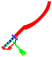 | มีดมือเดียวระดับโปร | 60 | 6 | ทำมีดมือเดียวระดับโปรจากใบมีด โคนมีด และด้ามจับ ทำใบมีดกระดูกโค้งที่มีพลังโจมตีมากกว่าใบมีดโกนยักษ์ · ปลด: มีดมือเดียวระดับโปร, ใบมีดตัดกระดูกโค้ง |
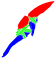 | มีดสองมือที่ทำขึ้นเอง | 10 | 2 | ทำมีดสองมือแบบทำเองจากใบมีดใหญ่ สายรัด และแท่งไม้ ทำใบมีดหินขนาดใหญ่ · ปลด: มีดสองมือที่ทำขึ้นเอง, ใบมีดหินขนาดใหญ่ |
| ใบมีดกระดูกขนาดใหญ่ | 15 | 0 | ทำใบมีดกระดูกขนาดใหญ่ที่มีพลังโจมตีมากกว่าใบมีดหินขนาดใหญ่ · ปลด: ใบมีดกระดูกขนาดใหญ่ | |
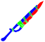 | มีดสองมือแบบมาตรฐาน | 20 | 3 | ทำมีดสองมือแบบมาตรฐานจากใบมีดใหญ่ เชือก และมือจับ ทำใบมีดหินขนาดใหญ่ที่มีพลังโจมตีมากกว่าใบมีดกระดูกขนาดใหญ่ · ปลด: มีดสองมือแบบมาตรฐาน, ใบมีดตัดหินใหญ่ |
| ใบมีดตัดกระดูกขนาดใหญ่ | 30 | 4 | ทำใบมีดกระดูกขนาดใหญ่ที่มีพลังโจมตีมากกว่าใบมีดหินขนาดใหญ่ · ปลด: ใบมีดตัดกระดูกขนาดใหญ่ | |
| ใบมีดออบซิเดียนขนาดใหญ่ | 35 | 4 | ทำใบมีดออบซิเดียนขนาดใหญ่ที่มีพลังโจมตีมากกว่าใบมีดกระดูกขนาดใหญ่ · ปลด: ใบมีดออบซิเดียนขนาดใหญ่ | |
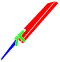 | มีดสองมือที่ได้รับการปรับปรุง | 40 | 4 | ทำมีดมือเดียวคุณภาพดีจากใบมีดขนาดใหญ่ โคนมีด และมือจับแบบยาวคุณภาพดี ทำใบมีดโลหะขนาดใหญ่ที่มีพลังโจมตีมากกว่าใบมีดออบซิเดียนขนาดใหญ่ · ปลด: มีดสองมือที่ได้รับการปรับปรุง, ใบมีดโลหะขนาดใหญ่ |
| ใบมีดตัดกระดูกเขี้ยวขนาดใหญ่ | 50 | 5 | ทำใบมีดเขี้ยวกระดูกขนาดใหญ่ที่มีพลังโจมตีมากกว่าใบมีดโลหะขนาดใหญ่ · ปลด: ใบมีดตัดกระดูกเขี้ยวขนาดใหญ่ | |
| ใบมีดโกนอันใหญ่ยักษ์ | 55 | 5 | ทำใบมีดโกนขนาดใหญ่ที่มีพลังโจมตีมากกว่าใบมีดเขี้ยวกระดูกขนาดใหญ่ · ปลด: ใบมีดโกนอันใหญ่ยักษ์ | |
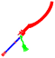 | มีดสองมือระดับโปร | 60 | 6 | ทำมีดมือเดียวระดับโปรจากใบมีดขนาดใหญ่ โคนมีด และด้ามจับแบบยาว ทำใบมีดกระดูกโค้งขนาดใหญ่ที่มีพลังโจมตีมากกว่าใบมีดโกนยักษ์ · ปลด: มีดสองมือระดับโปร, ใบมีดตัดกระดูกโค้งขนาดใหญ่ |
| มีดงานหิน | 25 | 0 | ทำมีดงานหิน ใช้เพื่อเก็บทรัพยากรธรรมชาติ (เลเวล 35 ขึ้นไป) และทำการประดิษฐ์ · ปลด: มีดงานหิน, ใบมีดงานหิน | |
| มีดงานกระดูก | 45 | 5 | ทำมีดงานกระดูก ใช้เพื่อเก็บทรัพยากรธรรมชาติ (เลเวล 55 ขึ้นไป) และทำการประดิษฐ์ · ปลด: มีดงานกระดูก, ใบมีดงานกระดูก | |
| ธนู | ||||
| คันธนูแบบมาตรฐาน | 20 | 3 | ทำธนูมาตรฐานจากปีกธนู เชือก และสายหนังยาว ทำปีกธนูไม้ · ปลด: คันธนูแบบมาตรฐาน, ปีกธนูไม้ | |
| ปีกธนูกระดูก | 30 | 4 | ทำปีกธนูกระดูกที่มีพลังโจมตีมากกว่าปีกธนูไม้ · ปลด: ปีกธนูกระดูก | |
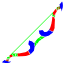 | คันธนูที่ได้รับการปรับปรุง | 40 | 4 | ทำคันธนูคุณภาพดีจากปีกธนู โคนธนู และสายธนู ทำปีกธนูไม้ผสมโลหะที่มีพลังโจมตีมากกว่าปีกธนูกระดูก · ปลด: คันธนูที่ได้รับการปรับปรุง, ปีกธนูไม้เนื้อแข็ง, สายธนู |
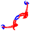 | ปีกธนูกะโหลก | 50 | 5 | ทำปีกธนูกระดูกที่มีพลังโจมตีมากกว่าปีกธนูไม้ผสมโลหะ · ปลด: ปีกธนูกะโหลก |
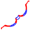 | ปีกธนูกระดูกนกนางนวล | 55 | 5 | ทำปีกธนูกระดูกนกนางนวล ซึ่งมีพลังโจมตีสูงกว่าปีกธนูกะโหลก · ปลด: ปีกธนูกระดูกนกนางนวล |
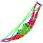 | คันธนูระดับโปร | 60 | 6 | ทำปีกธนูระดับโปรจากปีกธนู โคนธนู และสายธนูแบบทนทาน ทำปีกธนูสองชั้นที่มีพลังโจมตีมากกว่าปีกธนูกระดูกนกนางนวล · ปลด: คันธนูระดับโปร, ปีกธนูสองชั้น, สายธนูทนทาน |
| คันธนูไม้ที่ทำขึ้นเอง | 15 | 2 | ทำธนูไม้แบบทำเอง · ปลด: คันธนูไม้ที่ทำขึ้นเอง | |
| หน้าไม้ที่ได้รับการปรับปรุง | 40 | 4 | ทำหน้าไม้คุณภาพดีจากปีกหน้าไม้ โคนหน้าไม้ และสายธนู ทำปีกหน้าไม้ที่ทำจากไม้ · ปลด: หน้าไม้ที่ได้รับการปรับปรุง, หน้าไม้ไม้, ตัวหน้าไม้, สายธนู | |
| หน้าไม้กระดูก | 50 | 5 | ทำปีกหน้าไม้กระดูกที่มีพลังโจมตีมากกว่าปีกหน้าไม้ที่ทำจากไม้ · ปลด: หน้าไม้กระดูก | |
| ปีกหน้าไม้กระดูกนกนางนวล | 55 | 5 | ทำปีกหน้าไม้กระดูกนกนางนวลที่มีพลังโจมตีมากกว่าปีกหน้าไม้กระดูก · ปลด: ปีกหน้าไม้กระดูกนกนางนวล | |
| หน้าไม้ระดับโปร | 60 | 6 | ทำหน้าไม้ระดับโปรจากปีกหน้าไม้ โคนหน้าไม้ และสายธนูแบบทนทาน ทำปีกหน้าไม้คู่ · ปลด: หน้าไม้ระดับโปร, ปีกหน้าไม้สองชั้น, ตัวหน้าไม้แข็งแรง, สายธนูทนทาน |
ตัดเย็บ
| สกิล | หมวด Lv | แต้ม | ผล / ปลด | |
|---|---|---|---|---|
| สร้างกระเป๋า | ||||
 | กระเป๋าใบไม้ | 5 | 1 | ทอใบไม้เข้าด้วยกันเพื่อทำกระเป๋า ขยายคลังไอเทม · ปลด: กระเป๋าใบไม้ |
 | กระเป๋าผ้า | 20 | 3 | ทำกระเป๋าผ้า เก็บของได้มากกว่ากระเป๋าใบไม้ · ปลด: กระเป๋าผ้า |
| กระเป๋าใบเล็ก | 25 | 3 | ทำกระเป๋าขนาดเล็ก เก็บของได้มากกว่ากระเป๋าผ้า · ปลด: กระเป๋าใบเล็ก | |
| กระเป๋าสำรอง | 35 | 4 | ทำกระเป๋าสำรอง เก็บของได้มากกว่ากระเป๋าขนาดเล็ก · ปลด: กระเป๋าสำรอง | |
 | เป้ | 55 | 5 | ทำเป้สะพายหลัง เก็บของได้มากกว่ากระเป๋าสำรอง · ปลด: เป้ |
| กระติกน้ำชั่วคราว | 20 | 3 | ใช้ไม้ไผ่หรือมะพร้าวเพื่อทำกระติกน้ำชั่วคราว ใช้เพื่อเก็บน้ำ · ปลด: กระติกน้ำชั่วคราว | |
 | กระติกน้ำเขาสัตว์ | 35 | 4 | ทำกระติกน้ำเขาสัตว์ เก็บน้ำได้มากกว่ากระติกน้ำชั่วคราว · ปลด: กระติกน้ำเขาสัตว์ |
 | กระติกน้ำผ้า | 45 | 5 | ทำกระติกน้ำผ้า เก็บน้ำได้มากกว่ากระติกน้ำเขาสัตว์ · ปลด: กระติกน้ำผ้า |
| กระติกน้ำกระสอบ | 55 | 5 | ทำกระติกน้ำแบบถุง เก็บน้ำได้มากกว่ากระติกน้ำผ้า · ปลด: กระติกน้ำกระสอบ | |
| อุปกรณ์การล่า | ||||
 | ชุดต่อสู้ป้องกันความหนาว | 30 | 4 | ทำชุดต่อสู้ป้องกันความหนาวเย็นที่มีพลังป้องกันระดับสูง สวมใส่เพื่อเพิ่มการต้านทานความหนาวเย็น · ปลด: ชุดต่อสู้ป้องกันความหนาว, หมวกต่อสู้ป้องกันความหนาว |
 | ชุดสำหรับออกล่า | 35 | 4 | ทำชุดล่าสัตว์ที่มีพลังป้องกันสูงกว่าชุดต่อสู้แบบป้องกันความหนาวเย็น · ปลด: ชุดสำหรับออกล่า |
 | เกราะกระดูกทางการ | 40 | 4 | สร้างเกราะกระดูกทางการที่มีพลังป้องกันสูงกว่าชุดล่าสัตว์ · ปลด: เกราะกระดูกทางการ |
| ชุดการต่อสู้ระยะประชิด | 50 | 5 | ทำชุดต่อสู้ระยะประชิดและหมวกต่อสู้ระยะประชิดที่มีพลังป้องกันสูงกว่าการสวมเกราะกระดูกทางการ สวมสิ่งนี้เพื่อเพิ่มความสามารถในการหลบหลีก · ปลด: ชุดการต่อสู้ระยะประชิด, หมวกต่อสู้ระยะประชิด | |
 | ชุดเพชฌฆาต | 60 | 6 | สร้างชุดและหมวกเพชรฆาตที่มีพลังป้องกันสูงกว่าชุดต่อสู้ระยะประชิด สวมใส่เพื่อเพิ่มพลังโจมตี · ปลด: ชุดเพชฌฆาต, หมวกคลุมเพชฌฆาต |
| เครื่องประดับ | ||||
| ปลอกแขน | 10 | 2 | ทำปลอกแขน ผ้าที่มีรูปทรงต่างกันจะให้ปลอกแขนที่ต่างกัน · ปลด: ปลอกแขน | |
| ถุงมือแบบไร้นิ้วมือ | 25 | 3 | ทำถุงมือไร้นิ้ว สวมใส่เพื่อเพิ่มการต้านทานความร้อน · ปลด: ถุงมือแบบไร้นิ้วมือ | |
| ถุงมือแบบคลุมนิ้ว | 40 | 4 | ทำถุงมือแบบคลุมนิ้ว สวมใส่เพื่อเพิ่มการต้านทานความหนาวเย็น · ปลด: ถุงมือแบบคลุมนิ้ว | |
 | ถุงมือขนสัตว์ฤดูหนาว | 50 | 5 | ทำถุงมือขนสัตว์ฤดูหนาว สวมใส่เพื่อเพิ่มการต้านทานลม · ปลด: ถุงมือขนสัตว์ฤดูหนาว |
 | อุปกรณ์เสริมต้านทานกระแสความร้อน | 55 | 5 | สร้างถุงมือและรองเท้าบูทที่มีคุณสมบัติทนทานต่อกระแสความร้อนสูง · ปลด: รองเท้าบูททนกระแสความร้อน, ถุงมือทนกระแสความร้อน |
 | หมวกฟาง | 35 | 4 | ทำหมวกฟาง สวมใส่เพื่อเพิ่มการต้านทานแสงแดดแผดเผา · ปลด: หมวกฟาง |
| หมวกสวมหัวขนสัตว์ | 40 | 4 | ทำหมวกสวมหัวขนสัตว์ สวมใส่เพื่อเพิ่มการต้านทานความหนาวเย็น · ปลด: หมวกสวมหัวขนสัตว์ | |
| หมวกขนสัตว์ฤดูหนาว | 50 | 5 | ทำหมวกสวมหัวขนสัตว์ฤดูหนาว สวมใส่เพื่อเพิ่มการต้านทานลม · ปลด: หมวกขนสัตว์ฤดูหนาว | |
| เครื่องมือซ่อมเสื้อผ้ายอดนิยม | 15 | 2 | ประดิษฐ์เครื่องมือซ่อมแบบประหยัด (ใช้งานได้ 30 ครั้ง) ที่สามารถใช้ซ่อมแซมชุดได้ · ปลด: เครื่องมือซ่อมเสื้อผ้ายอดนิยม | |
| เครื่องมือซ่อมเสื้อผ้าอเนกประสงค์ | 35 | 4 | ประดิษฐ์เครื่องมือซ่อมแบบมาตรฐาน(ใช้งานได้ 90 ครั้ง) ที่สามารถใช้ซ่อมแซมชุดได้ · ปลด: เครื่องมือซ่อมเสื้อผ้าอเนกประสงค์ | |
| เครื่องมือซ่อมเสื้อผ้าคุณภาพ | 55 | 5 | ประดิษฐ์เครื่องมือซ่อมแบบมีคุณภาพ (ใช้งานได้ 150 ครั้ง) ที่สามารถใช้ซ่อมแซมชุดได้ · ปลด: เครื่องมือซ่อมเสื้อผ้าคุณภาพ | |
| รองเท้าพัน | 1 | 0 | ทำรองเท้าพัน ผ้าที่มีรูปทรงต่างกันจะให้รองเท้าพันที่ต่างกัน · ปลด: รองเท้าพัน | |
| รองเท้าฟาง | 10 | 2 | ทำรองเท้าฟาง สวมใส่เพื่อเพิ่มการต้านทานความร้อน · ปลด: รองเท้าฟาง | |
| รองเท้าแตะ | 25 | 3 | ทำรองเท้าแตะ สวมใส่เพื่อเพิ่มการต้านทานความร้อนได้มากกว่ารองเท้าฟาง · ปลด: รองเท้าสายรัดหนัง | |
| รองเท้าหนัง | 30 | 4 | ทำรองเท้าหนัง สวมใส่เพื่อเพิ่มการต้านทานความหนาวเย็นเล็กน้อย · ปลด: รองเท้าหนัง | |
| รองเท้าบูทกันน้ำ | 45 | 5 | ทำรองเท้าบูทกันน้ำ สวมใส่เพื่อเพิ่มการต้านทานความชื้นเล็กน้อย · ปลด: รองเท้าบูทกันน้ำ | |
| พื้นฐานเกี่ยวกับการตัดเย็บ | ||||
| สร้างอุปกรณ์ป้องกัน I | 20 | 3 | เพิ่มอัตราความสำเร็จของการสร้างอุปกรณ์ป้องกัน | |
| สร้างอุปกรณ์ป้องกัน II | 25 | 3 | เพิ่มอัตราความสำเร็จของการสร้างอุปกรณ์ป้องกัน | |
| สร้างอุปกรณ์ป้องกัน III | 30 | 4 | เพิ่มอัตราความสำเร็จของการสร้างอุปกรณ์ป้องกัน | |
| สร้างอุปกรณ์ป้องกัน IV | 35 | 4 | เพิ่มอัตราความสำเร็จของการสร้างอุปกรณ์ป้องกัน | |
| สร้างอุปกรณ์ป้องกัน V | 40 | 4 | เพิ่มอัตราความสำเร็จของการสร้างอุปกรณ์ป้องกัน | |
| การเย็บ I | 20 | 3 | เพิ่มอัตราความสำเร็จของงานที่เกี่ยวกับผ้า | |
| การเย็บ II | 25 | 3 | เพิ่มอัตราความสำเร็จของงานที่เกี่ยวกับผ้า | |
| การเย็บ III | 30 | 4 | เพิ่มอัตราความสำเร็จของงานที่เกี่ยวกับผ้า | |
| การเย็บ IV | 35 | 4 | เพิ่มอัตราความสำเร็จของงานที่เกี่ยวกับผ้า | |
| การเย็บ V | 40 | 4 | เพิ่มอัตราความสำเร็จของงานที่เกี่ยวกับผ้า | |
| การปรับแต่ง | ||||
| ปรับปรุงการระบายอากาศ I | 45 | 5 | เพิ่มการต้านทานความชื้นของเสื้อผ้า เพิ่มประสิทธิภาพด้วยการสนับสนุนทางเทคนิคที่ศูนย์วิจัยส่วนบุคคล (เลเวล 60 ขึ้นไป) · ปลด: ปรับปรุงการระบายอากาศ I | |
| ชั้นฝ้าย I | 30 | 4 | เพิ่มการต้านทานความเย็นของเสื้อผ้า เพิ่มประสิทธิภาพด้วยการสนับสนุนทางเทคนิคที่ศูนย์วิจัยส่วนบุคคล (เลเวล 60 ขึ้นไป) · ปลด: ชั้นฝ้าย I | |
| เนื้อผ้าเบา I | 25 | 3 | เพิ่มการต้านทานความร้อนของเสื้อผ้า เพิ่มประสิทธิภาพด้วยการสนับสนุนทางเทคนิคที่ศูนย์วิจัยส่วนบุคคล (เลเวล 60 ขึ้นไป) · ปลด: เนื้อผ้าเบา I | |
| ติดกระเป๋าขนาดเล็ก I | 20 | 3 | เพิ่มกระเป๋าในเสื้อผ้า เพิ่มประสิทธิภาพด้วยการสนับสนุนทางเทคนิคที่ศูนย์วิจัยส่วนบุคคล (เลเวล 60 ขึ้นไป) · ปลด: ติดกระเป๋าขนาดเล็ก I | |
| กันความร้อน I | 60 | 5 | เพิ่มการต้านทานกระแสความร้อนให้เสื้อผ้า ปรับปรุงประสิทธิภาพด้วยการสนับสนุนทางเทคนิคที่ศูนย์วิจัยส่วนตัว (เลเวล 60 ขึ้นไป) · ปลด: กันความร้อน I | |
| ติดเกราะเกล็ด I | 25 | 3 | เพิ่มพลังป้องกันของเสื้อผ้า เพิ่มประสิทธิภาพด้วยการสนับสนุนทางเทคนิคที่ศูนย์วิจัยส่วนบุคคล (เลเวล 60 ขึ้นไป) · ปลด: ติดเกราะเกล็ด I | |
| ปรับแต่งที่กำบังแดด I | 35 | 4 | เพิ่มการต้านทานต่อแสงแดดแผดเผาของเสื้อผ้า เพิ่มประสิทธิภาพด้วยการสนับสนุนทางเทคนิคที่ศูนย์วิจัยส่วนบุคคล (เลเวล 60 ขึ้นไป) · ปลด: ปรับแต่งที่กำบังแดด I | |
| ปรับแต่งการบังลม I | 50 | 5 | เพิ่มการต้านทานลมของเสื้อผ้า เพิ่มประสิทธิภาพด้วยการสนับสนุนทางเทคนิคที่ศูนย์วิจัยส่วนบุคคล (เลเวล 60 ขึ้นไป) · ปลด: ปรับแต่งการบังลม I | |
| วัตถุดิบสำหรับตัดเย็บ | ||||
| เส้นด้าย | 20 | 3 | ทำเส้นด้ายจากปอหรือฝ้าย ใช้เพื่อทำผ้า · ปลด: เส้นด้าย, เข็ม | |
| เส้นด้ายที่แข็งแรง | 40 | 4 | ทำเส้นด้ายที่แข็งแรง ใช้เพื่อทอผ้าที่มีคุณภาพ · ปลด: เส้นด้ายที่แข็งแรง | |
| ถักทอผ้า | 20 | 3 | ใช้เส้นด้ายเพื่อทอผ้า · ปลด: ถักทอผ้า | |
| ผ้าหนา | 40 | 4 | ใช้เส้นด้ายที่แข็งแรงเพื่อทำผ้าหนา ใช้สำหรับการทำเสื้อผ้าให้ใช้งานได้นานขึ้น · ปลด: ผ้าหนา | |
| ผ้าชนิดทนทาน | 45 | 5 | ใช้เส้นด้ายที่แข็งแรงเพื่อทอผ้าที่ทนทาน ใช้สำหรับการทำเสื้อผ้าที่มีพลังป้องกันสูงขึ้น · ปลด: ผ้าชนิดทนทาน | |
| ผ้าชนิดนุ่ม | 50 | 5 | ใช้เส้นด้ายที่แข็งแรงเพื่อทำผ้านุ่ม ใช้สำหรับการทำเสื้อผ้าที่เพิ่มความสามารถด้านการประดิษฐ์ในทุกด้าน · ปลด: ผ้าชนิดนุ่ม | |
| สร้างอุปกรณ์เสริม | ||||
| สร้อยคอดอกไม้ | 15 | 2 | ทำสร้อยคอดอกไม้ สวมใส่เพื่อเพิ่มความสามารถพิเศษ · ปลด: สร้อยคอดอกไม้ | |
| สร้อยคอขนนก | 20 | 3 | ทำสร้อยคอขนนก สวมใส่เพื่อเพิ่มความสามารถพิเศษได้มากกว่าสร้อยคอดอกไม้ · ปลด: สร้อยคอขนนก | |
| สร้อยคอไข่มุก | 40 | 4 | ทำสร้อยคอไข่มุก สวมใส่เพื่อเพิ่มความสามารถพิเศษได้มากกว่าสร้อยคอขนนก · ปลด: สร้อยคอไข่มุก | |
| ป้ายชื่อ | 50 | 5 | ทำด็อกแท็ก สวมใส่เพื่อเพิ่มความมุ่งมั่น · ปลด: ป้ายชื่อ | |
| สร้อยคออัญมณี | 60 | 6 | ทำสร้อยคออัญมณี สวมใส่เพื่อเพิ่มความสามารถพิเศษได้มากกว่าสร้อยคอไข่มุก · ปลด: สร้อยคออัญมณี | |
| รูปปั้นคอมพีไม้ | 20 | 0 | ทำรูปปั้นคอมพีไม้ รูปปั้นนี้สามารถใช้เป็นของขวัญหรือใช้จุดไฟได้ · ปลด: รูปปั้นคอมพีไม้ | |
| ชุดของผู้ตั้งถิ่นฐาน | ||||
 | ชุดลำลอง | 20 | 3 | ทำชุดสวมสบายจากผ้า สวมใส่เพื่อเพิ่มการต้านทานความร้อน · ปลด: ชุดลำลอง |
 | ผ้ากันเปื้อนที่ดูภูมิฐาน | 25 | 3 | ทำผ้ากันเปื้อนที่ดูภูมิฐาน สวมใส่เพื่อเพิ่มความสามารถในการแปรรูปได้เล็กน้อย · ปลด: ผ้ากันเปื้อนที่ดูภูมิฐาน |
 | ชุดทำงานน้ำหนักเบา | 30 | 4 | ทำชุดทำงานเบาและหมวกทำงานเบา สวมสิ่งเหล่านี้เพื่อเพิ่มความสามารถในการแปรรูปให้มากกว่าการสวมผ้ากันเปื้อนที่ดูภูมิฐาน · ปลด: ชุดทำงานน้ำหนักเบา, หมวกทำงานน้ำหนักเบา |
 | ชุดทำงานอันสง่างาม | 40 | 4 | ทำชุดทำงานงามสง่าและหมวกทำงานงามสง่า สวมสิ่งเหล่านี้เพื่อเพิ่มความสามารถในการเย็บและในการแปรรูปโลหะ · ปลด: ชุดทำงานอันสง่างาม, หมวกทำงานงามสง่า |
 | ชุดทำงานพร้อมปลอกแขน | 45 | 5 | ทำชุดทำงานพร้อมปลอกแขนและหมวกทำงานพร้อมที่คาดหัว สวมสิ่งเหล่านี้เพื่อเพิ่มความสามารถในการแปรรูปให้มากกว่าการสวมชุดทำงานเบา · ปลด: ชุดทำงานพร้อมปลอกแขน, หมวกทำงานพร้อมผ้าคาด |
 | ชุดทำงานสุดทันสมัย | 55 | 5 | ทำชุดทำงานสุดทันสมัยและหมวกทำงานสุดทันสมัย สวมสิ่งเหล่านี้เพื่อเพิ่มความสามารถในการประดิษฐ์อาวุธและในการแปรรูปโลหะ · ปลด: ชุดทำงานสุดทันสมัย, หมวกทำงานสุดทันสมัย |
| ชุดล้ำยุค | 60 | 6 | ทำชุดล้ำยุค สวมใส่เพื่อเพิ่มความสามารถในการตัดเสื้อผ้าและเย็บผ้า · ปลด: ชุดล้ำยุค | |
| อุปกรณ์ของผู้เริ่มต้น | ||||
 | โล่เปลือกไม้ | 15 | 2 | ทำชุดป้องกันขั้นพื้นฐานจากเปลือกไม้ ให้การป้องกันขั้นพื้นฐาน · ปลด: โล่เปลือกไม้ |
 | เกราะเปลือกไม้ | 25 | 3 | ทำเกราะจากเปลือกไม้ รับการโจมตีได้สูงกว่าชุดเปลือกไม้ · ปลด: เกราะเปลือกไม้, หน้ากากเปลือกไม้ |
 | ชุดใบไม้ | 1 | 0 | ทำชุดใบไม้แบบเรียบง่าย สวมใส่เพื่อเพิ่มความต้านทานความร้อนเล็กน้อย · ปลด: ชุดใบไม้, หมวกใบไม้ |
 | ชุดฟาง | 5 | 1 | ทำชุดฟางแบบเรียบง่าย สวมใส่เพื่อเพิ่มความต้านทานความร้อนเล็กน้อย · ปลด: ชุดฟาง, สายรัดศีรษะฟาง |
| ชุดหนัง | 15 | 2 | ทำชุดหนังแบบเรียบง่าย สวมใส่เพื่อเพิ่มการต้านทานความหนาวเย็นได้เล็กน้อย · ปลด: ชุดหนัง | |
| ซ่อมแซมเสื้อผ้าสมัยใหม่ | 20 | 3 | ฟื้นฟูสภาพชุดสมัยใหม่ให้คืนกลับมาดังเดิม · ปลด: ซ่อมแซมเสื้อผ้าสมัยใหม่ | |
| เสื้อผ้าสมัยใหม่ที่ปรับแต่ง | 25 | 3 | ปรับเปลี่ยนรูปแบบชุดสมัยใหม่ให้เหมาะกับการใช้ชีวิตใน Durango มากขึ้น · ปลด: เสื้อผ้าสมัยใหม่ที่ปรับแต่ง | |
| อุปกรณ์การสำรวจ | ||||
 | ชุดเก็บปอ | 25 | 3 | ทำชุดเก็บปอ สวมใส่เพื่อเพิ่มความสามารถในการเก็บพืชและการต้านทานความร้อน · ปลด: ชุดเก็บปอ |
 | ชุดเก็บเกี่ยวน้ำหนักเบา | 30 | 4 | ทำชุดเก็บเกี่ยวน้ำหนักเบาหมวกเก็บเกี่ยวน้ำหนักเบา สวมสิ่งเหล่านี้เพื่อเพิ่มความสามารถในการเก็บพืชพันธุ์ให้มากกว่าการสวมชุดเก็บปอ · ปลด: ชุดเก็บเกี่ยวน้ำหนักเบา, หมวกเก็บสะสมน้ำหนักเบา |
 | ชุดสำรวจอิสระ | 35 | 4 | ทำชุดสำรวจอิสระและหมวกสำรวจอิสระ สวมสิ่งเหล่านี้เพื่อเพิ่มความสามารถในการเก็บแร่และการต้านทานแสงแดดแผดเผา · ปลด: ชุดสำรวจอิสระ, หมวกสำรวจอิสระ |
 | ชุดนักสำรวจ | 45 | 5 | ทำชุดนักสำรวจ สวมใส่เพื่อเพิ่มความสามารถในการเก็บพืชได้มากกว่าชุดเก็บเกี่ยวน้ำหนักเบา · ปลด: ชุดนักสำรวจ |
 | ชุดนักขุดแร่ขั้นสูง | 55 | 5 | ทำชุดนักขุดแร่ขั้นสูงและหมวกนักขุดแร่ขั้นสูง สวมสิ่งเหล่านี้เพื่อเพิ่มความสามารถในการเก็บแร่ให้มากกว่าการสวมชุดสำรวจอิสระ · ปลด: ชุดนักขุดแร่ขั้นสูง, หมวกนักขุดแร่ขั้นสูง |
| ชุดสมัยใหม่ดัดแปลงแล้ว | ||||
 | รองเท้าบูทลุยหนองน้ำ | 45 | 5 | ทำชุดตะลุยบึงจากผ้าไวนิล สวมใส่เพื่อเพิ่มการต้านทานความชื้น · ปลด: รองเท้าบูทลุยหนองน้ำ |
 | อุปกรณ์มอเตอร์ไซค์ | 55 | 5 | ทำอุปกรณ์รถจักรยานยนต์จากยางรถยนต์ สวมใส่เพื่อเพิ่มพลังป้องกันได้มากกว่าชุดต่อสู้ระยะประชิด · ปลด: อุปกรณ์มอเตอร์ไซค์ |
สิ่งปลูกสร้าง
| สกิล | หมวด Lv | แต้ม | ผล / ปลด | |
|---|---|---|---|---|
| ฝึกฝนการก่อสร้าง | ||||
| ฝึกฝนก่อสร้าง I | 20 | 2 | เพิ่มอัตราความสำเร็จของการก่อสร้าง | |
| ฝึกฝนก่อสร้าง II | 26 | 2 | เพิ่มอัตราความสำเร็จของการก่อสร้าง | |
| ฝึกฝนก่อสร้าง III | 32 | 3 | เพิ่มอัตราความสำเร็จของการก่อสร้าง | |
| ฝึกฝนก่อสร้าง IV | 40 | 4 | เพิ่มอัตราความสำเร็จของการก่อสร้าง | |
| ฝึกฝนก่อสร้าง V | 46 | 5 | เพิ่มอัตราความสำเร็จของการก่อสร้าง | |
| ฝึกฝนสร้างเฟอร์นิเจอร์ 1 | 20 | 2 | เพิ่มอัตราความสำเร็จของการสร้างเครื่องเรือน | |
| ฝึกฝนสร้างเฟอร์นิเจอร์ 2 | 26 | 2 | เพิ่มอัตราความสำเร็จของการสร้างเครื่องเรือน | |
| ฝึกฝนสร้างเฟอร์นิเจอร์ 3 | 32 | 3 | เพิ่มอัตราความสำเร็จของการสร้างเครื่องเรือน | |
| ฝึกฝนสร้างเฟอร์นิเจอร์ 4 | 40 | 4 | เพิ่มอัตราความสำเร็จของการสร้างเครื่องเรือน | |
| ฝึกฝนสร้างเฟอร์นิเจอร์ 5 | 46 | 5 | เพิ่มอัตราความสำเร็จของการสร้างเครื่องเรือน | |
| ที่อยู่อาศัย | ||||
| คอกสัตว์ชั่วคราว | 15 | 2 | สร้างคอกชั่วคราว ใช้เพื่อเก็บและฝึกสัตว์ที่ผูกสัมพันธ์ไว้ รวมถึงทำให้สัตว์ผลิตทรัพยากรได้อีกด้วย · ปลด: คอกสัตว์ชั่วคราว | |
| คอกขนาดเล็ก | 25 | 3 | สร้างคอกขนาดเล็ก ใช้เพื่อเก็บและฝึกสัตว์ที่ผูกสัมพันธ์ไว้ รวมถึงทำให้สัตว์ผลิตทรัพยากรได้อีกด้วย · ปลด: คอกขนาดเล็ก | |
| คอกขนาดกลาง | 45 | 5 | สร้างคอกขนาดกลาง ใช้เพื่อเก็บและฝึกสัตว์ที่ผูกสัมพันธ์ไว้ รวมถึงทำให้สัตว์ผลิตทรัพยากรได้อีกด้วย · ปลด: คอกขนาดกลาง | |
| คอกฝึกสัตว์ชั่วคราว | 15 | 2 | ทำคอกฝึกสัตว์ชั่วคราว ใช้เพื่อฝึกสัตว์ขนาดเล็กที่จับได้ให้เชื่อง · ปลด: คอกฝึกสัตว์ชั่วคราว | |
| คอกฝึกสัตว์ขนาดเล็ก | 25 | 3 | ทำคอกฝึกสัตว์ขนาดเล็ก ใช้เพื่อฝึกสัตว์ขนาดใหญ่ที่จับได้ให้เชื่อง · ปลด: คอกฝึกสัตว์ขนาดเล็ก | |
| เขาประดับ | 25 | 3 | ทำเขาสัตว์ตกแต่ง ใช้เป็นอุปกรณ์ตกแต่งภายในในบ้าน (สิ่งก่อสร้างแบบแยกส่วน) เพื่อตกแต่งผนัง · ปลด: เขาประดับ | |
| กระดูกประดับ | 40 | 3 | ทำหัวกะโหลกแต่งบ้าน ใช้เป็นอุปกรณ์ตกแต่งภายในในบ้าน (สิ่งก่อสร้างแบบแยกส่วน) เพื่อตกแต่งผนัง · ปลด: กระดูกประดับ | |
| งาช้างประดับ | 55 | 4 | ทำงาช้างตกแต่ง ใช้เป็นอุปกรณ์ตกแต่งภายในในบ้าน (สิ่งก่อสร้างแบบแยกส่วน) เพื่อตกแต่งผนัง · ปลด: งาช้างประดับ | |
| ประตู 1 | 20 | 3 | ทำประตูของสิ่งก่อสร้างแบบแยกส่วน เช่น บ้าน เพื่อให้ผู้บุกเบิกสามารถเข้าและออกได้ · ปลด: กรอบประตูไม้ตรง, ประตูไม้อ่อน | |
| ประตู 2 | 35 | 4 | ทำประตูของสิ่งก่อสร้างแบบแยกส่วน เช่น บ้าน เพื่อให้ผู้บุกเบิกสามารถเข้าและออกได้ · ปลด: ประตูกระดูกเปราะ, ประตูไม้วิจิตร, ประตูไร้กรอบ | |
| ประตู 3 | 50 | 5 | ทำประตูของสิ่งก่อสร้างแบบแยกส่วน เช่น บ้าน เพื่อให้ผู้บุกเบิกสามารถเข้าและออกได้ · ปลด: ประตูหนังบานพับ, ประตูกระดูกวิจิตร, ประตูแผ่นไม้ | |
| หน้าต่าง 1 | 20 | 3 | ใช้ไม้ทำหน้าต่างของสิ่งก่อสร้างแบบแยกส่วน เช่น บ้าน · ปลด: ระแนงไม้, หน้าต่างไม้ | |
| หน้าต่าง 2 | 35 | 4 | ใช้กระดูกทำหน้าต่างของสิ่งก่อสร้างแบบแยกส่วน เช่น บ้าน · ปลด: ระแนงกระดูก, หน้าต่างกระดูก | |
| หน้าต่าง 3 | 50 | 5 | ใช้หนังและแผ่นไม้ทำหน้าต่างของสิ่งก่อสร้างแบบแยกส่วน เช่น บ้าน · ปลด: ระแนงหนัง, หน้าต่างระบายอากาศหนังสัตว์, หน้าต่างแผ่นไม้ | |
| ขยายสิ่งก่อสร้างบางส่วน 1 | 35 | 4 | ขยายพื้นที่ของสิ่งก่อสร้างแบบแยกส่วนต่าง ๆ เช่น บ้านและค่ายให้เป็นขนาด 3x3 | |
| ขยายสิ่งก่อสร้างบางส่วน 2 | 50 | 5 | ขยายพื้นที่ของสิ่งก่อสร้างแบบแยกส่วนต่าง ๆ เช่น บ้านและค่ายให้เป็นขนาด 4x4 | |
| ขั้นบันได | 25 | 3 | ในขณะที่ขยายบ้าน คุณสามารถใช้ขั้นบันไดในการเชื่อมต่อชั้นล่างกับชั้นสองได้ · ปลด: ขั้นบันได | |
| ค่ายทหาร | 15 | 2 | สร้างค่าย แม้ไม่มีกำแพง แต่ก็สามารถใช้หลบฝนได้ · ปลด: ค่ายทหาร | |
| เต็นท์ชั่วคราว | 1 | 0 | สร้างเต็นท์ชั่วคราว ใช้เพื่อพักผ่อน หรือใช้เป็นเวย์พอยท์ของคุณ · ปลด: เต็นท์ชั่วคราว | |
| เต็นท์ | 10 | 2 | สร้างเต็นท์ ใช้เพื่อพักผ่อน หรือใช้เป็นเวย์พอยท์ของคุณ · ปลด: เต็นท์ | |
| ชิ้นส่วนการก่อสร้าง | ||||
| เครื่องมือซ่อมสิ่งก่อสร้างยอดนิยม | 20 | 2 | ประดิษฐ์เครื่องมือซ่อมแบบประหยัด (ใช้งานได้ 30 ครั้ง) ที่สามารถใช้ซ่อมแซมสิ่งก่อสร้างและเครื่องเรือนได้ · ปลด: เครื่องมือซ่อมสิ่งก่อสร้างยอดนิยม | |
| เครื่องมือซ่อมสิ่งก่อสร้างอเนกประสงค์ | 40 | 2 | ประดิษฐ์เครื่องมือซ่อมแบบมาตรฐาน(ใช้งานได้ 90 ครั้ง) ที่สามารถใช้ซ่อมแซมสิ่งก่อสร้างและเครื่องเรือนได้ · ปลด: เครื่องมือซ่อมสิ่งก่อสร้างอเนกประสงค์ | |
| เครื่องมือซ่อมสิ่งก่อสร้างคุณภาพ | 60 | 3 | ประดิษฐ์เครื่องมือซ่อมแบบมีคุณภาพ (ใช้งานได้ 150 ครั้ง) ที่สามารถใช้ซ่อมแซมสิ่งก่อสร้างและเครื่องเรือนได้ · ปลด: เครื่องมือซ่อมสิ่งก่อสร้างคุณภาพ | |
| วัตถุดิบพื้น I | 20 | 3 | ทำวัสดุพื้นจากใบไม้และก้านไม้สำหรับสิ่งก่อสร้างแบบแยกส่วน เช่น บ้านและค่าย · ปลด: พื้นใบไม้, พื้นก้านไม้ | |
| วัตถุดิบพื้น II | 35 | 4 | ทำวัสดุพื้นจากไม้และดินสำหรับสิ่งก่อสร้างแบบแยกส่วน เช่น บ้าน · ปลด: พื้นไม้, พื้นดิน | |
| วัสดุพื้น III | 50 | 5 | ทำวัสดุพื้นจากแผ่นไม้และแผ่นหินสำหรับสิ่งก่อสร้างแบบแยกส่วน เช่น บ้าน · ปลด: พื้นแผ่นไม้, พื้นหิน | |
| วัสดุพื้น IV | 60 | 5 | ทำวัสดุพื้นจากแผ่นไม้เข้ารูปมีลวดลายสำหรับสิ่งก่อสร้างแบบแยกส่วน เช่น บ้าน · ปลด: พื้นแผ่นไม้ที่ตัดแต่งแล้ว, พื้นแผ่นหินที่ตัดแต่งแล้ว, แผ่นหินที่มีลวดลาย | |
| วัสดุกำแพง I | 20 | 3 | ทำวัสดุก่อกำแพงจากก้านไม้สำหรับสิ่งก่อสร้างแบบแยกส่วน เช่น บ้าน · ปลด: กำแพงก้านไม้ | |
| วัสดุกำแพง II | 35 | 4 | ทำวัสดุก่อกำแพงจากไม้และดินสำหรับสิ่งก่อสร้างแบบแยกส่วน เช่น บ้าน · ปลด: กำแพงไม้, กำแพงดิน | |
| วัสดุผนัง III | 50 | 5 | ทำวัสดุก่อกำแพงจากแผ่นไม้และแผ่นหินสำหรับสิ่งก่อสร้างแบบแยกส่วน เช่น บ้าน · ปลด: กำแพงหิน, ผนังแผ่นไม้ | |
| วัสดุผนัง IV | 60 | 5 | ทำวัสดุก่อกำแพงจากแผ่นไม้เข้ารูปมีลวดลายสำหรับสิ่งก่อสร้างแบบแยกส่วน เช่น บ้าน · ปลด: ผนังแผ่นไม้ที่ตัดแต่งแล้ว, ผนังแผ่นหินที่ตัดแต่งแล้ว, ผนังแผ่นหินที่มีลวดลาย | |
| วัสดุหลังคา I | 20 | 3 | ทำวัสดุก่อหลังคาจากใบไม้และก้านไม้สำหรับสิ่งก่อสร้างแบบแยกส่วน เช่น บ้านและค่าย · ปลด: หลังคาใบไม้, หลังคาก้านไม้ | |
| วัสดุหลังคา II | 35 | 4 | ทำวัสดุก่อหลังคาจากหนังและไม้สำหรับสิ่งก่อสร้างแบบแยกส่วน เช่น บ้านและค่าย · ปลด: หลังคาหนัง, หลังคาไม้ | |
| วัสดุหลังคา III | 55 | 5 | ทำวัสดุก่อหลังคาจากแผ่นไม้เข้ารูปสำหรับสิ่งก่อสร้างแบบแยกส่วน เช่น บ้านและค่าย · ปลด: หลังคาแผ่นไม้ที่ตัดแต่งแล้ว | |
| บานพับ | 25 | 2 | ทำบานพับ ใช้เป็นวัสดุสำหรับสิ่งก่อสร้างที่เปิดปิดได้ · ปลด: บานพับ | |
| บานพับโลหะ | 55 | 3 | ทำบานพับโลหะ ใช้เป็นวัสดุสำหรับสิ่งก่อสร้างที่เปิดปิดได้ · ปลด: บานพับโลหะ | |
| เสาหิน | 15 | 2 | เรียนรู้วิธีการแกะสลักแท่นหินให้กลายเป็นเสา ใช้เพื่อเป็นวัสดุสำหรับการสร้างเครื่องเรือนและสิ่งปลูกสร้างหลายอย่าง · ปลด: เสาหิน | |
| เสาโลหะ | 40 | 4 | เรียนรู้วิธีการแกะสลักแท่งโลหะให้กลายเป็นเสา ใช้เพื่อเป็นวัสดุสำหรับการสร้างเครื่องเรือนและสิ่งปลูกสร้างหลายอย่าง · ปลด: เสาโลหะ | |
| แผ่น | 15 | 2 | ตัดแต่งเสาไม้ หิน และกระดูกให้เป็นแผ่นเรียบ ใช้เพื่อเป็นวัสดุสำหรับการสร้างเครื่องเรือนและสิ่งปลูกสร้างหลายอย่าง · ปลด: แผ่น | |
| แผ่นที่ตัดแต่งแล้ว | 55 | 5 | ทำแผ่นเข้ารูปแบบมีลายจากไม้ตัดแต่งหรือไม้แปรรูป และเสาหิน ใช้เพื่อเป็นวัสดุในการก่อสร้างเพื่อให้สิ่งก่อสร้างมีความสวยงาม · ปลด: แผ่นที่ตัดแต่งแล้ว, แผ่นที่มีลวดลาย | |
| มัด | 3 | 0 | ทำมัดใบไม้หรือก้านไม้จากวัสดุพื้นฐาน ใช้มัดไม้นี้เป็นวัสดุสำหรับเครื่องเรือนและสิ่งก่อสร้างต่าง ๆ · ปลด: มัด | |
| โครงสร้างพื้นฐาน | ||||
| ร่มกันแดด | 35 | 4 | ทำร่มกันแดด นั่งใต้ร่มเพื่อพักผ่อน · ปลด: ร่มกันแดดแบบซับซ้อน, ร่มกันแดดแบบสาน, ร่มกันแดดแฟชั่น, ร่มกันแดดแบบทนทาน | |
| เสาไฟถนน 1 | 25 | 1 | สร้างคบไฟส่องถนน ใช้เพื่อให้แสงสว่างบริเวณโดยรอบ · ปลด: คบไฟประดับถนน, คบเพลิงผนัง | |
| เสาไฟถนน 2 | 50 | 4 | สร้างเทียนส่องถนน ใช้เพื่อให้แสงสว่างบริเวณโดยรอบ · ปลด: เทียนติดเสาไฟถนน, เทียนผนัง | |
| กระถางไม้ดอก | 20 | 3 | สร้างรางปลูกดอกไม้จากไม้ ปลูกพืชพันธุ์ไปพร้อม ๆ กับให้ความสวยงาม · ปลด: กระถางต้นไม้ดอกขนาดเล็ก, กระถางไม้ดอกใหญ่ | |
| กระถางดอกไม้หิน | 25 | 3 | สร้างรางปลูกดอกไม้จากหิน ปลูกพืชพันธุ์ไปพร้อม ๆ กับให้ความสวยงาม · ปลด: กระถางดอกไม้หินขนาดเล็ก, กระถางดอกไม้หินใหญ่ | |
| กระถางไม้ดอกซ่อนกลิ่น | 30 | 4 | สร้างรางปลูกดอกไม้จากกระดูก ปลูกพืชพันธุ์ไปพร้อม ๆ กับให้ความสวยงาม · ปลด: กระถางดอกไม้เขาขนาดเล็ก, กระถางดอกไม้เขาใหญ่ | |
| ป้ายบอกทาง | 10 | 2 | ทำเสาบอกทาง ใช้เพื่อบอกทิศทาง · ปลด: ป้ายบอกทาง | |
| ก่อสร้างถนน | 35 | 3 | สร้างถนน เดินสิ่งนี้เพื่อช่วยให้เดินได้เร็วขึ้น · ปลด: ถนนลูกรัง, ถนนหิน | |
| ก่อสร้างถนน 2 | 55 | 4 | สร้างถนน เดินสิ่งนี้เพื่อช่วยให้เดินได้เร็วขึ้น · ปลด: ถนนลูกรังละเอียด, ถนนหินแม่น้ำ | |
| การก่อสร้างถนน III | 60 | 4 | สร้างถนน เดินสิ่งนี้เพื่อช่วยให้เดินได้เร็วขึ้น · ปลด: ถนนหินแกรนิต, ถนนหินบะซอล | |
| รั้วชั่วคราว | 5 | 1 | สร้างรั้วชั่วคราว ติดตั้งประตูเล็กหรือประตูใหญ่เพื่อใช้เข้าออก · ปลด: รั้วชั่วคราว | |
| รั้ว | 35 | 3 | สร้างรั้ว ติดตั้งประตูเล็กหรือประตูใหญ่เพื่อใช้เข้าออก · ปลด: รั้ว | |
| กำแพง | 55 | 4 | สร้างกำแพง ติดตั้งประตูเล็กหรือประตูใหญ่เพื่อใช้เข้าออก · ปลด: กำแพง | |
| ผนัง II | 60 | 4 | สร้างกำแพง ติดตั้งประตูเล็กหรือประตูใหญ่เพื่อใช้เข้าออก · ปลด: ผนังหินอัคนี | |
| ประตูชั่วคราว | 5 | 1 | ทำประตูชั่วคราว ใช้เป็นทางผ่านทะลุรั้วและกำแพง · ปลด: ประตูชั่วคราว | |
| ประตูเล็ก | 35 | 3 | ทำประตูเล็ก ใช้เป็นทางผ่านทะลุรั้วและกำแพง · ปลด: ประตูเล็ก | |
| ประตูรั้ว | 55 | 4 | สร้างประตูใหญ่ ใช้เป็นทางผ่านทะลุรั้วและกำแพง · ปลด: ประตูรั้ว | |
| ประตู II | 60 | 4 | สร้างประตูใหญ่ ใช้เป็นทางผ่านทะลุรั้วและกำแพง · ปลด: ประตูรั้วหินอัคนี | |
| กับดักปลา | 5 | 1 | สร้างกับดักปลา วางไว้ในน้ำจืดเพื่อดักปลาหลังจากที่วางทิ้งไว้สักระยะหนึ่ง · ปลด: กับดักปลา | |
| บ่อน้ำชั่วคราว | 25 | 2 | สร้างบ่อน้ำชั่วคราว ใช้สำหรับหาน้ำได้โดยไม่ต้องไปที่ทะเลสาบหรือแม่น้ำ · ปลด: บ่อน้ำชั่วคราว | |
| บ่อน้ำ | 45 | 4 | สร้างบ่อน้ำ ใช้สำหรับหาน้ำโดยไม่ต้องไปที่ทะเลสาบหรือแม่น้ำ · ปลด: บ่อน้ำ | |
| บ่อน้ำ II | 60 | 4 | สร้างบ่อน้ำ ใช้สำหรับหาน้ำโดยไม่ต้องไปที่ทะเลสาบหรือแม่น้ำ · ปลด: บ่อน้ำหินอัคนี | |
| หลุมวาร์ปชั่วคราวสำหรับส่งสาร (ทางออก) | 5 | 1 | สร้างหลุมวาร์ปชั่วคราวสำหรับส่งสาร (ทางออก) ใช้เพื่อขนส่งไอเทมแปรผันสูงสุด 80 ชิ้นได้โดยไม่สูญหาย · ปลด: หลุมวาร์ปชั่วคราวสำหรับส่งสาร (ทางออก) | |
| หลุมวาร์ปแบบพื้นฐานสำหรับส่งสาร (ทางออก) | 25 | 3 | สร้างหลุมวาร์ปแบบพื้นฐานสำหรับส่งสาร (ทางออก) ใช้เพื่อขนส่งไอเทมแปรผันสูงสุด 120 ชิ้นได้โดยไม่สูญหาย · ปลด: หลุมวาร์ปแบบพื้นฐานสำหรับส่งสาร (ทางออก) | |
| หลุมวาร์ปแบบผู้ชำนาญสำหรับส่งสาร (ทางออก) | 45 | 5 | สร้างหลุมวาร์ปแบบผู้ชำนาญสำหรับส่งสาร (ทางออก) ใช้เพื่อขนส่งไอเทมแปรผันสูงสุด 160 ชิ้นได้โดยไม่สูญหาย · ปลด: หลุมวาร์ปแบบผู้ชำนาญสำหรับส่งสาร (ทางออก) | |
| หลุมวาร์ปแบบมืออาชีพสำหรับส่งสาร (ทางออก) | 60 | 6 | สร้างหลุมวาร์ปแบบมืออาชีพสำหรับส่งสาร (ทางออก) ใช้เพื่อขนส่งไอเทมแปรผันสูงสุด 200 ชิ้นได้โดยไม่สูญหาย · ปลด: หลุมวาร์ปแบบมืออาชีพสำหรับส่งสาร (ทางออก) | |
| หลุมวาร์ปเกาะเทม | 3 | 0 | สร้างหลุมวาร์ปเกาะเทม หลุมวาร์ปเกาะเทมที่จะพาคุณไปยังเกาะอารยธรรม · ปลด: หลุมวาร์ปเกาะเทม | |
| ป้ายข้างทาง | 1 | 0 | ทำป้ายถนน ใช้เพื่อวาดภาพหรือเขียนข้อความสำหรับผู้เล่นคนอื่น · ปลด: ป้ายข้างทาง | |
| ป้ายข้างทางใหญ่ | 25 | 3 | ทำป้ายถนนขนาดใหญ่ ใช้เพื่อวาดภาพขนาดใหญ่หรือเขียนข้อความที่ยาวขึ้นสำหรับผู้เล่นคนอื่น · ปลด: ป้ายข้างทางใหญ่ | |
| ป้ายข้างทางเคลื่อนไหว | 45 | 5 | ทำป้ายถนนแบบเคลื่อนไหว ใช้เพื่อวาดและทำให้ภาพมีชีวิตชีวาสำหรับผู้เล่นคนอื่น · ปลด: ป้ายข้างทางเคลื่อนไหว | |
| ป้ายข้างทางเคลื่อนไหวใหญ่ | 60 | 6 | ทำป้ายถนนแบบเคลื่อนไหวขนาดใหญ่ ใช้เพื่อวาดและจำลองภาพขนาดใหญ่กว่าสำหรับผู้เล่นคนอื่น · ปลด: ป้ายข้างทางเคลื่อนไหวใหญ่ | |
| กับดักหนีบขา | 1 | 0 | กับดักที่จู่โจมส่วนขาของสิ่งใดก็ตามที่มาติดกับ · ปลด: กับดักหนีบขา | |
| กับดัก / ภาชนะ | ||||
| อ่างอาบน้ำชั่วคราว | 30 | 4 | สร้างอ่างอาบน้ำชั่วคราวเพื่อชำระล้างร่างกาย · ปลด: อ่างอาบน้ำชั่วคราว | |
| พรมหนังขนาดเล็ก | 15 | 2 | ทำพรมหนังผืนเล็ก ใช้เพื่อพักผ่อน · ปลด: พรมหนังขนาดเล็ก | |
| พรมหนัง | 30 | 4 | ทำพรมหนัง ใช้เพื่อพักผ่อน · ปลด: พรมหนัง, เสื่อที่ขาดรุ่งริ่ง | |
| เก้าอี้ไม้ชั่วคราว | 15 | 2 | สร้างเก้าอี้ไม้ชั่วคราว 4 แบบ ใช้เพื่อพักผ่อน · ปลด: เก้าอี้ท่อนซุง, เก้าอี้ยาวจากไม้, เก้าอี้ไม้ทรงกลม, เก้าอี้ไม้สี่เหลี่ยม | |
| เก้าอี้ท่อนซุงยาว | 40 | 3 | สร้างม้านั่งท่อนซุง 2 แบบ ใช้เพื่อนั่งพักร่วมกับผู้บุกเบิกอีกหลายท่าน · ปลด: เก้าอี้ท่อนซุง, เก้าอี้ท่อนซุงยาว | |
| เก้าอี้ไม้ | 55 | 4 | สร้างเก้าอี้ไม้ ใช้เพื่อพักผ่อน · ปลด: เก้าอี้สำหรับเวลาเล่นพักผ่อน | |
| ที่นอนธรรมชาติ | 20 | 3 | สร้างเตียงแบบธรรมชาติ ใช้เพื่อพักผ่อนให้สบาย · ปลด: ที่นอนธรรมชาติ | |
| เตียงไม้ | 40 | 4 | สร้างเตียงไม้ ใช้เพื่อพักผ่อนให้สบายยิ่งขึ้น · ปลด: เตียงไม้ | |
| กล่องเล็กส่วนตัว | 30 | 4 | ทำกล่องส่วนตัวขนาดเล็ก พื้นที่เก็บของขนาดเล็กที่คนอื่นไม่สามารถเข้าถึงได้ · ปลด: กล่องเล็กส่วนตัว | |
| กล่องส่วนตัว | 60 | 6 | ทำกล่องส่วนตัว พื้นที่เก็บของขนาดใหญ่ที่คนอื่นไม่สามารถเข้าถึงได้ · ปลด: กล่องส่วนตัว | |
| ตะกร้า | 3 | 0 | สานตะกร้า ใช้เพื่อเก็บไอเทมนอกกระเป๋าของคุณ · ปลด: ตะกร้า | |
| กล่องเล็ก | 20 | 3 | สร้างกล่องขนาดเล็ก ใช้เก็บไอเทมได้มากกว่าตะกร้า · ปลด: กล่องเล็ก | |
| กล่องใหญ่ | 35 | 4 | สร้างกล่องขนาดใหญ่ ใช้เก็บไอเทมได้มากกว่ากล่องขนาดเล็ก · ปลด: กล่องใหญ่ | |
| กล่องขนาดใหญ่ | 50 | 5 | สร้างกล่องแบบกว้าง ใช้เก็บไอเทมได้มากกว่ากล่องขนาดใหญ่ · ปลด: กล่องขนาดใหญ่ | |
| สร้างสิ่งปลูกสร้าง | ||||
| หูกทอผ้าขนาดเล็ก | 15 | 3 | สร้างหูกทอผ้าขนาดเล็ก ใช้เพื่อถักหรือทอผ้า · ปลด: หูกทอผ้าขนาดเล็ก | |
| หูกทอผ้าขนาดใหญ่ | 40 | 4 | สร้างหูกทอผ้าขนาดใหญ่ ใช้เพื่อการแปรรูปเสื้อผ้าในระดับชั้นที่สูงขึ้น · ปลด: หูกทอผ้าขนาดใหญ่ | |
| ราวตากขนาดเล็ก | 15 | 3 | สร้างชั้นตากแห้งขนาดเล็ก ใช้เพื่อตากแห้งหนังหรือส่วนผสมอาหาร · ปลด: ราวตากขนาดเล็ก | |
| ราวตากขนาดใหญ่ | 40 | 4 | สร้างชั้นตากแห้งขนาดใหญ่ ใช้เพื่อการตากแห้งในระดับชั้นที่สูงขึ้น · ปลด: ราวตากขนาดใหญ่ | |
| เตาหลอม | 15 | 3 | สร้างเตาอบ ใช้เพื่อทำอาหารได้หลายอย่าง · ปลด: เตาหลอม | |
| ครัวเรือน | 40 | 4 | สร้างเตาไฟ ใช้เตานี้เพื่อช่วยให้ปรุงอาหารได้หลากชนิดมากกว่าเตาอบ · ปลด: ครัวเรือน | |
| ครัว | 60 | 5 | สร้างครัว ใช้ครัวเพื่อช่วยให้ปรุงอาหารได้หลากชนิดมากกว่าเตาไฟ · ปลด: ครัว | |
| โต๊ะย้อมสี | 15 | 3 | สร้างโต๊ะทำงานย้อม ใช้เพื่อย้อมสีอาวุธและอุปกรณ์ · ปลด: โต๊ะย้อมสี | |
| เตาเผาธรรมดา | 35 | 4 | สร้างเตาเผาขนาดเล็ก ใช้เพื่อถลุงหรือแปรรูปแร่ · ปลด: เตาเผาธรรมดา | |
| เตาเผาขั้นสูง | 55 | 5 | สร้างเตาเผาขนาดใหญ่ ใช้เพื่อถลุงหรือแปรรูปโลหะที่มีระดับชั้นสูงขึ้น · ปลด: เตาเผาขั้นสูง | |
| โต๊ะทำงานสำหรับสร้างสีย้อม | 15 | 3 | สร้างโต๊ะผลิตสีย้อม ใช้เพื่อสร้างสีย้อม · ปลด: โต๊ะทำการย้อม | |
| โต๊ะทำงานคุณภาพสำหรับสร้างสีย้อม | 45 | 4 | สร้างโต๊ะผลิตสีย้อมที่มีคุณภาพ ใช้เพื่อสร้างสีย้อมได้อย่างต่อเนื่องมากขึ้น · ปลด: โต๊ะทำงานช่างใช้ย้อมสีที่มีคุณภาพ | |
| โต๊ะงานช่างชั่วคราว | 1 | 0 | สร้างโต๊ะทำงานชั่วคราว ใช้เพื่อสร้างหรือแปรรูปสิ่งของแบบง่ายมาก · ปลด: โต๊ะงานช่างชั่วคราว | |
| โต๊ะงานช่างพื้นฐาน | 15 | 2 | สร้างโต๊ะทำงานพื้นฐาน ใช้เพื่อสร้างหรือแปรรูปสิ่งของแบบพื้นฐาน · ปลด: โต๊ะงานช่างพื้นฐาน | |
| โต๊ะทำงานช่าง | 40 | 4 | สร้างโต๊ะทำงานแบบผู้ชำนาญ ใช้เพื่อสร้างหรือแปรรูปสิ่งของ · ปลด: โต๊ะทำงานช่าง | |
| โต๊ะทำงานช่างขั้นสูง | 60 | 5 | สร้างโต๊ะทำงานแบบมืออาชีพ ใช้เพื่อประดิษฐ์หรือแปรรูปสิ่งที่มีระดับชั้นสูงขึ้น · ปลด: โต๊ะทำงานช่างขั้นสูง | |
| กองไฟ | 1 | 0 | ก่อกองไฟ ใช้เพื่อพักผ่อนหรือทำอาหาร · ปลด: กองไฟ | |
| คบเพลิงภายในอาคาร | 45 | 5 | สร้างเตาผิงภายในบ้าน ใส่เตาไว้เพื่อพักผ่อนภายในร่ม · ปลด: คบเพลิงภายในอาคาร |
เพาะปลูก
| สกิล | หมวด Lv | แต้ม | ผล / ปลด | |
|---|---|---|---|---|
| พืชใช้งาน | ||||
| เห็ด | 40 | 4 | เพาะและปลูกสปอร์เห็ดเพื่อเก็บเกี่ยว ต้องมีที่ดินผืนเล็ก · ปลด: สปอร์เห็ด, เห็ด, สปอร์เห็ด | |
| อะกาเวทะเลทราย | 60 | 6 | ปลูกเมล็ดอะกาเวทะเลทรายเพื่อเก็บเกี่ยว ต้องมีที่ดินผืนใหญ่ · ปลด: เมล็ดอะกาเวทะเลทราย, อะกาเวทะเลทราย, เมล็ดอะกาเวทะเลทราย | |
| อ้อย | 40 | 4 | ปลูกเมล็ดอ้อยเพื่อเก็บเกี่ยว ต้องมีที่ดินผืนใหญ่ · ปลด: เมล็ดอ้อย, อ้อย, เมล็ดอ้อย | |
| ปอ | 25 | 3 | ปลูกเมล็ดปอเพื่อเก็บเกี่ยว ต้องมีที่ดินผืนเล็ก · ปลด: เมล็ดปอ, ปอ, เมล็ดปอ | |
| ปอเขตร้อน | 35 | 4 | ปลูกเมล็ดปอเขตร้อนเพื่อเก็บเกี่ยว ต้องมีที่ดินผืนเล็ก · ปลด: เมล็ดปอเขตร้อน, ปอเขตร้อน | |
| ดอกไม้ | ||||
| แจสมิน | 35 | 2 | ปลูกเมล็ดแจสมินเพื่อเก็บเกี่ยว ต้องมีที่ดินผืนเล็ก · ปลด: เมล็ดแจสมิน, แจสมิน เมล็ดแจสมิน | |
| ลาเวนเดอร์ | 45 | 5 | หว่านและปลูกเมล็ดลาเวนเดอร์เพื่อเก็บเกี่ยว ต้องมีทุ่งนาขนาดใหญ่ · ปลด: เมล็ดลาเวนเดอร์, ลาเวนเดอร์, เมล็ดลาเวนเดอร์ | |
| ทิวลิปสีม่วง | 50 | 5 | ปลูกเมล็ดดอกทิวลิปสีม่วงเพื่อเก็บเกี่ยว ต้องมีที่ดินผืนเล็ก · ปลด: เมล็ดทิวลิปสีม่วง, ดอก/หัวของต้นทิวลิปม่วง, เมล็ดทิวลิปม่วง | |
| ออกซาลิซ | 60 | 6 | หว่านและปลูกเมล็ดออกซาลิซเพื่อเก็บเกี่ยว ต้องมีทุ่งนาขนาดเล็ก · ปลด: เมล็ดออกซาลิซ, ออกซาลิซ เมล็ดออกซาลิซ | |
| ซันฟลาวเวอร์ | 20 | 1 | ปลูกเมล็ดดอกทานตะวันเพื่อเก็บเกี่ยว ต้องมีที่ดินผืนใหญ่ · ปลด: เมล็ดทานตะวัน, ดอกทานตะวัน, เมล็ดดอกทานตะวัน | |
| ดาวกระจาย | 30 | 1 | ปลูกเมล็ดดอกดาวกระจายเพื่อเก็บเกี่ยว ต้องใช้ทุ่งนาขนาดเล็ก · ปลด: เมล็ดดาวกระจาย, ดอกดาวกระจาย เมล็ดดาวกระจาย | |
| กุหลาบป่า | 35 | 4 | ปลูกเมล็ดดอกกุหลาบป่าเพื่อเก็บเกี่ยว ต้องมีที่ดินผืนใหญ่ · ปลด: เมล็ดกุหลาบ, กุหลาบป่า, เมล็ดกุหลาบป่า | |
| ป๊อปปี้สีแดง | 55 | 5 | ปลูกเมล็ดดอกป๊อปปี้สีแดงสีแดงเพื่อเก็บเกี่ยว ต้องมีที่ดินผืนเล็ก · ปลด: เมล็ดป๊อปปี้สีแดง, ฝิ่น, เมล็ดฝิ่น | |
| กุหลาบนายลินคอล์น | 20 | 1 | ปลูกเมล็ดดอกกุหลาบลินคอร์นเพื่อเก็บเกี่ยว ต้องมีที่ดินผืนเล็ก · ปลด: เมล็ดดอกกุหลาบของคุณลินคอล์น, ดอกกุหลาบของคุณลินคอล์น, เมล็ดกุหลาบของคุณลินคอล์น | |
| ดอกกุหลาบมอญ | 25 | 1 | ปลูกเมล็ดกุหลาบพันธุ์มอญเพื่อเก็บเกี่ยว ต้องมีที่ดินผืนใหญ่ · ปลด: เมล็ดกุหลาบพันธุ์มอญ, พันธุ์มอญ, เมล็ดพันธุ์มอญ | |
| กุหลาบขาว | 30 | 1 | ปลูกเมล็ดกุหลาบขาวเพื่อเก็บเกี่ยว ต้องมีที่ดินผืนเล็ก · ปลด: เมล็ดกุหลาบขาว, กุหลาบขาว เมล็ดกุหลาบขาว | |
| ไม้ | ||||
| กล้วย | 60 | 6 | ปลูกเมล็ดต้นกล้วยเพื่อเก็บเกี่ยว ต้องมีที่ดินผืนใหญ่ · ปลด: เมล็ดกล้วย, กล้วย, เมล็ดกล้วย | |
| มะเดื่อ | 55 | 5 | ปลูกเมล็ดต้นมะเดื่อเพื่อเก็บเกี่ยว ต้องมีที่ดินผืนใหญ่ · ปลด: เมล็ดมะเดื่อ, มะเดื่อ, เมล็ดมะเดื่อ | |
| องุ่น | 50 | 5 | ปลูกเมล็ดต้นองุ่นเพื่อเก็บเกี่ยว ต้องมีที่ดินผืนใหญ่ · ปลด: เมล็ดองุ่น, องุ่น, เมล็ดองุ่น | |
| มะม่วง | 50 | 3 | ปลูกเมล็ดมะม่วงเพื่อเก็บเกี่ยว ต้องมีที่ดินผืนใหญ่ · ปลด: เมล็ดมะม่วง, มะม่วง เมล็ดมะม่วง | |
| ส้ม | 55 | 4 | ปลูกเมล็ดส้มเพื่อเก็บเกี่ยว ต้องมีที่ดินผืนใหญ่ · ปลด: เมล็ดส้ม, ส้ม เมล็ดส้ม | |
| ต้นพลับ | 40 | 4 | ปลูกเมล็ดต้นพลับเพื่อเก็บเกี่ยว ต้องใช้ทุ่งนาขนาดใหญ่ · ปลด: เมล็ดต้นพลับ, ลูกพลับ เมล็ดต้นพลับ | |
| ต้นชา | 50 | 5 | ปลูกเมล็ดต้นชาเพื่อเก็บเกี่ยว ต้องมีที่ดินผืนใหญ่ · ปลด: เมล็ดต้นชา, ต้ใบต้นชา เมล็ดต้นชา | |
| กาแฟ | 60 | 6 | ปลูกเมล็ดต้นกาแฟเพื่อเก็บเกี่ยว ต้องมีที่ดินผืนใหญ่ · ปลด: เมล็ดกาแฟ, กาแฟ เมล็ดกาแฟ | |
| ต้นแปะก๊วย | 40 | 2 | ปลูกเมล็ดต้นแปะก๊วยเพื่อเก็บเกี่ยว ต้องมีที่ดินผืนใหญ่ · ปลด: เมล็ดต้นแปะก๊วย, ใบแปะก๊วย, เมล็ดต้นแปะก๊วย | |
| ต้นแอปเปิล | 1 | 0 | ปลูกเมล็ดแอปเปิลเพื่อเก็บเกี่ยว ต้องใช้ทุ่งนาขนาดใหญ่ · ปลด: เมล็ดแอปเปิล, แอปเปิล | |
| ต้นยี่โถ | 50 | 3 | ปลูกเมล็ดต้นยี่โถเพื่อเก็บเกี่ยว ต้องมีที่ดินผืนใหญ่ · ปลด: เมล็ดต้นยี่โถ, ดอกยี่โถ, เมล็ดยี่โถ | |
| ต้นเมเปิ้ล | 40 | 2 | ปลูกเมล็ดต้นเมเปิลเพื่อเก็บเกี่ยว ต้องมีที่ดินผืนใหญ่ · ปลด: เมล็ดต้นเมเปิ้ล, ใบเมเปิล, เมล็ดต้นเมเปิล | |
| ต้นบ๊วย | 20 | 5 | ปลูกเมล็ดต้นอุเมะ ต้นอุเมะแดง และต้นอุเมะขาวเพื่อเก็บเกี่ยว ต้องมีที่ดินผืนใหญ่ · ปลด: บ๊วย, เมล็ดต้นบ๊วย, เมล็ดต้นบ๊วย, เมล็ดต้นบ๊วยแดง, เมล็ดต้นบ๊วยขาว | |
| พื้นฐานการเพาะปลูก | ||||
| เพาะปลูก I | 20 | 3 | เพิ่มอัตราความสำเร็จของการเพาะปลูก | |
| เพาะปลูก II | 30 | 4 | เพิ่มอัตราความสำเร็จของการเพาะปลูก | |
| เพาะปลูก III | 40 | 4 | เพิ่มอัตราความสำเร็จของการเพาะปลูก | |
| เพาะปลูก IV | 50 | 5 | เพิ่มอัตราความสำเร็จของการเพาะปลูก | |
| เพาะปลูก V | 60 | 6 | เพิ่มอัตราความสำเร็จของการเพาะปลูก | |
| การเพาะปลูก/เครื่องมือ | ||||
| เครื่องฉีดน้ำ 1 | 35 | 4 | ทำเครื่องฉีดน้ำ 2 แบบเพื่อพ่นน้ำใส่ที่ดินแคบ ๆ ที่อยู่ใกล้เคียงกันได้พร้อม ๆ กัน · ปลด: เครื่องฉีดน้ำแบบกากบาท, เครื่องฉีดน้ำแบบเอ็กซ์ | |
| เครื่องฉีดน้ำ 2 | 50 | 5 | ทำเครื่องฉีดน้ำแบบสี่เหลี่ยมเพื่อพ่นน้ำที่ดินที่อยู่ใกล้เคียงกันได้พร้อม ๆ กัน · ปลด: เครื่องฉีดน้ำแบบสี่เหลี่ยม | |
| เครื่องฉีดน้ำ 3 | 60 | 6 | ทำเครื่องฉีดน้ำสี่เหลี่ยมแบบอเนกประสงค์เพื่อพ่นน้ำและให้ปุ๋ยที่ดินที่อยู่ใกล้เคียงกันได้พร้อม ๆ กัน · ปลด: เครื่องฉีดน้ำแบบสี่เหลี่ยมอเนกประสงค์ | |
| ปุ๋ย I | 15 | 2 | ทำโต๊ะหมักปุ๋ยแล้วทำปุ๋ยพื้นฐาน ใช้เพื่อให้ผลด้านผลผลิตของพืชผล · ปลด: ปุ๋ยยุคบรรพกาล, ถาดหมัก | |
| ปุ๋ย II | 40 | 4 | ทำโต๊ะหมักปุ๋ยที่มีคุณภาพแล้วทำปุ๋ยที่มีคุณภาพ ใช้เพื่อให้ผลด้านผลผลิตของพืชผล · ปลด: ปุ๋ยคุณภาพ, กระดานทำปุ๋ยหมักที่มีคุณภาพ | |
| ปุ๋ย III | 60 | 6 | ทำปุ๋ยน้ำ จำเป็นต้องมีเครื่องฉีดน้ำ ใช้เพื่อให้ผลด้านผลผลิตของพืชผล · ปลด: ปุ๋ยแบบน้ำ | |
| ขุดแปลงขนาดเล็ก | 1 | 1 | เตรียมที่ดินผืนเล็ก · ปลด: ที่นาผืนเล็ก | |
| เตรียมที่นาใหญ่ | 25 | 3 | เตรียมที่ดินผืนใหญ่ สามารถปลูกพืชพันธุ์ได้หลากชนิดขึ้น · ปลด: ที่นาผืนใหญ่ | |
| พืชที่เป็นอาหาร | ||||
| พริกไทย | 60 | 6 | ปลูกเมล็ดพริกไทยเพื่อเก็บเกี่ยว ต้องมีที่ดินผืนเล็ก · ปลด: เมล็ดพริกไทย, พริกไทย, เมล็ดพริกไทย | |
| เผือก | 60 | 6 | หว่านและปลูกเมล็ดเผือกเพื่อเก็บเกี่ยว ต้องมีทุ่งนาขนาดเล็ก · ปลด: เมล็ดเผือก, เผือก เมล็ดเผือก | |
| พริกหวาน | 60 | 6 | ปลูกเมล็ดพริกหวานเพื่อเก็บเกี่ยว ต้องมีที่ดินผืนเล็ก · ปลด: เมล็ดพริกหวาน, พริกหวาน, เมล็ดพริกหวาน | |
| หัวหอม | 10 | 2 | ปลูกเมล็ดหัวหอมใหญ่เพื่อเก็บเกี่ยว ต้องมีที่ดินผืนเล็ก · ปลด: เมล็ดหัวหอม, หัวหอม, เมล็ดหัวหอม | |
| มันฝรั่ง | 15 | 2 | ปลูกเมล็ดมันฝรั่งเพื่อเก็บเกี่ยว ต้องมีที่ดินผืนเล็ก · ปลด: หัวพันธุ์มันฝรั่ง, มันฝรั่ง, เมล็ดมันฝรั่ง | |
| ฟักทอง | 20 | 3 | ปลูกเมล็ดฟักทองเพื่อเก็บเกี่ยว ต้องมีที่ดินผืนเล็ก · ปลด: เมล็ดฟักทอง, ฟักทอง, เมล็ดฟักทอง | |
| มะเขือเทศ | 45 | 5 | ปลูกเมล็ดมะเขือเทศเพื่อเก็บเกี่ยว ต้องมีที่ดินผืนเล็ก · ปลด: เมล็ดมะเขือเทศ, มะเขือเทศ, เมล็ดมะเขือเทศ | |
| ข้าวบาร์เลย์ | 45 | 4 | ปลูกข้าวบาร์เลย์เพื่อเก็บเกี่ยว ต้องใช้ทุ่งนาขนาดเล็ก · ปลด: เมล็ดบาร์เลย์, ข้าวบาร์เลย์ เมล็ดบาร์เลย์ | |
| ข้าวสาลี | 30 | 4 | ปลูกเมล็ดข้าวสาลีเพื่อเก็บเกี่ยว ต้องมีที่ดินผืนเล็ก · ปลด: เมล็ดข้าวสาลี, ข้าวสาลี, เมล็ดข้าวสาลี | |
| ข้าว | 40 | 4 | ปลูกเมล็ดข้าวเพื่อเก็บเกี่ยว ต้องมีที่ดินผืนเล็ก · ปลด: เมล็ดข้าว, ข้าว, เมล็ดข้าว | |
| ถั่ว | 35 | 4 | ปลูกเมล็ดถั่วเพื่อเก็บเกี่ยว ต้องมีที่ดินผืนเล็ก · ปลด: เมล็ดถั่ว, ถั่ว, เมล็ดถั่ว | |
| ข้าวโพด | 1 | 0 | ปลูกเมล็ดข้าวโพดเพื่อเก็บเกี่ยว ต้องมีที่ดินผืนเล็ก · ปลด: เมล็ดข้าวโพด, ข้าวโพด, เมล็ดข้าวโพด, เมล็ดแอปเปิล |
แปรรูป
| สกิล | หมวด Lv | แต้ม | ผล / ปลด | |
|---|---|---|---|---|
| ฝึกแปรรูป | ||||
| หัตถกรรม I | 20 | 3 | ฝึกทำงานหัตถกรรมเพื่อเพิ่มอัตราความสำเร็จของการทำงานที่เกี่ยวข้อง | |
| หัตถกรรม II | 25 | 3 | ฝึกทำงานหัตถกรรมเพื่อเพิ่มอัตราความสำเร็จของการทำงานที่เกี่ยวข้อง | |
| หัตถกรรม III | 30 | 4 | ฝึกทำงานหัตถกรรมเพื่อเพิ่มอัตราความสำเร็จของการทำงานที่เกี่ยวข้อง | |
| หัตถกรรม IV | 35 | 4 | ฝึกทำงานหัตถกรรมเพื่อเพิ่มอัตราความสำเร็จของการทำงานที่เกี่ยวข้อง | |
| หัตถกรรม V | 40 | 4 | ฝึกทำงานหัตถกรรมเพื่อเพิ่มอัตราความสำเร็จของการทำงานที่เกี่ยวข้อง | |
| ทำงานโลหะ I | 40 | 4 | ฝึกทำงานกับวัตถุดิบประเภทโลหะเพื่อเพิ่มอัตราความสำเร็จของการทำงานที่เกี่ยวข้อง | |
| ทำงานโลหะ II | 45 | 5 | ฝึกทำงานกับวัตถุดิบประเภทโลหะเพื่อเพิ่มอัตราความสำเร็จของการทำงานที่เกี่ยวข้อง | |
| ทำงานโลหะ III | 50 | 5 | ฝึกทำงานกับวัตถุดิบประเภทโลหะเพื่อเพิ่มอัตราความสำเร็จของการทำงานที่เกี่ยวข้อง | |
| ทำงานโลหะ IV | 55 | 5 | ฝึกทำงานกับวัตถุดิบประเภทโลหะเพื่อเพิ่มอัตราความสำเร็จของการทำงานที่เกี่ยวข้อง | |
| แปรรูปโลหะ | ||||
| วัตถุดิบโลหะที่ใช้แล้วหมด | 40 | 4 | ทำวัตถุดิบโลหะที่ใช้แล้วหมดไป เช่น ตะปู เข็ม ใบมีด และใบมีดขนาดใหญ่ ใช้เพื่อทำอาวุธ เสื้อผ้า และสิ่งปลูกสร้าง · ปลด: ตะปูโลหะ, เข็มโลหะ, แท่งโลหะ, ใบมีดโลหะ, ใบมีดโลหะขนาดขนาดใหญ่, ล็อก | |
| ข้อต่อโลหะ | 45 | 5 | ทำโซ่โลหะ ใช้เพื่อการทำอาวุธและเสื้อผ้า · ปลด: ข้อต่อโลหะ | |
| เครื่องประดับโลหะ | 50 | 5 | ทำอุปกรณ์โลหะ ใช้เพื่อการทำอาวุธและเสื้อผ้าโลหะขั้นสูง · ปลด: เครื่องประดับโลหะ | |
| แยกสารประกอบซัลเฟอร์ในโลหะ | 50 | 5 | แยกกำมะถันด้วยการเพิ่มความร้อนลงในส่วนผสมของโลหะและเปลือกหอยตลับ เพิ่มคุณสมบัติความหนาแน่นสูงของโลหะ · ปลด: แยกสารประกอบซัลเฟอร์ในโลหะ | |
| หลอมโลหะ | 55 | 5 | เพิ่มความบริสุทธิ์ด้วยการนำโลหะไปหลอมซ้ำ ๆ เพิ่มคุณสมบัติน้ำหนักเบาและโครงสร้างกะทัดรัดของโลหะ · ปลด: หลอมโลหะ | |
| แปรสภาพคาร์บอนในโลหะ | 60 | 6 | เพิ่มความบริสุทธิ์ด้วยการลดปริมาณคาร์บอนในโลหะ เพิ่มคุณสมบัติความหนาแน่นต่ำและความแน่นของโลหะ · ปลด: แปรสภาพคาร์บอนในโลหะ | |
| สกัดแร่ | 40 | 4 | ถลุงแร่ให้เป็นโลหะและรวมกันให้เป็นก้อนโลหะก้อนใหญ่ ใช้เพื่อการทำอาวุธและสิ่งปลูกสร้าง · ปลด: สกัดแร่, หลอมโลหะ | |
| โลหะผสมทองแดง | 50 | 5 | ผสมทองแดงกับโลหะอื่น ๆ เพื่อสร้างโลหะผสม โลหะผสมมีประสิทธิภาพดีกว่าโลหะแบบทั่วไป · ปลด: โลหะผสมทองแดง | |
| แปรรูปแบบทั่วไป | ||||
| ทุบลาวาแข็งตัวให้แตก | 55 | 2 | ใช้ค้อนทุบลาวาแข็งตัวบนเกาะภูเขาไฟ การทุบลาวาจะได้รับวัตถุต่าง ๆ หลายชนิด · ปลด: ทุบลาวาแข็งตัวให้แตก | |
| การสกัดอัญมณี | 30 | 4 | สามารถสกัดอัญมณีจากเพชรพลอยได้ ใช้เป็นวัตถุดิบสำหรับผลงานชิ้นเอก · ปลด: การสกัดอัญมณี | |
| การขัดอัญมณีอย่างประณีต | 55 | 5 | ขัดอัญมณีเบา ๆ เพื่อเพิ่มความเป็นเงาขึ้นทีละน้อย เพิ่มความเป็นเงาของอัญมณีได้จริง · ปลด: การขัดอัญมณีอย่างประณีต | |
| แว่นตาที่เป็นผลงานชิ้นเอก | 60 | 6 | ใช้อัญมณีขัดเงาเพื่อสร้างแว่นตาที่เป็นผลงานชิ้นเอก เพิ่มทักษะตามประเภทของอัญมณี · ปลด: แว่นตาที่เป็นผลงานชิ้นเอก, ถอดแยกชิ้นส่วนแว่นตาที่เป็นผลงานชิ้นเอก | |
| ถักเกราะเกล็ดลายขาว | 60 | 2 | ถักเกราะเกล็ดอีกัวน่าลายขาวเข้าด้วยกันเพื่อทำแผ่นหนัง ใช้เป็นวัตถุดิบในการสร้างหลังคา · ปลด: เกราะเกล็ดลายขาวที่สานเข้าด้วยกัน | |
| แปรรูปวัตถุดิบด้วยการบีบอัด | 50 | 5 | วัสดุตัดแต่งแปรรูปและบีบอัด เพิ่มคุณสมบัติความหนาแน่นสูง ของวัสดุ · ปลด: แปรรูปวัตถุดิบด้วยการบีบอัด | |
| แปรรูปพื้นผิววัตถุดิบ | 55 | 5 | แปรรูปพื้นผิวของวัสดุตัดแต่ง เพิ่มคุณสมบัติน้ำหนักเบาของวัสดุ · ปลด: แปรรูปพื้นผิววัตถุดิบ | |
| แปรรูปวัตถุดิบอย่างแม่นยำ | 60 | 6 | คุณสามารถแปรรูปวัสดุตัดแต่งได้อย่างแม่นยำ เพิ่มคุณสมบัติโครงสร้างกะทัดรัด ของวัสดุ · ปลด: แปรรูปวัตถุดิบอย่างแม่นยำ | |
| แปรรูปเศษวัตถุดิบ | 60 | 6 | แปรรูปโดยการผสมเศษสิ่งมีคมเข้ากับวัสดุตัดแต่ง เพิ่มคุณสมบัติความหนาแน่นต่ำและความแน่นของหนัง · ปลด: แปรรูปเศษวัตถุดิบ | |
| ตัดแต่งวัสดุ | 25 | 3 | วัสดุตัดแต่ง ใช้เพื่อทำอาวุธ เสื้อผ้า และสิ่งปลูกสร้าง · ปลด: ตัดแต่งวัสดุ | |
| หนังตากแห้ง | 15 | 2 | หนังตากแห้ง ใช้เพื่อเป็นวัสดุสำหรับหลาย ๆ อย่าง · ปลด: หนังตากแห้ง | |
| ยางแห้ง | 45 | 5 | ตากน้ำยางให้แห้งเพื่อทำยาง ใช้เพื่อการทำเสื้อผ้าและสิ่งปลูกสร้าง · ปลด: ทำยางเหลวแห้ง | |
| ฟอกเส้นใย | 45 | 5 | ฟอกสีหนังด้วยการนำแผ่นหนังตากแห้งไปรวมกับวัสดุจากพืช เพิ่มคุณสมบัติความหนาแน่นสูงของหนัง · ปลด: ฟอกเส้นใย | |
| ฟอกสารส้ม | 50 | 5 | ฟอกสีหนังด้วยการนำแผ่นหนังตากแห้งไปรวมกับสารส้ม เพิ่มคุณสมบัติน้ำหนักเบาของหนัง · ปลด: ฟอกสารส้ม | |
| ฟอกน้ำมัน | 55 | 5 | ฟอกสีหนังด้วยการนำแผ่นหนังตากแห้งไปรวมกับน้ำมัน เพิ่มคุณสมบัติความหนาแน่นต่ำและทนทานของหนัง · ปลด: ฟอกน้ำมัน | |
| แปรรูปพื้นฐาน | 1 | 0 | ทำแท่งไม้ ใช้ไม้แท่งยาวเพื่อทำอาวุธและสิ่งก่อสร้าง · ปลด: เสริมความยาวแท่ง, ตัดแกน, ขยายสายรัด | |
| ลอกเปลือกไม้ | 15 | 2 | ลอกเปลือกไม้จากท่อนซุง ใช้เพื่อทำเสื้อผ้าแบบพื้นฐาน · ปลด: ลอกเปลือกไม้ | |
| สร้างวัตถุดิบ | ||||
| ถ่าน | 10 | 1 | สร้างถ่านจากวัสดุที่ติดไฟได้ ใช้สำหรับการก่อสร้างและการแปรรูปที่ต้องอาศัยเปลวไฟ · ปลด: ถ่าน | |
| ขยายรูปทรงผ้า | 25 | 3 | ทำหนังหรือผ้าผืนกว้างโดยการเย็บเข้าด้วยกัน ใช้เพื่อเย็บรวมหนังแผ่นเล็ก ๆ เข้าด้วยกัน · ปลด: ขยายรูปทรงผ้า | |
| กันน้ำ | 40 | 4 | ทำผ้ากันน้ำโดยการเติมน้ำมันลงในผ้าหรือหนัง ใช้เพื่อการทำเสื้อผ้าและกระติกน้ำ · ปลด: กันน้ำ | |
| กาว | 30 | 4 | ทำกาวโดยผสมเปลือกไม้เข้ากับวัตถุดิบจากสัตว์ ใช้เพื่อทำอาวุธ เสื้อผ้า และสิ่งปลูกสร้าง · ปลด: กาว | |
| เครื่องประดับติดแปะ | 45 | 5 | ทำอุปกรณ์เสริมสำหรับติดโดยผสมกาวเข้ากับวัตถุดิบอื่นๆ โดยหลัก ๆ แล้วใช้เพื่อทำเสื้อผ้า · ปลด: เครื่องประดับติดแปะ | |
| เพิ่มชั้นขนนก | 30 | 4 | ทำหนังติดขนนกโดยการติดขนนกลงบนแผ่นหนัง ทางเลือกที่ดีเมื่อคุณกำลังมีปัญหาในการหาหนังติดขน · ปลด: เพิ่มชั้นขนนก | |
| ตะปูทั่วไป | 5 | 1 | ทำตะปูจากวัสดุประเภทไม้และกระดูก ใช้เพื่อทำอาวุธ เสื้อผ้า และสิ่งปลูกสร้าง · ปลด: ตะปู | |
| เชือกฟาง | 1 | 0 | ทำเชือก ใช้เพื่อทำอาวุธ เสื้อผ้า และสิ่งปลูกสร้าง · ปลด: เชือกฟาง | |
| เชือก | 40 | 4 | ทำเส้นเชือก ใช้เพื่อทำอาวุธ เสื้อผ้า และสิ่งปลูกสร้าง · ปลด: เชือก | |
| สายหนัง | 10 | 2 | ทำสายรัดโดยการตัดเฉือนหนังให้เป็นสายยาว ใช้เพื่อการทำอาวุธและเสื้อผ้า · ปลด: สายหนัง |
ซีซัน 2 (เกาะอีเวนต์)
สกิลของเกาะอีเวนต์ซีซัน 2 (บึงลึก/ภูเขาไฟ ซีซัน 2) — ใช้ 0 แต้ม
| สกิล | หมวด Lv | แต้ม | ผล / ปลด | |
|---|---|---|---|---|
| แปรรูป | ||||
| แปรรูป | 1 | 0 | แปรรูปวัสดุประเภทต่าง ๆ เพื่อช่วยให้คุณอยู่รอด · ปลด: สายหนัง, ตัดแกน, ถ่าน, เสริมความยาวแท่ง, ด้ามจับ | |
| สิ่งปลูกสร้าง | ||||
| กองไฟทำอาหาร | 1 | 0 | ก่อกองไฟที่สามารถวางไว้ได้ทั้งภายในหรือภายนอกอาคารเพื่อใช้ทำอาหารได้ · ปลด: กองไฟทำอาหาร | |
| กระท่อมหญ้ามอส | 1 | 0 | สร้างกระท่อมมอสที่สามารถติดตั้งไว้กลางแจ้งเพื่อพักผ่อนได้ · ปลด: กระท่อมหญ้ามอส | |
| ที่พักกันหมอก | 20 | 0 | สร้างที่กำบังหมอกที่ช่วยให้การปกป้องสภาพอากาศและยังสามารถปูเสื่อหญ้ามอสไว้ในอาคารหรือนอกอาคารเพื่อใช้พักผ่อนได้ · ปลด: ที่พักกันหมอก, เสื่อหญ้ามอส, ไม้กระดานกรวด | |
| เครื่องมือ | ||||
| เครื่องมือช่าง | 1 | 0 | ทำมีด, ขวาน, และอีเต้อเพื่อใช้บนเกาะน้ำมันพิษ · ปลด: มีดทำงาน, ขวานทำงาน, อีเต้อ | |
| ฉมวกไม้ | 1 | 0 | ทำฉมวกไม้เพื่อจับปลา · ปลด: ฉมวกไม้ | |
| ค้อนแบบชั่วคราว | 10 | 0 | ทำค้อนชั่วคราวที่สามารถใช้เป็นอาวุธได้ด้วย · ปลด: ค้อนแบบชั่วคราว | |
| คันธนูแบบชั่วคราว | 12 | 0 | ทำธนูชั่วคราวที่สามารถใช้เป็นอาวุธได้ด้วย · ปลด: คันธนูแบบชั่วคราว | |
| ทำอาหาร | ||||
| ไม้เสียบ | 1 | 0 | ทำอาหารเสียบไม้ย่างจากส่วนผสมต่าง ๆ เพื่อฟื้นฟูพลังงานและพลังชีวิต · ปลด: ไม้เสียบ | |
| ข้าวต้มแมลง | 5 | 0 | ทำให้ข้าวต้มแมลงเพื่อลดความเหนื่อยล้าแต่ต้องแลกกับสุขภาพและชีวิต · ปลด: ข้าวต้มแมลง | |
| อาหารนึ่งพร้อมเครื่องปรุง | 10 | 0 | ทำอาหารจานนึ่งที่มีคุณค่าทางโภชนาการด้วยส่วนผสมที่หลากหลาย ผลลัพธ์คุณสมบัติของไอเทมที่ได้จะขึ้นอยู่กับวัสดุที่ใช้ · ปลด: อาหารนึ่งพร้อมเครื่องปรุง | |
| ผลิตเสื้อผ้า | ||||
| ถุงมือและรองเท้าบูทชั่วคราว | 8 | 0 | ทำถุงมือและรองเท้าบูทชั่วคราวโดยการมัดผ้าและสายรัดชนิดต่าง ๆ เข้าด้วยกัน · ปลด: ถุงมือแบบชั่วคราว, รองเท้าบูทแบบชั่วคราว | |
| ถุงมือรีไซเคิล | 20 | 0 | ตัดขวด PET เพื่อทำถุงมือรีไซเคิล ป้องกันไอน้ำมัน · ปลด: ถุงมือรีไซเคิล | |
| รองเท้าบูทรีไซเคิล | 28 | 0 | ตัดขวด PET เพื่อทำรองเท้าบูทรีไซเคิล ป้องกันไอน้ำมัน · ปลด: รองเท้าบูทรีไซเคิล | |
| ชุดคนงานเถาวัลย์ | 1 | 0 | ทำชุดทำงานจากเถาวัลย์ ป้องกันไอน้ำมันเบาและป้องกันพิษจากน้ำมันได้เล็กน้อย · ปลด: ชุดคนงานเถาวัลย์, ทรัพยากรของเกาะน้ำมันพิษ | |
| หมวกทำงานเถาวัลย์ | 3 | 0 | ทำหมวกทำงานจากเถาวัลย์ ป้องกันไอน้ำมันเบาและป้องกันพิษจากน้ำมันได้เล็กน้อย · ปลด: หมวกทำงานเถาวัลย์ | |
| ชุดทำงานรีไซเคิล | 25 | 0 | ทำชุดทำงานจากพลาสติกสำหรับใช้บนเกาะน้ำมันพิษ ป้องกันไอน้ำมันและป้องกันพิษจากน้ำมันได้ · ปลด: ชุดทำงานรีไซเคิล | |
| หน้ากากกันแก๊สรีไซเคิล | 30 | 0 | ทำหน้ากากป้องกันแก๊สพิษจากพลาสติกสำหรับใช้บนเกาะน้ำมันพิษ ป้องกันไอน้ำมันและป้องกันพิษจากน้ำมันได้ · ปลด: หน้ากากกันแก๊สรีไซเคิล |